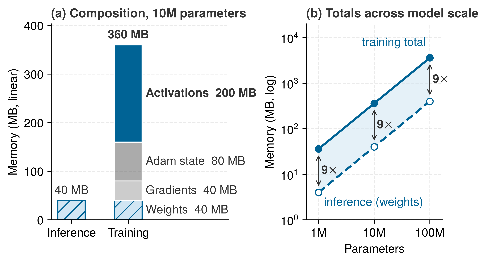
Содержание главы
Содержание
- 11 Периферийный интеллект
- 11.1 Парадигма периферийного обучения
- 11.2 Зачем учиться на устройстве
- 11.3 Проектные ограничения
- 11.4 Адаптация модели
- 11.5 Эффективность данных
- 11.6 Алгоритмы федеративного обучения
- 11.7 Федеративное обучение в масштабе
- 11.8 Непрерывная адаптация в рамках периферийных бюджетов
- 11.9 Интеграция опор периферийного интеллекта
- 11.10 Интеграция в промышленную эксплуатацию
- 11.11 Инженерные сложности и их смягчение
- 11.12 Заблуждения и подводные камни
- 11.13 Итоги
11 Периферийный интеллект
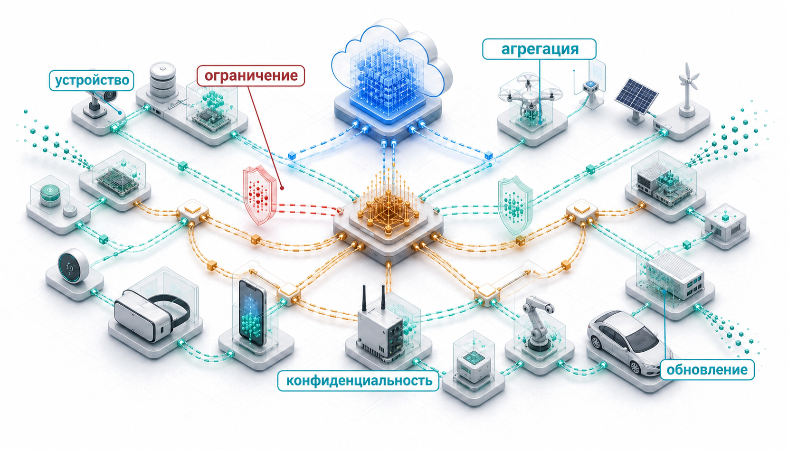
Назначение
Когда обучение должно переместиться из дата-центра на устройства, которые оно обслуживает?
Модель, обученная в дата-центре, сталкивается с новыми условиями при развёртывании на устройстве пользователя. Словарь, освещение, акустика и паттерны использования могут отличаться от распределений, которые сформировали её параметры, и этот разрыв может увеличиваться по мере изменения поведения. Централизованное обучение не способно предвидеть каждый контекст, а ограничения приватности или ограниченная связность могут помешать попаданию локальных наблюдений в дата-центр. Обучение там, где производятся данные, может улучшить локальное поведение, но запуск инференса офлайн сам по себе не оправдывает обучение на устройстве. Адаптация должна давать достаточно преимуществ, чтобы оправдать затраты памяти, батареи и теплового бюджета, не мешая основной работе устройства. Задача обучения, помещающаяся в простаивающий телефон, может стать неприемлемой, как только пользователь запустит другое приложение. Даже успешное локальное обучение оставляет проблему парка: улучшения нужно оценивать на множестве устройств с разными возможностями, данными и доступностью. Политика, принимающая обновления только от хорошо подключённых устройств, может улучшить измеряемые результаты, пренебрегая пользователями, чьи устройства редко проходят отбор. То, что одно устройство учится эффективно, ещё не означает, что популяция может учиться надёжно или что обмен обновлениями модели защищает приватную информацию. Инженерное решение связывает ценность локальной адаптации со стоимостью участия и с доказательствами, необходимыми для доверия к разделяемым улучшениям. В терминах C³ вычисления должны помещаться в каждое устройство, коммуникация должна переносить полезные обновления в пределах ограниченных окон связности, а координация должна сохранять репрезентативную обучающуюся популяцию несмотря на отсев и неравенство ресурсов.
Цели обучения
- Сопоставить централизованное облачное обучение, обучение на устройстве и федеративное обучение, анализируя их потоки данных, свойства приватности и операционные компромиссы
- Количественно оценить накладные расходы обучения на периферийном устройстве по сравнению с развёртыванием «только инференс» по памяти, вычислениям и энергии
- Вывести условие допуска фонового адаптирования из энергетического, теплового и резерва задержки приоритетного (foreground) инференса
- Выбирать методы адаптации моделей и эффективности использования данных по уменьшаемому члену памяти, риску забывания и стоимости хранения
- Проанализировать, как сэмплирование клиентов, отсев и неоднородность данных (non-IID) определяют, по какой популяции учится федеративная модель и за какое время достигается цель
- Спроектировать системы федеративного обучения, агрегирующие приватно-сохраняемые обновления в пределах ограничений восходящего канала, защищённой агрегации и совместимости версий
- Объяснить операционные средства контроля, необходимые для обучения на устройстве: развёртывание с учётом устройств, распределённая валидация, приватно-сохраняемый мониторинг и откат на разнородных популяциях
11.1 Парадигма периферийного обучения
Представьте голосового помощника, обученного на миллионах универсальных аудиопримеров в облачном дата-центре. При развёртывании он может испытывать трудности с региональным акцентом или бытовым словарём. Без локальной адаптации его качество может снижаться по мере расхождения использования с обучающим распределением. Периферийный интеллект (edge intelligence) размещает инференс, адаптацию и координацию на устройствах или рядом с ними — там, где наблюдаются данные, — позволяя моделям реагировать на локальный контекст при ограничениях по энергии, памяти, приватности и связности.
Обслуживающий парк и так должен выполнять целевые показатели задержки (SLO) несмотря на отказы и неравномерную нагрузку. На периферии оператор дополнительно теряет контроль над тем, когда устройство располагает питанием, связностью или свободной памятью. Единицей проектирования остаётся парк, но его участники могут исчезнуть между отбором и завершением. Локальная адаптация здесь важна потому, что её стоимость определяет, какие пользователи вообще могут вносить вклад в обучение популяции.
↩︎ Обслуживающие парки, удерживающие целевые уровни обслуживания по задержке (SLO) при отказах реплик и неравномерной нагрузке, рассматриваются в Обслуживание в масштабе.
Определение 11.1: Обучение на устройстве
Обучение на устройстве (on-device learning) — это локальное обучение или адаптация моделей машинного обучения непосредственно на развёрнутом аппаратном обеспечении с использованием данных, которые остаются на устройстве; локальное обновление не требует соединения с сервером, хотя отправка его результата — требует.
- Значимость: Она обеспечивает персонализацию и продолжающуюся адаптацию там, где связность прерывиста или исходные данные не могут покинуть устройство. В терминах закона «железной» машины для одной машины каждое обновление добавляет в член вычислений
работу обратного прохода и оптимизатора, которая нужна и приоритетному инференсу, а также расходует отдельный бюджет батареи и тепла, который условие допуска Уравнение 2 далее формализует. - Отличие: В отличие от периферийного инференса, который лишь исполняет фиксированную модель, обучение на устройстве запускает локальный цикл оптимизации (прямой и обратный проходы плюс обновление параметров), требующий больше памяти и вычислений, чем один прямой проход.
- Частая ошибка: Распространённое заблуждение — что обучение на устройстве требует обучения с нуля. В действительности это почти всегда адаптация на устройстве (on-device adaptation), которая дообучает небольшое подмножество параметров предобученной базовой модели под распределение данных локального окружения.
Рассмотрим один федеративный раунд для голосового помощника. Координатор отбирает подходящие устройства и распространяет общую версию модели и ограниченную политику обучения. Каждое отобранное устройство обучается на локальных примерах, когда его политика допускает фоновую работу, а затем возвращает обновление модели с пометкой стартовой версии. Некоторые устройства теряют связность или исчерпывают лимит ресурсов. Координатор закрывает раунд согласно дедлайну и требованиям участия, комбинирует совместимые обновления, оценивает кандидатную общую модель и публикует принятую версию для последующей загрузки. Локальная персонализация может остаться на устройстве, не попадая в агрегат.
Этот раунд имеет форму Архетипа C (Federated MobileNet) — с клиентами телефонного класса, приватными локальными данными и прерывистой доступностью, — и раскрывает компромисс C³ до выбора любого метода адаптации. Закон парка (Уравнение (3)) задаёт ему бюджет времени с одним изменением трактовки. В дата-центре член вычислений делит работу одной задачи между
Больше локальных вычислений может снизить частоту коммуникации, но тогда устройствам нужны более длинные непрерывные окна обучения, а их модели могут дрейфовать к различным локальным распределениям. Короткие дедлайны ускоряют координацию, но исключают медленных участников. Поэтому парк должен учитывать, чьи обновления завершились, а не только сколько устройств было отобрано. Бюджеты устройств, методы адаптации и повторное использование данных определяют работу внутри раунда; агрегация и планирование определяют, улучшает ли эта работа общую модель. Раунд такого рода, повторяемый по популяции, и есть федеративное обучение.
↩︎ Архетип C (Federated MobileNet) — федеративная нагрузка телефонного класса с приватными локальными данными и прерывистой доступностью — вводится в Архетип C (федеративный MobileNet).
Определение 11.2: Федеративное обучение
Федеративное обучение (federated learning) — децентрализованная парадигма обучения, в которой распределённые устройства совместно обучают общую модель на локальных данных, обмениваясь только обновлениями модели (градиентами или весами).
- Значимость: Она превращает ограничение локальности данных в свойство приватности. В рамках Закона парка (Уравнение (3)) федеративное обучение ограничено широкополосным каналом (
) в члене коммуникации и крайней неоднородностью парка, где зависящая от устройства эффективность и доступность могут различаться на порядки. - Отличие: В отличие от централизованного обучения, где данные перемещаются к вычислениям, федеративное обучение переносит вычисления к данным. Исходные обучающие примеры могут оставаться локальными, но обновления модели, метаданные участия и сообщения протокола всё равно пересекают границу устройства и могут нести персональную информацию.
- Частая ошибка: Частое заблуждение — что федеративное обучение «изначально приватно». В действительности сами обновления модели могут утекать информацию через атаки инверсии градиента, которые подбирают входы, чей градиент совпадает с отправленным обновлением, и тем самым реконструируют обучающие примеры; требуются дополнительные защиты вроде дифференциальной приватности или защищённой агрегации.
Хранение исходных примеров локально снижает один источник утечки, но обновление всё равно может раскрыть информацию о примерах, из которых оно получено. Защищённая агрегация позволяет координатору получить объединённое обновление, не изучая вклад каждого клиента, в рамках предположений протокола о доверии. Дифференциальная приватность1 ограничивает, насколько участие указанного пользователя или записи может изменить публикуемый результат, обычно за счёт ограничения вкладов и добавления калиброванного шума. Ни одна из этих защит не возникает автоматически из федерации. Их стоимость и предположения должны закладываться в дизайн раунда наряду с обработкой отсева и коммуникацией.
↪ Определения дифференциальной приватности, шумовые механизмы и учёт приватности развёрнуты в Дифференциальная приватность.
Смартфон, предсказывающий пользовательский ввод текста, умное домашнее устройство, реагирующее на бытовые распорядки, и беспилотный автомобиль, интерпретирующий локальные условия движения, — все они сталкиваются с вариативностью, слабо представленной в централизованных обучающих данных. Смартфон встречает специфичные для пользователя формулировки. Домашнее устройство наблюдает сезонные сдвиги в распорядках домохозяйства. Автомобиль сталкивается с локальными дорожными условиями, погодными паттернами и привычками трафика, отличающимися от его обучающей среды. Такие разрывы являются аргументом за обучение на устройстве (определение 11.1) — перенос машинного обучения от централизованного обучения к распределённому по разнородным устройствам, работающим при жёстких лимитах энергии, памяти и тепла. Поскольку локальное обучение расходует эти дефицитные бюджеты устройства, разрыв распределения — это довод в пользу адаптации, а не приговор; инженерный анализ должен сначала установить, когда локальное обучение необходимо и да ли данное обновление измеримо улучшает поведение.
11.2 Зачем учиться на устройстве
Разрыв распределения оправдывает расход ресурсов устройства только тогда, когда централизованное дообучение не может закрыть его вовремя или в рамках политики. Облачная модель, полагающаяся на серверный обходной запрос или загрузку исходных данных для каждой корректировки, отказывает всякий раз, когда у пользователя непривычный акцент, у удалённого сенсора пропадает связность, регламент запрещает экспорт персональных следов или миллионы устройств перегрузили бы приёмник бэкенда. Эти четыре давления (персонализация, задержка и доступность, приватность и эффективность инфраструктуры) мотивируют перенос обучения на периферию (Li и др. 2020 г.).
Персонализация важна, когда развёрнутые модели сталкиваются с паттернами использования и распределениями данных, слабо представленными в их обучающей среде. Локальная адаптация может уточнять поведение, используя данные конкретного пользователя: языковые предпочтения, физиологические базовые показатели, характеристики сенсоров или условия окружающей среды. Высокая межпользовательская вариативность оправдывает изменение весов только если адаптированная модель измеримо превосходит фиксированную модель с локальным контекстом.
Ограничения задержки и доступности определяют, где может выполняться обновление и как скоро оно станет полезным. В сценариях периферийных вычислений связность с централизованной инфраструктурой может быть ненадёжной, задержанной или намеренно ограниченной для экономии полосы или энергии. Когда адаптация оправдана, локальное обучение позволяет выполнять обновления в периоды отсутствия связи. Обновление всё равно должно укладываться в ресурсный бюджет устройства, и его дедлайн завершения отделён от дедлайна отклика приоритетного инференса.
Приватность — третий драйвер. Многие приложения связаны с чувствительными или регулируемыми данными: биометрическими измерениями, вводимым текстом, треками местоположения или медицинской информацией. Локальное обучение может снизить приватностную экспозицию, сохраняя исходные данные на устройстве и ограничивая передачу в централизованные системы. Это может упростить комплаенс-инженерию, но само по себе не гарантирует соблюдения регламентов, таких как Общий регламент по защите данных (GDPR), Закон о переносимости и подотчётности медицинской страховки (HIPAA) (U.S. Department of Health and Human Services 2026 г.) или региональные законы о суверенитете данных.
Эффективность инфраструктуры — экономический драйвер. Централизованные обучающие конвейеры требуют серверной инфраструктуры для сбора, хранения и обработки пользовательских данных с потенциально миллионов устройств. Перенос обучения на периферию распределяет вычисления и может сократить приём сырых данных. Полученную экономию нужно сопоставлять с энергопотреблением устройств, повторными передачами моделей и накладными расходами на координацию; снижает ли перенос работы с сервера сквозную стоимость — зависит от всей этой суммы, а не только от счёта за серверы.
11.2.1 Сначала более простые альтернативы
Прежде чем платить эту цену за устройства и координацию, инженерной команде стоит проверить, не удовлетворяет ли требованиям уже статическая модель в паре с локальным состоянием. Внедрение цикла градиентного обучения на устройстве, когда достаточно локального хранилища признаков или таблицы поиска, расходует память, батарею и запас на откат без измеримой выгоды, тогда как более простые альтернативы часто достигают сопоставимого качества при значительно меньших эксплуатационных издержках. Три такие альтернативы нередко закрывают требования персонализации и адаптации без сложности локального обучения (Таблица 1).
| Альтернатива | Механизм | Когда подходит |
|---|---|---|
| Персонализация на основе признаков | Хранить пользовательские предпочтения, историю взаимодействий и поведенческие признаки локально, а затем подавать эти признаки в статическую модель, а не адаптировать веса модели. | Системы рекомендаций новостей могут хранить тематические предпочтения и паттерны чтения локально, а затем объединять эти признаки с централизованной моделью контента. |
| Облачное дообучение с элементами контроля приватности | Дообучать централизованно на данных, авторизованных для передачи, с контролем доступа и, где требуется, заданным механизмом дифференциальной приватности. Федеративная аналитика и защищённая агрегация (Bonawitz и др. 2017 г.) могут поддерживать агрегированную статистику, но сами по себе не предоставляют централизованных обучающих примеров. | Централизованные обновления подходят, когда авторизованная передача данных, задержка обновлений и заданные гарантии приватности удовлетворяют требованиям приложения. |
| Пользовательские таблицы поиска | Комбинировать глобальные модели с механизмами персонализированного поиска, поддерживая лёгкую таблицу для часто встречающихся локальных паттернов. | Персонализация нужна при минимальных вычислительных издержках и объёме хранения. |
Решение о внедрении обучения на устройстве должно опираться на свидетельства того, что более простые альтернативы не могут удовлетворить требованиям развёртывания — например, ограничения на передачу обучающих данных или ненадёжная связность в момент, когда нужна адаптация. Задержка — требование, которое чаще всего ошибочно принимают за такое свидетельство. Для приложений, чьи дедлайны переднего плана короче времени сетевого round-trip, облачный инференс архитектурно неосуществим. Обработка камеры в пределах 33 ms, голосовой отклик менее 500 ms, задержка motion-to-photon в AR/VR менее 20 ms или система критически важного управления менее 10 ms — все они сталкиваются с временем сетевого round-trip, обычно составляющим от 50 до 200 ms. Когда сеть не может удовлетворить дедлайн переднего плана, инференс должен оставаться локальным. Однако фиксированная модель тоже исполняется офлайн, так что дедлайн определяет лишь, где модель исполняется, и оставляет открытым вопрос, где она обучается. Локальное обучение оправдывает вложенные в него инженерные усилия только тогда, когда измеренный выигрыш от адаптации оправдывает дополнительные затраты ресурсов и эксплуатации.
11.2.2 Где адаптация окупается
Каждая прикладная область должна обосновывать адаптацию сравнением с её более простыми альтернативами, и области различаются тем, какой ресурс заканчивается первым. Экранная клавиатура смартфона встречает личный словарь и меняющиеся паттерны набора, которые могут быть плохо представлены в выпущенной модели. Локальное обучение может использовать эти наблюдения для персонализации или вносить обновления в общую модель; это отдельные цели. Например, Google Gboard,2 применяет федеративное обучение для улучшения общих моделей на большой совокупности пользователей, сохраняя сырые данные локально на каждом устройстве (Hard и др. 2018 г.).
Та же клавиатура во время инференса использует две интерактивные стратегии предсказания (Рисунок 1). Предсказание следующего слова ранжирует дискретные варианты токенов («favorite», «address», «schedule») в панели подсказок, тогда как Smart Compose генерирует многословный инлайн-текст-призрак («ail address») через перескоринг на лету прямо внутри входного буфера. Оба механизма персонализируют непосредственное взаимодействие через локальный контекст; более долговременное улучшение модели происходит отдельно, когда федеративное обучение агрегирует подходящие обновления с устройств.
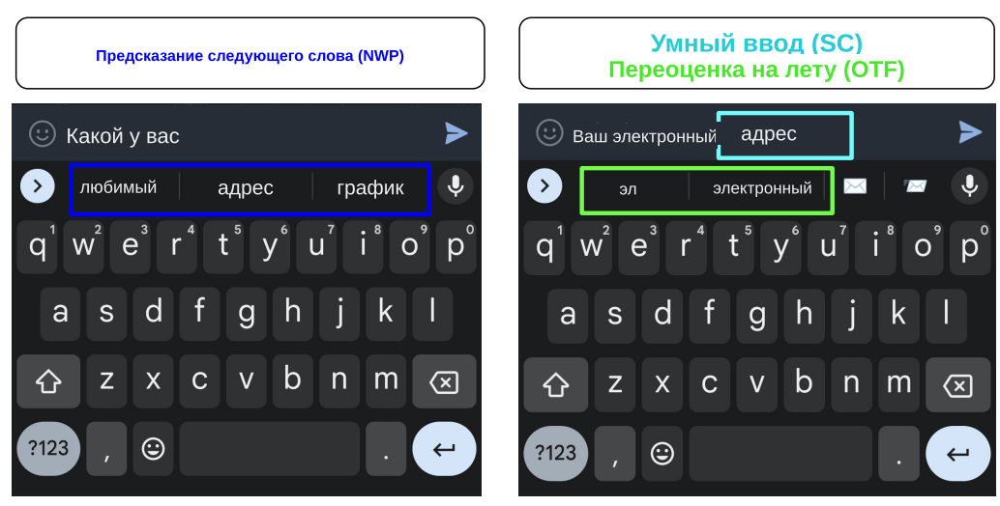
Носимые мониторы здоровья, отслеживающие активность и физиологию по акселерометрам, датчикам частоты сердечных сокращений и мониторам электродермальной активности, сталкиваются с иной проблемой персонализации. Индивидуальные физиологические базовые линии и размещение сенсоров могут влиять на предсказания, что мотивирует калибровку или локальную адаптацию. Оценка должна отличать полезную персонализацию от «выучивания» изменения, которое приложение призвано обнаружить. Монитор, адаптирующийся к устойчиво растущей частоте сердечных сокращений пользователя в покое, нормализует тот самый сигнал, для выявления которого существует. Хранение наблюдений локально сокращает передачу сырых данных; точнее ли адаптированная модель — отдельное измерение по отложенным исходам.
Голосовые интерфейсы в умных колонках и наушниках должны быстро и точно распознавать команды в шумных, меняющихся акустических средах, начиная с детектирования ключевого слова.3 Такие системы сталкиваются с требованиями задержки переднего плана, например целевым сквозным откликом менее 500 ms и целью детектирования ключевого слова ниже 100 ms. Эти цели ограничивают инференс и допустимые помехи от фонового обучения. Локальная адаптация решает отдельную задачу качества: снижение ложных срабатываний и пропущенных детектирований для голоса и акустической среды пользователя. Далекопольные конфигурации микрофонов и акустика помещения мотивируют такую адаптацию, но её ценность должна измеряться при сохранении времени отклика переднего плана.
Промышленный IoT и системы удалённого мониторинга раскрывают сторону доступности этого решения. В сельскохозяйственном сенсорном мониторинге, контроле трубопроводов или экологическом наблюдении связность с централизованной инфраструктурой может быть ограниченной, дорогой или отсутствовать. Локальный инференс позволяет продолжать детектирование в отключённом состоянии. Локальное обучение добавляет возможность корректировать пороги или отслеживать сезонные тренды — при условии, что обновление сохраняет различие между ожидаемой вариацией и аномалиями. Последствия пропущенных детектирований делают валидацию и восстанавливаемую базовую версию частью дизайна адаптации.
Системы встроенного компьютерного зрения, включая робототехнику, AR/VR и умные камеры, сочетают существенную обработку изображений с жёсткими дедлайнами переднего плана из Глава 11.2.1 — от интервала кадра в 33 ms до контура управления менее 10 ms. Адаптация на устройстве может перекалибровать модель под новые условия освещения, облик объектов или паттерны движения, но расходует ресурсы, необходимые этому конвейеру переднего плана. Полезное обновление должно улучшать проверенное поведение, не исчерпывая запаса задержки, который сделал локальный инференс осуществимым.
Каждая область превращает возможную выгоду от адаптации в решение о ресурсах. Мобильным клавиатурам нужно уместить состояние обновления рядом с набором текста, носимым устройствам — распределить энергию между повторными обновлениями, голосовым и зрительным системам — сохранить дедлайны переднего плана, а отключённым сенсорам — решить, остаётся ли достаточной фиксированная модель.
11.2.3 Что пересекает границу устройства
Когда область оправдала локальное обучение, следующий вопрос — учится ли каждое устройство изолированно или делится найденным с парком. Строгое удержание всего обучения внутри каждого устройства лишает парк возможности делиться новыми словами, опасностями на дороге или акустическими паттернами, обнаруженными миллионами пользователей, а загрузка сырых наблюдений в центральный кластер раскрывает приватные данные и потребляет пропускную способность глобальных сетей. Централизованное обучение собирает данные на управляемой инфраструктуре и выпускает проверенные версии моделей на устройства; локальная адаптация вместо этого меняет модель устройства, используя наблюдения, которые могут быть недоступны централизованно. Аппаратное обеспечение, ПО, энергопотребление и связность при этом варьируются по всей обучающей популяции, поэтому оператор должен координировать версии моделей и оценивать обновления от прерывисто участвующих клиентов (Bonawitz и др. 2019 г.).
Вернувшееся устройство может хранить старую модель или не суметь применить релиз. Подписанные обновления, функциональные проверки, телеметрия развёртывания и откат потому и являются частью протокола обучения (Bonawitz и др. 2019 г.).
Центральное решение — сколько состояния разделять между устройствами. Централизованное обучение, адаптация только локально и федеративная координация — архитектурные выборы, способные сосуществовать в одном развёртывании. Локальная адаптация специализирует модель по наблюдениям её пользователя, которые часто являются не-IID4 и зашумлёнными, поэтому разделение такой специализации требует явной границы между личным состоянием и параметрами, предназначенными улучшать популяционную модель. Федеративная координация добавляет популяционное обучение, периодически агрегируя обновления общих параметров. Развёртывание должно указывать, какие параметры входят в агрегат, а какие остаются личными; усреднение каждой локальной адаптации стёрло бы это различие. Локальность данных ограничивает передачу сырых данных, тогда как отдельные механизмы приватности управляют обновлениями, покидающими каждое устройство. Три архитектуры, таким образом, различаются тем, что пересекает границу устройства, а не тем, насколько они продвинуты (Рисунок 2): обучение только локально ничего не отправляет, централизованное обучение отправляет сырые примеры, а федеративное обучение отправляет только обновления модели
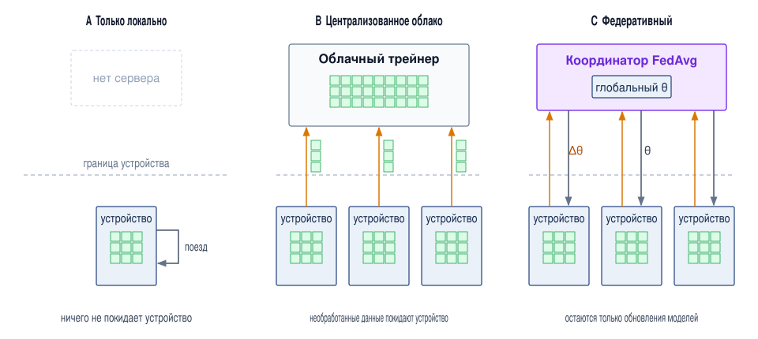
Выбор общего и личного состояния должен соответствовать устройствам, которые его исполняют. Управляемые центры обработки данных могут выделять ёмкость и планировать обучение на выделенных ресурсах; периферийные устройства делят ограниченные питание, память и охлаждение с приложениями переднего плана. Именно эти локальные бюджеты определяют, какие варианты адаптации и координации остаются осуществимыми.
11.3 Проектные ограничения
Дообучение нейросети на смартфоне ограничено питанием и теплом: обучающий GPU-кластер может потреблять мегаватты в управляемом дата-центре, тогда как смартфон удерживает лишь несколько ватт до троттлинга. По всему спектру периферии память варьируется от нескольких гигабайт в телефонах до сотен килобайт в микроконтроллерах, устойчивое питание — от нескольких ватт до милливатт, а сетевая связность может быть прерывистой или полностью отсутствовать. Поэтому обучение на устройстве должно экономно расходовать вычисления, память и данные, а когда локальная модель работает в контуре критически важного управления, эти ресурсные ограничения становятся инженерными проблемами безопасности жизни.
Опорный пример 11.1: Archetype C (Federated MobileNet): Стена энергопотребления периферии
Эти ограничения проходят через Архетип C (Federated MobileNet), где обучение происходит на устройствах класса телефонов с энергетическим бюджетом порядка 2–10 W — несколько ватт устойчиво с краткими всплесками до 10 W — и который приходится делить с работой пользователя на переднем плане. Ограничения приватности и политики часто запрещают вывоз сырых примеров с устройства, и даже там, где передача разрешена, мобильный аплинк и батарея редко позволяют отправлять сырые данные в облако. Локальность данных — потому одновременно и требование политики, и ограничение пропускной способности и энергии. Квантизированное обучение, разреженные обновления и федеративная координация — стратегии, позволяющие Архетипу C учиться в этом энергетическом конверте. Удерживаемая на пиковом потолке идеализированная батарея 15 Wh была бы исчерпана примерно за 1.5 hours, а троттлинг из-за нагрева завершил бы работу раньше. Сенсоры класса микроконтроллеров с сотнями килобайт памяти и милливаттными бюджетами лежат на экстремуме ниже Архетипа C, и эта глава рассматривает их именно так.
Ограничения на параметры, операции и данные взаимодействуют. Больший батч может улучшить утилизацию аппаратуры, превысив ёмкость памяти; меньшее обучаемое состояние может уместиться в память, извлекая слишком мало сигнала из локальных данных. Сжатие даёт один путь к осуществимой отправной точке. Квантизация уменьшает число байт на вес, прореживание удаляет выбранные параметры, а дистилляция знаний переносит поведение в архитектуру меньшего размера. Когда базовая модель уместилась, локальное обучение должно также учесть состояние и работу, необходимые для её адаптации.
Обучение на устройстве добавляет к нагрузке инференса обучающее состояние и работу. Обновление всей модели требует прямого распространения, вычисления градиентов через обратное распространение и обновления весов. Память растёт, потому что обновление должно удерживать градиенты, состояние оптимизатора и активации, сохранённые для обратного прохода. Арифметика растёт, потому что обратный проход вычисляет градиенты как по активациям, так и по весам — до примерно двукратной работы прямого прохода. Размер каждого прироста зависит от модели, батча, точности и расписания исполнения. Сжатие и выборочная адаптация снимают разные части этого давления, поэтому осуществимость требует учёта итогового рабочего набора, а не применения универсального множителя.
Релевантный бюджет — это ёмкость, доступная задаче обучения. Централизованное обучение может резервировать ресурсы и собирать наборы данных по единой политике управления. Устройство же должно вписать обновление в рамки операционной системы, приложений переднего плана и локально доступных примеров. Поэтому суммарная установленная память или пиковая пропускная способность ускорителя преувеличивают то, чем может воспользоваться фоновое обучение.
Эти ограничения определяют право устройства на участие в федеративном раунде. Занимаемый моделью объём и объём обучаемого состояния определяют, какие классы устройств вообще могут участвовать. Разреженные и неоднородные данные определяют, сколько сигнала способен извлечь каждый локальный апдейт. Ограниченные вычисления определяют, когда обучение возможно в принципе. Политика, превышающая бюджет на более слабых устройствах, меняет популяцию, представленную в агрегате, — даже если она улучшает пропускную способность на более сильных устройствах.
11.3.1 Количественная оценка накладных расходов на обучение на периферийных устройствах
Компактная модель с 10 млн параметров, чьи FP32-веса объёмом 40 MB свободно помещаются в долю фоновой памяти смартфона, может раздуться до 360 MB, как только обратное распространение добавит градиенты, состояние оптимизатора и сохранённые активации. Эта сумма превышает потолок фоновой памяти, и процесс аварийно завершается на первом обратном проходе. Обучение меняет занимаемый памятью объём, пропускную способность памяти и утилизацию аппаратного обеспечения за счёт дополнительного живого состояния и обратных операций. Иллюстративные приращения в Таблица 2 считают разные вещи от строки к строке, поэтому каждый множитель несёт собственный знаменатель. Диапазон памяти 4–12× сравнивает рабочий набор для обучения с одними лишь весами инференса, исключая из знаменателя активации и рабочую область инференса. Диапазон вычислений 2–3
| Измерение ограничений | Инференс | Усиление при обучении | Влияние на дизайн |
|---|---|---|---|
| Занимаемый объём памяти | Веса модели + одна карта активаций | Веса + полный кэш активаций + градиенты + состояние оптимизатора | 4–12 |
| Вычислительные операции | Только прямой проход | Прямой + обратный проход + обновление весов | 2–3 |
| Пропускная способность памяти | Последовательное чтение весов | Двунаправленный поток данных для градиентов | Дополнительный трафик зависит от масштаба обновления и расписания активаций |
| Энергия на адаптацию | Одна операция инференса | Множество градиентных шагов до сходимости | 10–50 |
| Требования к данным | Текущие входы; обучающие метки не нужны | Локальные примеры для обновления, часто разреженные или шумные | Требует методов, эффективных по числу образцов |
| Утилизация аппаратного обеспечения | Оптимизировано для прямых проходов | Иные паттерны доступа при обратном распространении | Ускорители инференса могут не помочь обучению |
Строка памяти раскладывается на четыре массива (Рисунок 3). Панель (a) начинает с 40 MB FP32-весов для модели на 10 млн параметров и добавляет 40 MB градиентов и 80 MB состояния Adaptive Moment Estimation (Adam) для его двух массивов моментов. Добавление 200 MB предполагаемого состояния активаций доводит сумму до 360 MB — усиление в 9× относительно весов. Та же бухгалтерия покрывает диапазон таблицы. Веса, градиенты и два момента Adam — это четыре массива размером с веса; это нижняя граница 4×, достигаемая, когда сохранённые активации пренебрежимо малы. Активации в пять-восемь раз больше байтов весов поднимают сумму от 9× до 12×.
Панель (b) фиксирует пропорции 9× для масштабов моделей от 1 млн до 100 млн параметров, так что её постоянное отношение — это допущение, а не результат. Что она показывает, так это абсолютную стоимость этого отношения. Разрыв между весами и обучающим стеком растёт от десятков мегабайт при 1 млн параметров до гигабайт при 100 млн, поэтому модель, чьи веса помещаются свободно, может иметь обучающий стек, который не помещается. Фактическая пиковая память зависит от выбора оптимизатора, размера батча, контрольных точек активаций и того, сколько слоёв обновляется; диапазон 4–12× описывает эти конфигурации, а не предсказывает конкретное устройство.
↪ Байты на параметр, занимаемые весами, градиентами и состоянием оптимизатора при обучении в смешанной точности Adam, разбираются в Числовая точность и память обучения.
Пиковое потребление памяти
Один градиентный апдейт занимает четверть фоновой квоты памяти.
Рассмотрим клавиатуру смартфона, использующую локальные градиентные апдейты для адаптации к словарю пользователя и его манере набирать текст. В иллюстративном профиле устройства апдейт требует 50 MB–100 MB для активаций и состояния оптимизатора при фоновой квоте памяти 200 MB–300 MB. Фактическая квота зависит от операционной системы, устройства и рабочей нагрузки переднего плана. При выбранной рабочей точке апдейт потребляет 25 percent этой квоты ещё до учёта состояния других приложений. Дизайнерское решение — сколько обучения можно вместить в оставшийся бюджет, сохраняя отзывчивый набор текста; суммарная установленная оперативная память устройства на него не отвечает.
Помещается ли апдейт в эту квоту, зависит от пикового живого резидентного объёма на шаге, поскольку тензоры выделяются и освобождаются динамически по ходу исполнения. Пик наступает, когда веса, сохранённые активации, градиенты, состояние оптимизатора и временная рабочая область сосуществуют, — и это не обязательно одна и та же операция в каждой реализации. Для модели на 10 млн параметров из Рисунок 3 40 MB FP32-весов принадлежат обучающему рабочему набору в 360 MB, из которого 200 MB — сохранённые активации. На фоне 8 GB установленной оперативной памяти смартфона этот рабочий набор в 360 MB выглядит скромно, однако он превышает даже верхнюю границу квоты 200 MB–300 MB, которую операционная система выдаёт фоновой задаче после себя и приложений переднего плана. Контрольные точки активаций (также называемые контрольными точками градиентов) отбрасывают выбранные промежуточные активации и пересчитывают их при обратном проходе (Chen и др. 2016 г.) — тот же обмен, который сокращает память активаций при обучении в дата-центрах. Он меняет дополнительные вычисления на меньший объём хранения активаций, поэтому его ценность зависит и от снимаемого пика, и от дополнительного времени и энергии, которые устройство может себе позволить.
↩︎ Контрольные точки активаций, пересчитывающие выбранные активации при обратном проходе ради сокращения памяти активаций ценой дополнительных FLOPs, вводятся в Проходы вперёд и назад в фазе вычислений.
Именно эта квота, а не установленная оперативная память, является потолком для бюджета рабочей памяти, которому должна отвечать каждая стратегия адаптации в этой главе (Рисунок 4). Среда исполнения выгружает замороженные веса из энергонезависимой флеш-памяти в рабочую и резервирует запас ниже физического потолка устройства
Затем допуск требует
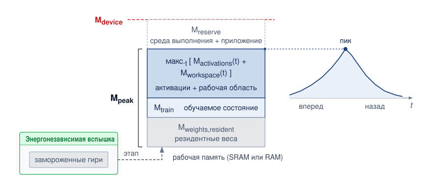
Таким образом, перед применением оптимизации инференса для адаптации требуется вторая проверка осуществимости. Уменьшение объёма хранимых весов может оставить активации или состояние оптимизатора доминирующей статьёй затрат. Выбор того, какие параметры обучать, меняет эту калькуляцию, связывая анализ памяти с последующими решениями по адаптации.
Контрольная точка 11.1: Ограничения обучения на устройстве
Проверьте понимание того, как обучение усугубляет ограничения периферии:
11.3.2 Ограничения модели
Модель, свободно помещающаяся на смартфоне, может потерпеть неудачу до первого обратного прохода на менее производительном периферийном уровне. MobileNetV2 в стандартной конфигурации требует примерно 14 MB хранилища. Это легко помещается в ОЗУ смартфона, но многократно превышает 256 KB SRAM и 1 MB флеш-памяти микроконтроллеров вроде Arduino Nano 33 BLE Sense.5 На столь жёстко ограниченных платформах даже один свёрточный слой может при обучении исчерпать доступную ОЗУ из-за промежуточных карт признаков и хранения градиентов. Развёрнутые в облаке модели могут охватывать миллиарды параметров при бюджетах памяти в несколько гигабайт. Модели, предназначенные для обучения на устройстве, должны укладываться в жёсткие пределы по памяти, хранилищу и вычислениям, причём каждый из этих пределов дополнительно ужесточается факторами из Таблица 2.
Обучение добавляет состояние, размер которого нельзя вывести лишь из числа слоёв. Обратное распространение сохраняет или пересчитывает промежуточные активации, причём объём хранения определяется формами тензоров, точностью, размером батча и графиком обновления. Арифметика растёт быстро. Свёрточная модель из 10 слоёв, обрабатывающая изображения
Сложность модели также влияет на энергопотребление при исполнении и тепловые пределы. В смарт-часах или носимых устройствах с батарейным питанием продолжительное обучение может исчерпать энергетический лимит или вызвать троттлинг из-за нагрева (thermal throttling), даже если его тензоры помещаются в памяти. Одна лишь арифметическая точность не определяет осуществимость; энергию определяют длительность обновления и измеренная мощность. Бенчмарки вроде MLPerf Tiny дают целевые показатели малоразмерного квантизованного инференса для ограниченных устройств (Banbury и др. 2021 г.). Техники адаптации на устройстве решают проблему дополнительной стоимости обучения, замораживая большинство параметров, сокращая хранение активаций или выбирая разреженные наборы обновлений (Cai и др. 2020 г.; Kwon и др. 2024 г.).
Батарейные и тепловые ограничения определяют также, когда обучение вообще может выполняться. Иллюстративный профиль смартфона использует устойчивый конверт обработки 2–3 W и кратковременные всплески 5–10 W. Обновление, помещающееся в паузу простоя, может превысить доступный запас, когда начинается работа на переднем плане. Зарядка поставляет энергию, но среда исполнения всё равно должна следить за нагревом и конкуренцией за ресурсы, снижая рабочий цикл обновления или приостанавливая обучение при приближении к пределам. Ночная политика «простой и зарядка» даёт один из возможных окон; остаётся ли это окно пригодным, определяют измеренные условия устройства.
Эти ограничения делают осуществимость адаптации частью выбора архитектуры. Когда базовая модель превышает ёмкость устройства, разбиение, квантизация, оффлоадинг или архитектура поменьше могут изменить занимаемый объём развёртывания, каждое — со своей стоимостью исполнения. Веса INT8 или INT4 часто решают, помещается ли базовая модель вообще, а 1-битные веса сокращают объём весов в 16
11.3.3 Ограничения данных
Умещение модели и её состояния обновления в память решает лишь аспект ёмкости, потому что объём доступных локальных данных по-прежнему определяет, чему фактически может научиться уместившееся обновление. Фитнес-трекер, записывающий тысячи показаний акселерометра за тренировку, может получить лишь одну заданную пользователем метку активности — или вести запись с датчика, калибровка которого сместилась. В отличие от курируемых наборов данных облачного обучения, периферийные данные собираются локально, разрежены во времени и часто не имеют разметки. Поскольку частота выборки, оконирование и временная корреляция способны свернуть целую сессию коррелированных показаний датчиков в одно независимое наблюдение, политика обучения должна закладывать бюджет пригодной супервизии, а не сырых сохранённых байтов.
Данные на устройстве также часто не являются i.i.d. (Zhao и др. 2018 г.). Голосовой ассистент, развёрнутый в разных домохозяйствах, сталкивается с вариациями акцентов, языков, манеры речи и шаблонов команд. Клавиатуры смартфонов наблюдают индивидуальные паттерны набора, предпочтения автокоррекции и многоязычное использование. Централизованные системы тоже встречают такие вариации, но федеративный координатор не может свободно перемешивать сырые примеры между клиентами. Локальные обновления, следовательно, отражают разные распределения данных, что усложняет баланс между общим обобщением и персонализацией.
Дефицит разметки усугубляет проблему распределения. Большинство собираемых на периферии данных по умолчанию не размечено, что требует учиться на слабых или неявных сигналах супервизии. Камера смартфона может за день захватить тысячи изображений, но лишь немногие связаны с осмысленными действиями пользователя (тегирование, добавление в избранное или отправка), которые могли бы служить неявными метками. Во многих приложениях — включая обнаружение аномалий в данных датчиков и адаптацию распознавания жестов — явные метки могут быть полностью недоступны, что делает традиционное обучение с учителем неосуществимым без альтернативных методов слабой супервизии или обучения без учителя.
Качество данных добавляет новые сложности. Экологические датчики или автомобильные ЭБУ могут испытывать изменения калибровки, помехи или механический износ, искажающие или смещающие входные сигналы. Цикл адаптации может учиться на этих изменениях так, будто они представляют полезное новое поведение. Локальные проверки входных данных и валидированные сигналы исходов должны отличать неисправности датчиков от изменений, которым модель должна научиться, — особенно когда сырые наблюдения недоступны для центрального анализа.
Требования приватности и безопасности могут дополнительно ограничивать, какие примеры допустимо хранить или передавать. Хранение медицинских данных, личных переписок или поведенческих следов на устройстве сужает экспозицию сырых данных, но локальное хранилище и передаваемые обновления остаются чувствительными. Проектирование обучения должно определять доступ, сроки хранения и допустимые раскрытия наряду с данными, необходимыми для адаптации и валидации.
11.3.4 Ограничения вычислений
Даже когда компактная модель и валидированные локальные примеры на месте, процессор, исполняющий инференс, может оказаться неспособен обучать их: мобильный нейропроцессор (NPU), заявленный на десятки TOPS для INT8-инференса, может вовсе не иметь ядер обратного прохода или оптимизатора. Обновление на устройстве тогда вынуждено откатываться на CPU и может работать намного медленнее и горячее, чем можно предположить по рейтингу чипа для инференса. По всему спектру периферийного железа — от микроконтроллеров вроде STM32F4 и ESP32 через мобильные процессоры с выделенными AI-ускорителями (Apple Neural Engine, Qualcomm Hexagon, Google Tensor) до высокопроизводительных периферийных модулей — рейтинги инференса измеряют пропускную способность прямого прохода на фиксированных весах. Рабочие нагрузки обучения добавляют обратные операции и операции оптимизатора с совершенно иными путями исполнения.
Поскольку рейтинг инференса не измеряет этот обратный путь, осуществимость зависит от трассировки того, где фактически исполняется каждый оператор обновления. Обратное распространение читает сохранённые или пересчитанные активации, порождает градиенты и обновляет параметры и состояние оптимизатора. Эти операции добавляют трафик памяти, объём которого определяется обучаемым подмножеством и графиком исполнения. Специализированный ускоритель может расширить бюджет инференса, не исполняя ни одного обратного оператора. Проверкой осуществимости, следовательно, является фактический путь обновления. Он выявляет, какой процессор исполняет каждый обратный оператор и оператор оптимизатора, включая любой откат на CPU или GPU, и измеряет время, память и энергию этого пути под нагрузкой переднего плана. Каждый класс устройств далее проходит этот тест пути обновления — с учётом собственной памяти, операторов и энергопотребления, — а не вердикт, прочитанный из рейтинга инференса.
На наиболее ограниченном конце микроконтроллеры вроде STM32F46 или ESP32-S3 предлагают лишь несколько сотен килобайт SRAM и ограниченные бюджеты вычислений и энергии (Warden и Situnayake 2020 г.). Хотя эти семейства включают поддержку одинарной точности с плавающей запятой, практические ML-развёртывания обычно полагаются на квантизованные или фиксированно-точечные ядра ради эффективности. Библиотеки вроде CMSIS-NN (Lai и др. 2018 г.) предоставляют оптимизированные ядра нейросетей для процессоров Arm Cortex-M, достигая улучшения времени исполнения в 4.6
Память микроконтроллера исключает конфигурации обучения, чьи «живые» тензоры превышают SRAM, — а не любую свёрточную модель. Осуществимость зависит от форм тензоров, охвата обновления, численного представления и скомпилированного графика исполнения. Обычный стохастический градиентный спуск (SGD) сокращает состояние оптимизатора по сравнению с методами, хранящими дополнительные массивы моментов.8 Нейросетевая адаптация, например кластеризация
Поднимаясь по вычислительной иерархии, железо мобильного класса представляет собой улучшение, но всё ещё работает под жёсткими ограничениями. Платформы, включая Qualcomm Snapdragon, Apple Neural Engine,9 и систему-на-чипе (SoC) Google Tensor, предоставляют значительно больше вычислительной мощности, чем микроконтроллеры, часто с выделенными AI-ускорителями и оптимизированной поддержкой 8-битных или смешанно-точных матричных операций. Эти ускорители предлагают выделенные блоки матричного умножения, иерархии памяти на кристалле и функции управления питанием, специально спроектированные для инференса нейросетей, с различной поддержкой рабочих нагрузок локального обучения. Хотя эти платформы могут поддерживать более изощрённые процедуры обучения, включая полное обратное распространение по компактным моделям, они всё ещё далеко отстают от вычислительной пропускной способности и пропускной способности памяти централизованных дата-центров. Обучение лёгкого трансформера на смартфоне, например, технически осуществимо, но должно быть жёстко ограничено по времени и энергии, чтобы не деградировать пользовательский опыт.
Возможности железа вносят вклад в осуществимость адаптации на устройстве наряду с алгоритмом и средой исполнения. Масштабирование мобильных ускорителей, прослеживаемое в Рисунок 5, показывает рост заявленного Apple рейтинга с менее чем 1 TOPS на A11 Bionic почти до 35 TOPS на A17 Pro — скачок в 2023 году, который может отчасти отражать изменение точности рейтинга, а не только железа. Эти пиковые рейтинги касаются прямого инференса. Бюджет обучения должен учитывать также обратные операторы и среду исполнения, которая их диспетчеризует.
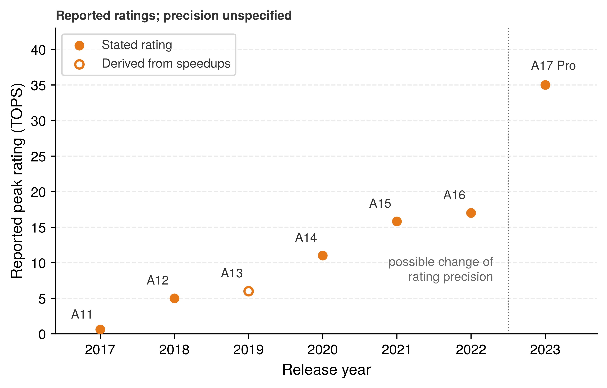
Системный взгляд 11.1: «Кремниевый дивиденд» выделенного NPU
Разрыв между запуском модели на универсальном мобильном CPU и на выделенном NPU лучше всего понимать как «кремниевый дивиденд» (silicon dividend), а не как незначительное ускорение. Опубликованные профили NPU различаются между поколениями кремния и рабочими нагрузками, поэтому эта врезка использует явные сценарные допущения, а не бенчмарк: улучшение задержки в 20× и улучшение энергоэффективности в 60× относительно смоделированного базового случая MobileNetV2 (1.883 ms на инференс на CPU).
Дивиденд принадлежит тем операторам, которые NPU действительно исполняет. Обновление добавляет работу обратного прохода и оптимизатора, стоящую примерно один-два дополнительных прямых прохода, поскольку обратный проход вычисляет градиенты как по активациям, так и по весам. Если среда исполнения не может разместить эти операторы на NPU, они перекладываются на CPU. Прямой проход может по-прежнему собирать свой дивиденд в 20×, но обратная работа на CPU и передачи между процессорами могут доминировать в полном обновлении. Итоговые скорость и энергопотребление зависят от этого смешанного пути исполнения. Поэтому продукт, где доминирует инференс, и продукт, где доминирует адаптация, могут получить от одного и того же кремния совершенно разную отдачу, и только трассировка пути обновления говорит, к какому случаю относится данное развёртывание.
Опубликованные результаты Syntiant Core 2 и STM32N6 иллюстрируют стоимость инференса на выделенных нейропроцессорах в Рисунок 6. Показанные наблюдения охватывают примерно 14× по заявленному энергопотреблению — от распознавания ключевых слов на Syntiant до обнаружения визуального пробуждающего слова на STM32N6. Рабочие нагрузки и границы измерений различаются: результаты STM32N6 включают работу до и после инференса, тогда как Syntiant публикует результаты бенчмарка MLPerf Tiny. Поэтому этот диапазон не устанавливает рейтинг аппаратной эффективности для сопоставимых задач. Энергия на инференс сама по себе не определяет время работы от батареи, поскольку в этот бюджет входят также частота инференса, мощность сна, сенсорика, использование радиомодуля и полезная ёмкость батареи.
Для обучающегося устройства этот рисунок задаёт масштаб, относительно которого нужно оценивать обновление. Показанные оценки стоят десятки–сотни микроджоулей, тогда как каждая секунда обучения внутри устойчивого конверта 2–3 W расходует джоули — более тысячи оценок распознавания ключевых слов при показанных 30–160
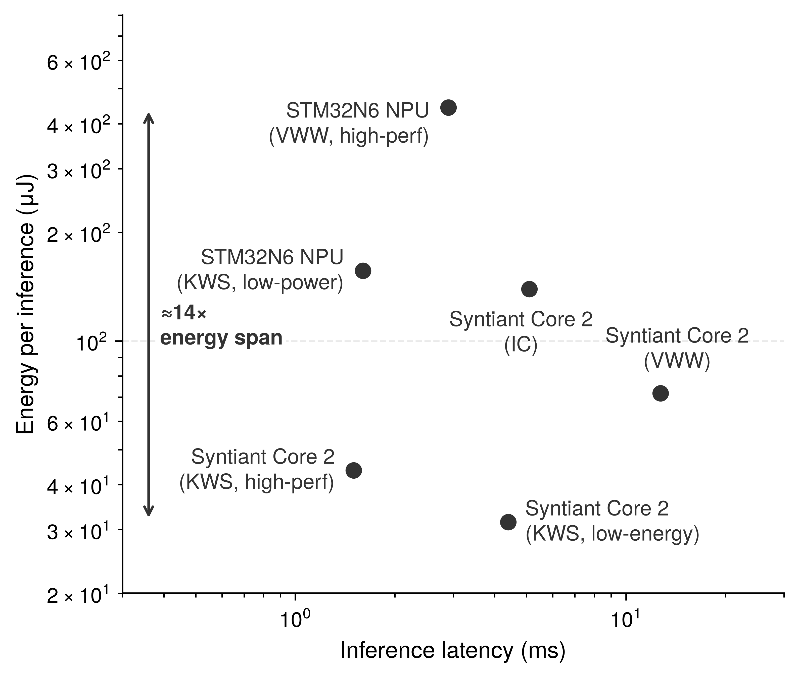
Эти вычислительные ограничения становятся особенно острыми в системах реального времени или с батарейным питанием. Там бюджеты задержки переднего плана из Глава 11.2.1 ограничивают, насколько локальное обучение может создавать помехи, хотя само обучение и не обязано завершаться в пределах дедлайна инференса. У обучения также иные схемы доступа к памяти, чем у инференса. Вычисление градиентов, хранение активаций и обновления оптимизатора добавляют трафик памяти, объём которого зависит от того, какие параметры обучаются и какие промежуточные состояния сохраняются. Эти передачи могут создавать узкие места, которые не улавливают чисто вычислительные метрики. Аппаратные проекты могут решать эти задачи специализированной поддержкой, но конкретное устройство должно открывать эту поддержку через свою среду исполнения обучения. Смешанно-точные тракты данных могут исполнять разные форматы в прямых и обратных ядрах, когда такие ядра существуют. Экономия разреженных обновлений требует пути исполнения, который действительно может пропускать выбранную работу; одни нулевые градиенты не гарантируют снижения аппаратных затрат (Глава 11.4.4). Архитектуры вычислений рядом с памятью10 сокращают затраты на перемещение данных, выполняя обновления градиентов непосредственно рядом с хранилищем весов, снимая узкое место пропускной способности памяти. Однако большинство периферийных ускорителей остаются оптимизированными под инференс, что оставляет обратные операторы и операторы оптимизатора локальной адаптации открытой проблемой совместного проектирования железа и ПО.
Мобильная стена памяти
Растущие рейтинги NPU соблазняют разработчиков читать возможности устройства из TOPS, но каждый байт, который перемещает локальное обновление, пересекает тот же интерфейс памяти, что и трафик инференса, а обновление перемещает гораздо больше байтов, чем инференс. Подсчёт для 10-миллионной параметрической модели из Рисунок 3 — при простейшем допущении, что каждый тензор пересекает DRAM один раз за использование без повторного использования кэша, — показывает, насколько. Прямой проход читает веса и записывает сохранённые активации, а обратный проход перечитывает активации и веса и записывает градиенты. Затем шаг Adam читает веса, градиенты и оба момента и записывает обратно веса и моменты. Один шаг обновления перемещает около 800 MB — в 20× больше байтов весов, чем читает один инференс. При пиковой пропускной способности 51 GB/s у A17 Pro один только этот трафик требует около 16 ms на шаг ещё до какого-либо учёта арифметики.
Декодирование языковой модели на мобильном устройстве — случай, уже встреченный как авторегрессионное узкое место (принцип «Авторегрессионное узкое место»), — показывает ту же потолочную границу в самом наглядном виде, поскольку давление декодирования ложится на память и соединения, а не на пиковую пропускную способность арифметики (Ma и Patterson 2026 г.). Сам интерфейс узок по меркам дата-центров. Дата-центровая HBM3 на H100 обеспечивает 3,350 GB/s пиковой однонаправленной пропускной способности памяти DRAM. Флагманские мобильные системы находятся около 51 GB/s (A17 Pro, LPDDR5) до 77 GB/s (Snapdragon 8 Gen 3, LPDDR5X) — разрыв примерно в 44–65×.
↩︎ Стена памяти — расширяющийся разрыв между пропускной способностью арифметики и пропускной способностью памяти, которая её питает, — установлена в Стена памяти.
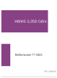
Дата-центровая высокоскоростная память (HBM) обгоняет пропускную способность памяти флагманских мобильных систем примерно в 44 раз.
Отношение времён, ограниченных пропускной способностью, равно этому отношению пропускных способностей только тогда, когда оба устройства перемещают одни и те же байты и поддерживают одну и ту же долю пиковой пропускной способности. Точность, формирование батчей, повторное использование кэша и накладные расходы среды исполнения — всё это сдвигает измеренное отношение. Малоточные веса атакуют эту потолочную границу, когда трафик весов и есть то, что связывает. Хранение весов FP32 в 4 битах, например, сокращает байты весов в 8
Системный взгляд 11.2: Почему ограничивающим ресурсом является пропускная способность, а не TOPS
Декодирование с малым батчем — знакомый случай, ограниченный памятью. Каждый токен заново читает веса, слишком большие, чтобы удерживаться в кэше, поэтому время задаёт член
Оптимизация иерархии памяти
Память устройств охватывает более четырёх порядков величины — от телефона до микроконтроллера.
Ёмкость — это вопрос, на который уже отвечает Уравнение 1. Квантизация, прореживание (pruning) и дистилляция по отдельности могут уменьшить резидентную и обучаемую части этого рабочего множества (Jacob и др. 2018 г.; Han и др. 2015 г.; Hinton и др. 2015 г.), но их выигрыш зависит от рабочей нагрузки и не складывается автоматически, поэтому их необходимо проверять совместно против одного и того же бюджета. Когда рабочее множество помещается, ёмкость ничего не говорит о втором вопросе — сколько трафика порождает обновление через иерархию памяти и какую часть этого трафика могут поглотить кэши. Разбиение операторов на тайлы (tiling) и размещение данных в памяти нацелены на повторное использование активных блоков тензоров до их вытеснения, а размер батча управляет хранением активаций и доступным параллелизмом. Накопление градиентов может ограничить рабочее множество микробатча, но оно также сохраняет состояние накопления и добавляет обращения к памяти, поэтому его влияние на трафик нужно измерять.
Обучение добавляет трафик градиентов и оптимизатора к обращениям к тензорам на чтение и запись, которые уже требуются инференсу. Когда эти пересылки насыщают пропускную способность памяти, дополнительная вычислительная мощность не может сократить время обновления. Контрольные точки активаций (activation checkpointing), введённые при обсуждении пикового использования памяти, показывают, почему ёмкость и трафик нужно считать отдельно. Перевычисление активаций снижает пиковый занимаемый объём, добавляя прямую работу и чтения памяти, так что ёмкость может улучшаться при росте трафика и энергопотребления. Обучение в смешанной точности меняет число байт на хранимый тензор, но полезность меньшего представления определяется численной устойчивостью и поддерживаемыми обратными ядрами. Поэтому ёмкость, трафик и время обновления требуют отдельных измерений.
Оптимизация мобильных ИИ-ускорителей
Выбор ускорителя зависит от обучающих примитивов, которые предоставляет программный стек устройства. Apple Neural Engine, Qualcomm Hexagon DSP и устройства Google Tensor имеют разные контракты компиляторов и сред исполнения, поэтому одно и то же обновление может идти разными путями на каждом из них. Полезный план исполнения определяет, где выполняются извлечение признаков, обучение головы или адаптера и шаги оптимизатора. Выделенный движок может ускорять замороженный прямой путь, пока другой процессор занимается обучением, но тогда в стоимость входят пересылки и дублированные представления. Поддерживаемые операторы и перемещение данных должны быть установлены для конкретного устройства и версии среды исполнения.
Поэтому локальное обновление может выполняться на CPU или GPU даже тогда, когда инференс использует выделенный нейронный ускоритель. На реальном устройстве тест пути обновления, с которого начиналось обсуждение вычислительных ограничений, превращается в короткую процедуру.
- Перечислить операторы обновления в порядке исполнения: прямой проход, каждый обратный оператор, необходимый обучаемому подмножеству, и шаг оптимизатора.
- Для каждого оператора зафиксировать процессор, на который среда исполнения фактически его помещает, отмечая каждый откат с нейронного движка на CPU или GPU.
- При каждой смене процессора добавить пересылку и любое дублированное представление тензора в учёт памяти и трафика обновления.
- Измерить время, пиковую память и энергию для всего отслеженного пути при работе представительной активной нагрузки.
- Подставить эти измерения в бюджет пиковой памяти Уравнение 1 и в тест допуска Уравнение 2, которые вместе решают, может ли обновление выполняться.
Смешанноточные тракты данных, поддержка разреженных обновлений и вычисления рядом с памятью могут снизить эти издержки, но ни одно из них не является предпосылкой обучения. Важно лишь, может ли доступная среда исполнения выполнить требуемые операторы в рамках ресурсного конверта устройства.
11.3.5 Энергия, нагрев и допуск фоновой работы
Путь обновления, который помещается в память и исполняется на поддерживаемых ядрах, всё равно потерпит неудачу, если 30 минут фоновой обратной проверки заметно разряжают батарею, нагревают телефон в кармане пользователя или задерживают отклик касаний активного приложения. Поскольку энергопотребление, тепловыделение и конкуренция за общий процессор напрямую ощущаются пользователем, мобильный энергетический бюджет ограничивает и сложность модели, которую устройство может обучать, и расписание, по которому допускается фоновое обучение.
Инженерный расчёт 11.1: Разряд батареи: цена периферийного обучения
Задача: Команда проектирует фоновую задачу дообучения (fine-tuning) для персонализированного голосового помощника на смартфоне. Без ограничений задача обучения потребляет 4.5 W, что выше ранее данного устойчивого конверта 2–3 W, и завершается за 30 minutes. Если в телефоне батарея на 15 Wh, какую часть заряда пользователя «невидимое» обновление израсходует?
Математика:
- Суммарная энергия: 4.5 W
0.5 h = 2.25 Wh. - Влияние на батарею: 2.25 Wh/15 Wh = 15 percent.
Системный вывод: Расход 15 percent заряда пользователя на одну фоновую задачу превращает частоту обновлений в решение о развёртывании. Эту энергию нельзя перевести в фиксированное время работы экрана, не указав активную нагрузку. Политика ситуативного планирования (opportunistic scheduling) допускает обучение, когда условия устройства позволяют; федеративная политика может требовать зарядки, Wi-Fi и теплового запаса. Зарядка поставляет энергию, но не устраняет нагрев и конкуренцию с активным приложением, поэтому эти ограничения всё равно требуют отдельных проверок.
Этот расчёт батареи — локальный периферийный вариант более широкого энергетического ограничения. Обучение должно удовлетворять энергетическому бюджету пользователя в дополнение к целевой точности модели. Поэтому производственный проект должен учитывать энергию при планировании, сравнивать локальные вычисления со стоимостью коммуникации и откладывать обучение, когда устройство пользователя не способно принять обновление.
Это решение можно выразить как условие допуска фоновой работы. Пусть
Зарядка может увеличить энергетический лимит, но не отменяет тепловую проверку и проверку задержки активного приложения. Величины должны поступать из профилирования, специфичного для устройства и нагрузки, а среда исполнения должна отзывать допуск при изменении измеренного конверта. Более короткие окна обновления, меньший коэффициент заполнения или меньший набор обучаемых параметров могут сделать отклонённое обновление допустимым; позволить фоновому обучению съесть предельный срок активного приложения нельзя.
Тот же тест решает и то, кто обучает общую модель. Его прохождение коррелирует с классом оборудования, привычками зарядки и связностью, поэтому старые, редко заряжаемые или термически стеснённые устройства дают мало обновлений. В результате популяция, на которой учится федеративная модель, — это допущенная популяция, а не развёрнутая (принцип «Допущенная популяция»). Политика допуска, защищающая каждое устройство, является, следовательно, и политикой выборки, а Глава 11.7.1 измеряет создаваемый ею перекос.
Пример 11.1: Обучение клавиатуры на устройстве
Сценарий: Рассмотрим мобильную клавиатуру, которая обучает свой предсказатель следующего слова локально и передаёт обновления в общую модель через федеративное усреднение (McMahan и др. 2017 г.).
Диагноз: В профиле клавиатуры из Глава 11.3.1.1 одно локальное обновление требует 50 MB–100 MB рабочей памяти при фоновом лимите 200 MB–300 MB. В выбранной рабочей точке одно обновление, таким образом, занимает 25 percent лимита ещё до учёта состояния самой клавиатуры, а резидентные веса в
Системный урок: Федеративная клавиатура должна одновременно выполнить все три условия Уравнение 2 (энергия
11.3.6 Сопоставление периферийных ограничений со столпами адаптации
Ограничения памяти, данных, вычислений и допуска действуют на одно и то же окно обновления одновременно. Уменьшение числа обучаемых параметров так, чтобы обновление уместилось в RAM, всё равно не приведёт к успеху, если локальной супервизии слишком мало для направления шага или если прерывистая связность выбрасывает устройство из каждого федеративного раунда. Поэтому анализ ограничений даёт три связанных проектных решения. Усиление обучения из Таблица 2 мотивирует измерять занимаемый объём обновления против Уравнение 2 и выбирать, какие параметры адаптировать. Дефицит информации — ограниченные локальные наборы данных, распределения non-IID, ограничения на совместное использование данных и минимальная супервизия — мотивирует методы эффективности данных, переиспользующие доступные свидетельства. Когда полезно совместное обучение, гетерогенность устройств и прерывистая доступность мотивируют федеративную координацию с явной валидацией и средствами приватности. Каждый столп отвечает на своё ограничение в рамках одного бюджета развёртывания и приносит к этому ответу собственные приёмы (Таблица 3).
| Категория ограничения | Ключевые трудности | Подход к решению |
|---|---|---|
| Усиление ресурсов | • Рабочие нагрузки обучения (4–12 • Ограничения памяти • Энергетические ограничения |
Адаптация модели • Обновления с эффективным использованием параметров • Селективное дообучение слоёв • Низкоранговые адаптации |
| Дефицит информации | • Ограниченные локальные наборы данных • Распределения non-IID • Ограничения приватности |
Эффективность данных • Few-shot и потоковая адаптация • Воспроизведение опыта (experience replay) • Сжатые представления |
| Проблемы координации | • Гетерогенность устройств • Прерывистая связность • Сложность распределённой валидации • Требования масштабируемости |
Федеративная координация • Федеративное усреднение и асинхронная агрегация • Безопасная агрегация и дифференциальная приватность • Выбор клиентов и работа с отстающими |
11.4 Адаптация модели
Модель на 10 млн параметров из Рисунок 3 — кандидат для инференса на умных часах с 500 MB всей системной памяти, поскольку её FP32-веса занимают 40 MB. Обучение всех параметров потребовало бы всего стека в 360 MB — большей части памяти часов ещё до того, как операционная система и активное приложение возьмут свою долю. Один лишь объём весов не доказывает пригодности для инференса: буферы активаций, рабочая область среды исполнения и резерв для активного приложения тоже должны поместиться. Обучение полной модели оставляет гораздо меньше места для этого остального состояния. Поэтому система обучает лишь компактный, стратегически размещённый набор параметров и, где может, также уменьшает активации, которые должен сохранять обратный проход. Ресурсоэффективная адаптация модели затем определяет и локальную работу, которую устройство может выполнить, и формат общего обновления, который может агрегировать парк устройств.
Инженерный выбор балансирует выразительность адаптации против потребления ресурсов. Полное дообучение открывает все параметры обучению и может подойти для достаточно малых моделей; удержание фиксированной модели может быть достаточным, когда локальный контекст уже даёт нужную персонализацию. Между этими вариантами селективные обновления предлагают меньшее состояние обучения. Ресурсный конверт устройства определяет, какие кандидаты помещаются: устройство класса носимых с 1 MB RAM имеет иной бюджет, чем смартфон с 8 GB. Локальное разнообразие затем определяет, какой объём обучаемой ёмкости полезен. Обновления смещений могут зафиксировать изменения калибровки, тогда как сдвиги, требующие новых признаков, нуждаются в более богатом пространстве обновлений. Поддержка в среде исполнения, стоимость инференса, совместимость общих обновлений и возможность отката определяют, сможет ли кандидат войти в развёрнутую систему.
Выбор техник адаптации следует этой логике сопоставления — от замораживания весов (Глава 11.4.2) до структурированных и разреженных обновлений (Глава 11.4.4). Порядок их изложения — не универсальный рейтинг стоимости или выразительности; эти свойства определяются размещением, размером обновления и поддержкой в среде исполнения. Опираясь на ресурсный учёт из Глава 11.3, цель — наименьшее пространство обновления, улавливающее локальное разнообразие: сохраняй то, что работает глобально, адаптируй то, что важно локально. Замораживание весов ограничивает обучение выбранными существующими параметрами, например членами смещения или финальными слоями, тогда как структурированные обновления добавляют низкоранговые или остаточные компоненты к замороженной базе, а разреженные обновления выбирают существующие параметры по их ценности для адаптации и измеренной стоимости. Каждый выбор должен сохранять достаточно полезной ёмкости, укладываясь в бюджет обновления устройства.
11.4.1 Перенос как предпосылка
Все три семейства адаптации работают лишь потому, что устройство не учит своё представление с нуля. Обучение экстрактора признаков со случайной инициализации на паре десятков зашумлённых телефонных взаимодействий немедленно переобучилось бы и исчерпало энергетический лимит до того, как выучит что-то обобщаемое. Вместо этого каждое локальное обновление, укладывающееся в периферийный бюджет, опирается на перенос знаний, при котором модель, предобученная в облаке, поставляет представления, полезные для новой задачи или домена. Повторное использование этих представлений сокращает то, что устройство должно выучить из локальных примеров, и выигрыш зависит от того, что разделяют задачи. Модель, предобученная в облаке, может адаптироваться при ограниченных локальных обновлениях, если её представления сохраняют различения, требуемые новой задачей. Если новая модальность входных данных или целевая функция требует признаков, которых базовая модель не даёт, малое локальное обновление может оказаться недостаточным.
Перенос — поэтому предпосылка всех следующих методов адаптации. Когда предобученные представления несут различения, нужные персональному словарю набора текста, индивидуальной походке или дрейфующему датчику, обновления только смещений, адаптеры и обучение только головы (переобучающее лишь финальный классифицирующий слой) могут выучить малую коррекцию, замораживая большую часть сети. Когда эта предпосылка не выполняется, адаптация только головы не может восстановить различения, отсутствующие в её фиксированных признаках. Их могут выучить адаптеры в более ранних слоях или более широкие обновления, но их добавленное состояние, вычисления и требования к данным должны уложиться в бюджет устройства.
11.4.2 Замораживание весов
Когда предобученные признаки уже охватывают структуру задачи, самый прямой способ уменьшить
Consider a standard neural network layer:
Это сокращает число хранимых градиентов и состояний оптимизатора, позволяя обучению продолжаться в условиях ограниченной памяти. Меньший объём обучаемого состояния помогает, только если устройство также поддерживает арифметику и схему активаций, необходимые для обновления. В варианте с адаптацией только смещений из Список 1 все свёрточные и полносвязные веса остаются замороженными, а под локальные данные адаптируются только члены смещения.
# Freeze all parameters
for name, param in model.named_parameters():
param.requires_grad = False
# Enable gradients for bias parameters only
for name, param in model.named_parameters():
if "bias" in name:
param.requires_grad = TrueЭтот паттерн ограничивает обновления оптимизатора членами смещения. Что он экономит, а что нет, следует из двух производных слоя выше. Градиент весов
Tiny Transfer Learning (TinyTL) (Cai и др. 2020 г.) нацелен на активационный член Уравнение 1, а также на обучаемое состояние. Он строится на приведённом выше рассуждении о производных. Поскольку замороженные линейные и свёрточные слои отбрасывают свои сохранённые входы, остальной след активаций образуют нелинейности, слои нормализации и любые добавленные обучаемые боковые пути для восстановления выразительности. Добавление стандартного остаточного адаптера рядом с замороженным блоком потребовало бы сохранения полноразмерной входной карты признаков этого блока для вычисления градиентов весов адаптера, что отменило бы экономию памяти. TinyTL избегает этой ловушки с помощью облегчённых остаточных модулей (lite residual), которые понижают разрешение входной карты признаков и проецируют её на узкую ширину каналов перед применением обучаемых свёрток, так что обратный проход кэширует в каждом блоке лишь небольшой низкоразрешающий тензор наряду с компактным состоянием групповой нормализации и активаций.
Полное дообучение (панель A Рисунок 7) вычисляет градиенты для весов каждого промежуточного слоя и кэширует полную входную карту каждого блока, тогда как TinyTL (панель B) замораживает свёрточный бэкбон (серые блоки) и ограничивает обновления параметров понижающими разрешение облегчёнными остаточными боковыми путями и векторами смещений
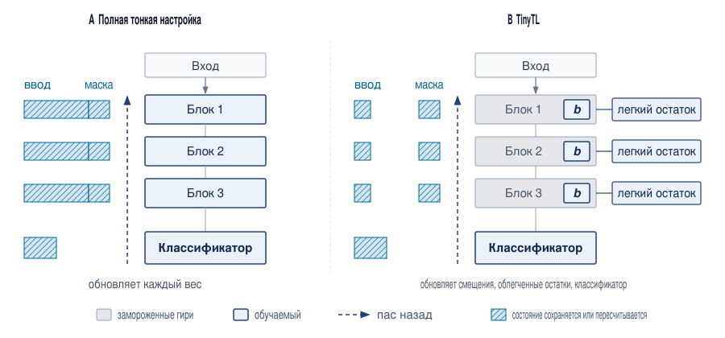
Сокращение памяти полезно только тогда, когда замороженный бэкбон остаётся достаточно выразительным для последующей задачи. Члены смещения допускают небольшие, но значимые сдвиги в поведении модели, особенно для задач персонализации. Когда доменный сдвиг более значителен, TinyTL может дополнительно включать небольшие остаточные адаптеры для повышения выразительности, сохраняя при этом жёсткий профиль системы по памяти и энергии.
TinyTL демонстрирует, что сокращение сохраняемого активационного состояния может быть важнее, чем одно лишь сокращение числа обучаемых параметров (Cai и др. 2020 г.). На своих бенчмарках переноса для классификации изображений TinyTL сообщает об экономии памяти при обучении до 6.5× по сравнению с дообучением полной сети при малой потере точности, так что рабочий набор адаптации может сократиться примерно до 15 percent от следа полного дообучения. Облегчённые остаточные модули, восстанавливающие ёмкость адаптации, добавляют в этом исследовании лишь около 3.8 percent накладных расходов памяти. Эта экономия зависит от выбранного экстрактора признаков, входного разрешения, размера батча, нормализации и конфигурации остаточных модулей. Экономия, измеренная на этих бенчмарках, ничего не говорит о том, поместится ли произвольный замороженный бэкбон в SRAM микроконтроллера, а когда развёрнутая модель должна выучивать более богатые комбинации признаков без пользовательских понижающих разрешение боковых путей, ей нужны общие структурированные обновления рядом с замороженными весами.
11.4.3 Структурированные обновления параметров
Адаптация конвейера камеры смартфона к новому профилю датчика для слабого освещения или мобильной языковой модели к техническому словарю пользователя требует рекомбинации признаков между каналами — изменения, которое скалярные смещения
Адаптация на основе адаптеров
Распространённая реализация заключается во вставке остаточных адаптеров — небольших остаточных бутылочных слоёв — между существующими слоями предобученной модели. Рассмотрим скрытое представление
Адаптеры действуют как обучаемые возмущения поверх замороженного бэкбона. Поскольку они малы и применяются разреженно, их веса добавляют мало к хранимому объёму, хотя их сохранённые активации и состояние оптимизатора по-прежнему учитываются в бюджете обучения. Они позволяют модели смещать свои предсказания в ответ на новые входы.
Остаточный бутылочный слой в Список 2 отображается на уравнение адаптера почленно. Его понижающая проекция играет роль
import torch.nn as nn
class Adapter(nn.Module):
def __init__(self, dim, bottleneck_dim):
super().__init__()
# Project from full dimension to bottleneck (e.g., 768 -> 16)
self.down = nn.Linear(
dim, bottleneck_dim
) # W1: learns compression
# Project back to original dimension (e.g., 16 -> 768)
self.up = nn.Linear(
bottleneck_dim, dim
) # W2: learns expansion
self.activation = nn.ReLU()
def forward(self, x):
# Residual connection: original + nonlinear bottleneck
# Only adapter params trained; base model frozen
return x + self.up(self.activation(self.down(x)))Низкоранговые техники
Другая эффективная стратегия — ограничить само обновление весов низким рангом. Низкоранговая адаптация (LoRA)11 оставляет базовую матрицу
↩︎ Прямой проход низкорангового адаптера, в котором замороженная базовая проекция суммируется с обучаемой понижающей и повышающей проекцией, рассмотрен в Мульти-LoRA обслуживание и пакетное выполнение адаптеров.
Эта декомпозиция опирается на факт линейной алгебры. Любая матрица может быть выражена как сумма ранговых единичных матриц через сингулярное разложение. Ограничение обновлений низким рангом (обычно
LoRA была разработана для трансформеров, но применима к любому слою, построенному на матрице весов. С точки зрения системной инженерии LoRA делает обучаемый адаптер артефактом, который можно хранить, передавать, планировать и откатывать отдельно от замороженной базовой модели.
В масштабе квадратного слоя ширины
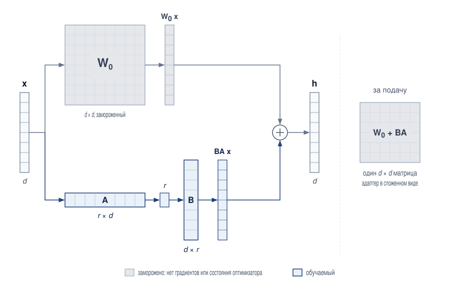
Рассмотрим мобильное развёртывание, где языковая модель с 7B параметров имеет 14 GB след FP16 весов — без учёта дополнительных градиентов, состояний оптимизатора и активаций, необходимых для полного дообучения. Этот след превышает возможности смартфонов с примерно 8 GB общей памяти, если базовая модель не квантизована, не разбита на части и не выгружена. Выбор ранга LoRA 16 ограничивает пространство обновлений, и примеры парка в этой главе выделяют бюджет в 50 MB на эталонное обновление адаптера. Эта цифра — полезная нагрузка связи, а не оценка памяти при обучении. Устройство также должно разместить базовую модель, градиенты, состояние оптимизатора и живые активации в рамках своего плана исполнения.
Меньший объём передаваемых данных также важен при нестабильном подключении. Передача полной FP16-модели в этом примере требует 14 GB, тогда как эталонное обновление адаптера — 50 MB. Время передачи зависит от объёма закодированных байтов, эффективной пропускной способности канала и прерываний. Передача только адаптера даёт экономию лишь тогда, когда принимающее устройство уже располагает совместимой базовой моделью; изменения версии базы должны учитываться в коммуникационном бюджете. И в остаточном узком месте, и в LoRA ширина или ранг
Персонализация на периферии
Адаптеры поддерживают несколько персонализированных контекстов на одном замороженном базовом остове. Для входной ширины
Паттерн переключения адаптеров позволяет смартфону выбирать контекстно-зависимое поведение без замены всего базового остова. Когда пользователь попадает в условия слабого освещения, система может загрузить совместимый адаптер в конвейер компьютерного зрения; выбор существующего адаптера сам по себе не требует обучения. Эта модульность естественным образом распространяется на федеративное обучение: передача только адаптированных параметров может сократить объём выгрузки по сравнению с обновлением полной модели, а экономия определяется общим числом адаптеров и способом кодирования. Исследования остаточных адаптеров показывают, что небольшие обучаемые модули могут адаптировать общий зрительный остов для множества зрительных доменов (Rebuffi и др. 2017 г.), что делает их полезной точкой дизайна между качеством персонализации и системными ресурсами. Заморозка остова сохраняет его параметры, а адаптеры предоставляют ограниченное место для специфичных для пользователя или контекста обновлений. Полученная модель всё же может страдать от катастрофического забывания — утраты ранее усвоенного поведения после новых обновлений (определено в Глава 11.5.2).
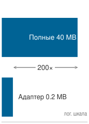
Каждый новый контекст стоит адаптер, а не полную копию модели.
В конвейерах камер смартфонов освещение, пользовательские предпочтения и дисторсия объектива различаются между пользователями. Остаточные модули могут адаптировать замороженную общую модель к этим различиям, оставляя её базовые веса неизменными; поведение комбинированной модели всё равно требует валидации. В системах на основе голоса адаптеры аналогично дают способ тестировать персонализированное распознавание речи без переобучения полной акустической модели. Поддержание совместимости базовой версии и адаптеров также обеспечивает откат или переключение между версиями, специфичными для пользователя, когда адаптация ухудшает качество.
Производительность против ресурсных компромиссов
Выбор стратегии адаптации требует учёта как стоимости ресурсов, так и выразительности. Обновления только смещений сохраняют небольшой обучаемый объём состояния, но могут не обладать ёмкостью для обработки структурных доменных сдвигов. Полное дообучение выставляет адаптации каждый параметр и добавляет соответствующее состояние градиентов и оптимизатора. LoRA и остаточные адаптеры предлагают промежуточные варианты, стоимость которых зависит от ранга или ширины, мест вставки и числового представления. Один и тот же бюджет, Уравнение 1, управляет каждой из этих стратегий. Поскольку пиковая рабочая память
LoRA и остаточные адаптеры налагают разные стоимости развёртывания. При фиксированном адаптере и совместимом числовом представлении линейное обновление LoRA может быть свёрнуто в остов перед инференсом
Среда исполнения должна поддерживать прямые операторы выбранного адаптера и его обучающий путь. Они могут использовать динамический граф или статически скомпилированное расписание обновления; построение динамического графа само по себе не является обязательным требованием. Для движка инференса, такого как Open Neural Network Exchange (ONNX) Runtime Mobile, среда, исполняющая прямой путь адаптера, может всё же не иметь его обратных операторов, оптимизатора или управления состоянием. Развёртывание должно проверить оба пути, включая любые передачи между процессором, выполняющим инференс, и процессором, выполняющим обновления.
Для этой рабочей нагрузки мульти-контекстной персонализации, где одно устройство переключается между несколькими адаптерами, системные архитекторы могут использовать механизм распределения по классам устройств для организации вариантов. На флагманских телефонах (Tier 1) с выделенными Neural Engines и 8 GB ОЗУ и более остаточные адаптеры дают сильный баланс модульности и скорости, поскольку переключение контекстов меняет только состояние адаптера. На устройствах среднего класса (Tier 2) с 1 ГБ до 8 GB LoRA может подойти, когда фиксированный адаптер можно свернуть в совместимое базовое представление перед инференсом, обменивая гибкость переключения на нулевые дополнительные арифметические операции инференса. Для сверхограниченных IoT-конечных точек (Tier 3) с менее чем 1 ГБ ОЗУ обновления только смещений могут оказаться единственным практическим вариантом.
Бюджетные телефоны показывают, что класс определяется памятью, доступной для обучения, а не установленной ОЗУ. Их 4 GB относит их к Tier 2, однако после операционной системы для ML-задач остаётся лишь 1 GB–2 GB. Фоновой задаче адаптации может быть выделено ещё меньше, поэтому развёртывание вправе предъявлять к ним требования механизма Tier 3. Назначения вытекают из рабочей нагрузки не меньше, чем из аппаратного обеспечения. Рабочая нагрузка, хранящая одну адаптацию на пользователя, а не много переключаемых контекстов, теряет причину держать адаптеры раздельными и может предпочесть свёрнутую LoRA даже на флагманских устройствах. Среда исполнения всё же должна проверить занимаемый объём базовой модели и допустить обучение в пределах измеренного аппаратного лимита устройства.
Контрольная точка 11.2: Персонализация на периферийных устройствах
Проверьте понимание эффективной адаптации на устройстве:
11.4.4 Разреженные обновления
Обновления только смещений и фиксированные адаптеры выбирают, где модель может меняться, ещё до наблюдения локальных данных, однако локальный сдвиг может затронуть конкретные свёрточные фильтры или каналы внимания, а не все блоки равномерно. Разреженные обновления вместо этого адаптируют выбранные существующие параметры, а не добавляют модули. Их выразительность относительно адаптеров зависит от выбранных мест и бюджета параметров. Задаче-адаптивная политика выбирает эти места на основе данных о текущей задаче или пользователе. Полученное пространство обновлений может целиться в изменения, которые фиксированное подмножество упускает, но само выделение потребляет ресурсы и не гарантирует, что полный обучающий путь поместится на устройстве.
Полезная экономия зависит от того, что среда исполнения может опустить. Невыбранные параметры не требуют градиента или состояния оптимизатора, но их операции могут по-прежнему лежать на обратном пути к выбранным параметрам. Поэтому политика должна сравнивать измеренную стоимость обновления с его пользой для адаптации; сама по себе доля обучаемых параметров не предсказывает сокращение вычислений. Поскольку слои вносят неодинаковый вклад в локальный прирост качества, выявление минимального подмножества с наибольшей ценностью адаптации позволяет системе тратить дефицитную обучающую ёмкость там, где она больше всего меняет поведение модели.
Проектирование разреженных обновлений
Пусть нейронная сеть определена параметрами
В задаче-адаптивных разреженных обновлениях система выбирает небольшое подмножество
Сложность состоит в выборе оптимального подмножества
- Заморозить всю модель.
- Разморозить один слой-кандидат.
- Кратко дообучить и оценить прирост точности на валидации.
- Ранжировать слои по приросту качества на единицу стоимости (например, на КБ обучаемой памяти).
Такое послойное профилирование даёт ранжирование кандидатов, из которого
В полном конвейере выборочного дообучения это ранжирование — середина из трёх этапов (Рисунок 9). Этап 1 мета-обучает сеть в облаке, то есть обучает её начальные веса так, чтобы несколько последующих обновлений на новых данных хорошо её адаптировали (идея model-agnostic meta-learning, рассматриваемая в Глава 11.7.3). Этап 2 ранжирует слои или группы каналов по пользе адаптации на единицу стоимости устройства и позволяет бюджету устройства задать порог отсечения, а этап 3 обновляет на локальных данных только блоки выше порога. Обратный проход всё же проходит через любой замороженный слой, лежащий между потерей и выбранным блоком, поэтому выбранное множество должно оцениваться по стоимости в рамках полного графика исполнения.
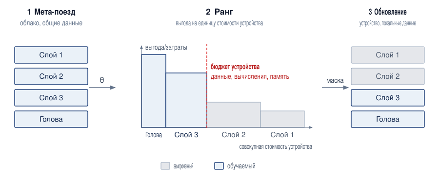
Конкретный пример — TinyTrain, метод, разработанный для быстрой адаптации на устройстве (Kwon и др. 2024 г.). TinyTrain сочетает офлайн-подготовку с задаче-адаптивным методом разреженных обновлений, который динамически выбирает слои или каналы для обновления с использованием пользовательских данных, лимитов памяти и вычислений. Во время исполнения система обновляет только выбранное подмножество, а не рассматривает всю сеть как обучаемую.
В реализации выборочное обновление слоёв превращает ранжирование в решения requires_grad или эквивалентные маски графа. В версии, управляемой профилированием, оценки вклада и лимит памяти решают, какие слои размораживаются (Список 3).
# Selective layer update based on contribution analysis
# Layers selected via profiling: conv2 and fc have highest
# accuracy-per-KB impact for this task
for name, param in model.named_parameters():
if "conv2" in name or "fc" in name:
param.requires_grad = True # Train high-impact layers
else:
param.requires_grad = False # Freeze low-impact layers
# Parameter fraction follows layer shapes; adaptation quality requires evaluation
# Memory savings: gradient storage only for selected layersРассмотрим пользователя в гарнитуре дополненной реальности, которая выполняет распознавание объектов в реальном времени. По мере смены освещения и окружения система должна адаптироваться, чтобы сохранять точность, но обучение должно происходить в короткие периоды простоя или во время зарядки. TinyTrain решает это ограничение с помощью адаптивных к задаче разреженных обновлений: процесс развёртывания выбирает небольшое множество обновляемых параметров, которое умещается в бюджет памяти и вычислений устройства. Такой подход сохраняет адаптацию быстрой, энергоэффективной и чувствительной к памяти, когда целевая задача и профиль устройства соответствуют допущениям метода.
Адаптивные к задаче разреженные обновления всё же вносят системные компромиссы. Анализ вклада имеет нетривиальную вычислительную стоимость, даже если он выполняется на этапе предобучения или начального профилирования, поэтому конвейер развёртывания должен закладывать её в бюджет. Стабильность также требует внимания: если для обновления выбрано слишком мало параметров, модель может недообучиться на целевом распределении, поэтому командам нужны пороговые значения валидации для выбранного подмножества до развёртывания. Политика выбора должна учитывать и аппаратно-зависимые издержки исполнения, поскольку некоторые параметры показывают высокие оценки вклада, но оказываются дорогими в обновлении на определённых архитектурах. Несмотря на эти компромиссы, адаптивные к задаче разреженные обновления дают практический механизм масштабирования адаптации по контекстам развёртывания от микроконтроллеров до мобильных устройств (Kwon и др. 2024 г.).
Сравнение стратегий адаптации
Целевая точка проектирования — наименьшее пространство обновления, охватывающее локальное изменение. Полное дообучение (fine-tuning) оплачивает каждое слагаемое Уравнение 1. Обновления только смещений (bias-only) и обучение только головы подходят для незначительной калибровки или новых выходных категорий. LoRA и остаточные адаптеры добавляют ограниченную ёмкость рядом с замороженной основой. Адаптивные к задаче разреженные обновления тратят усилия на профилирование, чтобы выбрать ценные существующие параметры. Увеличенное пространство обновления оправдано, только если измеренный прирост качества укладывается в бюджет обучения устройства. Каждая стратегия сокращает своё слагаемое бюджета, и выбор всё равно нужно проверять на выразительность, поддержку в среде исполнения и стоимость выбора. Таблица 4 сопоставляет компромиссы этих стратегий адаптации.
| Техника | Обучаемые параметры | Накладные расходы памяти | Выразительность | Применимость | Системные требования |
|---|---|---|---|---|---|
| Полное дообучение | Все параметры | Наибольшие; каждое слагаемое пикового бюджета | Наибольшая | Большой сдвиг домена на производительных устройствах | Полная поддержка обратного прохода и запас памяти |
| Обновления только смещений | Только коэффициенты смещения | Минимальные |
Низкая | Простая персонализация; низкая дисперсия | Экстремальные ограничения памяти/вычислений |
| Обучение только головы | Финальный классификатор | Минимальные; обратный проход останавливается на голове | Низкая | Новые выходные классы; свои слова пробуждения | Замороженный кодировщик; переиспользуемые кэшированные признаки |
| LoRA | Низкоранговые факторы на каждую адаптируемую матрицу | Низкие |
От умеренной до высокой | Одно сливаемое приспособление на пользователя | Шаг слияния и проверка реквантизации для обслуживания |
| Остаточные адаптеры | Модули-адаптеры | Низкие |
От умеренной до высокой | Переключение между несколькими контекстами на мобильных устройствах | SoC мобильного класса с поддержкой в среде исполнения |
| Разреженные обновления слоёв | Выборочные подмножества параметров | Переменные; зависят от выбранных слоёв | Высокая (адаптивность к задаче) | Адаптация в реальном времени; сдвиг домена | Требуется профилирование или метаобучение |
Когда механизм адаптации умещается в бюджет памяти и исполнения устройства, он всё ещё должен учиться на доступных примерах. Сокращение обучаемого состояния не создаёт разметку и не гарантирует, что недавние наблюдения пользователя представляют будущее использование. Следующее ограничение, следовательно, статистическое: извлечение надёжного обучающего сигнала из разреженных локальных данных при сохранении полезного предшествующего поведения.
11.5 Эффективность данных
Пользователь исправляет автозамену клавиатуры смартфона, возможно, три раза в день. Система не может требовать 10 000 размеченных предложений для обучения локальной языковой модели. Эффективность данных на периферии означает агрессивное обучение на разреженном, зашумлённом и необработанном ручье неявной обратной связи пользователя с максимальным извлечением сигнала из каждого взаимодействия.
Системный компромисс — стоимость сбора данных против качества адаптации. Каждый сохранённый пример стоит пользовательского трения, энергии, хранения и приватности. Голосовой ассистент, адаптирующийся к речевым сэмплам, взвешивает улучшение модели против расхода батареи и комфорта пользователя при постоянной записи, а клавиатура выбирает между журналированием поверхностной статистики нажатий и сохранением полных сессий набора. В отличие от центрального конвейера, устройство не может обратиться к более крупному набору данных, когда собственных свидетельств не хватает, и приложение, которому нужно решение до накопления достаточных свидетельств, возможно, лучше обслужит валидированная фиксированная модель, чем немедленное обучение. Что бы устройство ни выучило, это должно оставаться совместимым с механизмом адаптации из Глава 11.4 и с любым федеративным протоколом, который впоследствии его потребляет.
Выбор стратегии зависит от того, какой дефицит связывает первым, а практические системы обычно комбинируют несколько: обучение по немногим примерам (few-shot) обслуживает случаи, когда персонализацию должна обеспечить лишь горстка размеченных или слабо размеченных примеров, тогда как потоковые обновления обслуживают наблюдения, поступающие инкрементально и не поддающиеся предварительному батчированию. Поскольку непрерывные потоковые обновления могут перезаписывать прежнее поведение, воспроизведение опыта (experience replay) тратит память на удержание и переиспользование дефицитных примеров, а сжатие данных уменьшает эти сохранённые истории так, чтобы воспроизведение и лёгкое обучение оставались осуществимыми в бюджетах памяти периферии. Дефицит данных, таким образом, становится задачей распределения, в которой устройство тратит разметку, память, вычисления и бюджет приватности там, где они дают самый надёжный локальный сигнал.
11.5.1 Обучение по немногим примерам и потоковая передача данных
Пользователь, регистрирующий своё слово пробуждения, запишет пять аудиосэмплов при настройке, а не пять тысяч, и последующие исправления приходят по одному взаимодействию за раз при обычном использовании. Поскольку локальное обучение должно исходить либо из крошечного регистрационного набора, либо из пассивного ручья взаимодействий пользователя и показаний окружающих датчиков, оно опирается на две взаимодополняющие стратегии адаптации: обучение по немногим примерам, где модели обобщают с небольшого статического набора примеров, и потоковую адаптацию, где инкрементальные наблюдения поддерживают обновления, планируемые в рамках бюджетов устройства.
Адаптация по немногим примерам использует ограниченные размеченные или слабо размеченные свидетельства для новой задачи или условия пользователя (Wang и др. 2020 г.). Обновления только смещений, модули-адаптеры и классификация на основе прототипов (которая размечает вход ближайшим усреднённым эмбеддингом класса по немногим размеченным примерам) ограничивают то, чему нужно учиться, но каждая всё равно требует валидации на переобучение. Пусть
Системы обнаружения ключевых слов (KWS) — распространённая цель адаптации на устройстве с эффективными данными; Speech Commands предоставляет набор данных для обучения и оценки KWS-моделей с ограниченным словарём (Warden 2018 г.). Детектор должен отличать свою целевую фразу от фоновой речи, удовлетворяя требованиям к задержке и ложным срабатываниям. Один из вариантов дизайна использует предобученный акустический кодировщик, например небольшую свёрточную или рекуррентную сеть, чтобы отображать аудио в эмбеддинги для лёгкого классификатора. Общий кодировщик предоставляет переиспользуемые признаки, а локальные примеры могут поддерживать своё слово пробуждения или недопредставленный акцент. Оправдывают ли эти примеры локальное обучение, зависит от их покрытия, ограничений на перенос и улучшения над общим детектором.
Адаптация по немногим примерам может обучить выходной классификатор или другое небольшое подмножество параметров по высказываниям, собранным прямо на устройстве. Пользователь может предоставить 5–10 записей своего слова пробуждения, пока акустический кодировщик остаётся замороженным. Эти положительные примеры определяют, что распознавать, но частота ложных срабатываний на другой речи и фоновом шуме — отдельное измерение, и персонализированный детектор не должен приниматься, пока оно не сделано.
Адаптация только головы дёшева в том смысле, который уточняет бюджет пиковой памяти из Уравнение 1. Поскольку обратный проход останавливается на классификаторе, сохранённые активации кодировщика выпадают из слагаемого активаций, а выходы кодировщика для опорного набора можно вычислить один раз и переиспользовать на шагах обновления. Остаётся прогон кодировщика вперёд, хранение опорных примеров или их признаков и вычисление адаптированного классификатора. Именно эти издержки, а не размер головы, решают, умещается ли обновление в конкретный телефон или микроконтроллер.
Многие сценарии на устройстве вместо этого требуют потоковой адаптации, при которой модель учится инкрементально по мере поступления данных, а не по фиксированному опорному набору (Hayes и др. 2020 г.). Пусть
Те же стратегии применимы за пределами обнаружения ключевых слов. В носимых медицинских устройствах модель, классифицирующая физическую активность, может начаться с универсального классификатора и адаптироваться к характерным для пользователя паттернам движения, используя лишь несколько размеченных сегментов активности. В умных ассистентах голосовые профили пользователей дообучаются со временем на основе постоянного речевого ввода, даже когда явное супервидение недоступно. Локальные исправления, повторения или завершение последующей задачи могут предоставлять неявные сигналы, но только после того, как система определит, какое событие считается обратной связью, и проверит его валидность. Пользователь может принять предложение, потому что это удобно, а не потому что оно верно, бросить задачу по причинам, не связанным с моделью, или исправить ошибку, которую сама модель и вызвала. Поэтому производственная адаптация должна отделять наблюдаемые события от выводимых меток, удерживать неадаптирующую контрольную когорту, измерять отложенные результаты, когда они доступны, и блокировать обучение, когда связь прокси-метрики с исходом дрейфует. Поток таких обновлений также поднимает проблему стабильности, которую правила few-shot и потокового обучения сами по себе не решают.
11.5.2 Воспроизведение опыта
Когда правило потокового обновления обучается только на новейших взаимодействиях пользователя, шаги градиента на недавних примерах перезаписывают веса, распознававшие прежние классы, из-за чего точность на предыдущих задачах обрушивается за несколько обновлений. Удержание небольшой выборки более ранних наблюдений на устройстве уменьшает этот режим отказа, не устраняя его.
Определение 11.3: Катастрофическое забвение
Катастрофическое забывание — явление, при котором нейронная сеть, обучаемая последовательно на новых задачах или распределениях данных, быстро теряет производительность на ранее выученных задачах, потому что обновления градиента, оптимизирующие новую цель, перезаписывают конфигурации весов, поддерживавшие старые.
- Значимость: Без явного смягчения дообучение развёрнутого классификатора на новом домене может резко снизить точность на прежних задачах, даже когда новый домен близок к старому (Kirkpatrick и др. 2017 г.). Это центральный режим отказа обучения на устройстве и федеративного обучения. Каждое устройство, локально адаптирующееся к недавним данным пользователя, рискует стереть общие способности, за которые заплатил централизованный запуск обучения, и эта потеря невидима, пока инференс не встретит входы вне недавнего контекста.
- Отличие: В отличие от переобучения (отказ в обобщении на одной фиксированной задаче) и сдвига распределения (несоответствие данных обучения и инференса во время развёртывания), забывание — явление обучающего времени, вызванное самой последовательной структурой потока обновлений. Обновления для новых данных могут конфликтовать с прежними решениями, даже когда представление, способное поддержать обе задачи, существует.
- Типичная ловушка: Частое заблуждение — что небольшого буфера воспроизведения опыта достаточно для защиты. Небольшой буфер может удерживать агрегированную точность на отложенном наборе, пока редкие классы, которые он сэмплирует слишком редко, продолжают деградировать. Поэтому забывание нужно измерять по классам или по когортам, а средства защиты варьируются от буферов, пропорциональных ёмкости, или приоритизированных буферов до методов регуляризации весов, таких как эластичная консолидация весов, которые не хранят примеров (Глава 11.8.2).
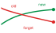
Обучение новой задаче может подтачивать точность на предыдущей.
Воспроизведение опыта решает проблему забывания, удерживая примеры из более ранних эпизодов обучения и переиспользуя их при последующих обновлениях. Replay также встречается в обучении с подкреплением (Mnih и др. 2015 г.); здесь его роль — удерживать более ранние локальные наблюдения представленными по мере поступления новых данных. Это один механизм стабилизации с явной стоимостью хранения. Глава 11.8.2 возвращается к этой проблеме с штрафами на важность параметров, ограниченным следом обновления и откатом.
В отличие от серверных стратегий воспроизведения, опирающихся на большие наборы данных и обширные вычисления, replay на устройстве должен работать с крайне ограниченной ёмкостью, часто с десятками или сотнями сэмплов, и не мешать пользовательскому опыту (Rolnick и др. 2019 г.). Буферы могут хранить только сжатые признаки или дистиллированные сводки, а обновления должны происходить уместно (например, во время циклов простоя или зарядки). Эти системные ограничения меняют способ реализации и оценки replay в контексте встраиваемого машинного обучения.
Пусть
Практическая реализация на устройстве может использовать кольцевой буфер для хранения небольшого набора сжатых векторов признаков, а не полных входных примеров. Буфер имеет фиксированную ёмкость и, заполнившись, перезаписывает старейшую запись, так что один параметр ограничивает его память и задаёт баланс между удержанной историей и новыми данными (Список 4).
import random
# Ring buffer for experience replay on memory-constrained devices
# Stores compressed features (not raw inputs) to minimize footprint
class ReplayBuffer:
def __init__(self, capacity):
self.capacity = capacity # Fixed size, e.g., 1000 examples
self.buffer = []
self.index = 0 # Circular write pointer
def store(self, feature_vec, label):
if len(self.buffer) < self.capacity:
self.buffer.append((feature_vec, label)) # Fill phase
else:
self.buffer[self.index] = (
feature_vec,
label,
) # Overwrite oldest
self.index = (self.index + 1) % self.capacity # Wrap around
def sample(self, k):
# Uniform sampling within the retained buffer; older examples are absent
return random.sample(self.buffer, min(k, len(self.buffer)))Эта реализация поддерживает циклический буфер фиксированной ёмкости, хранящий сжатые представления (например, эмбеддинги последнего слоя) и связанные с ними метки. Равномерная выборка здесь покрывает только удержанное недавнее окно; она не устраняет смещение по истории, вносимое перезаписью старых примеров. Резервуарная выборка (reservoir sampling), которая сохраняет каждый новый элемент с вероятностью, убывающей по мере роста потока так, чтобы любое из уже увиденных наблюдений с равной вероятностью оставалось в буфере, — альтернатива, когда цель состоит в представительстве всего потока, хотя любой конечный буфер всё равно требует проверок покрытия.
В приложениях TinyML replay-буфер (experience replay) применялся к таким задачам, как распознавание жестов, где устройства должны непрерывно улучшать предсказания, наблюдая небольшое число событий в день. Вместо обучения непосредственно на потоковых данных устройство сохраняет репрезентативные векторы признаков недавних жестов и периодически использует их для дообучения границ классификации. Аналогично, в распознавании ключевых слов на устройстве реплей прошлых высказываний может повысить точность детектирования слова-активатора без необходимости передавать аудиоданные за пределы устройства.
Experience replay расходует память и дополнительную работу по обновлению ради сохранения прежнего поведения. Сырые входные данные могут превышать бюджеты хранения или удержания, особенно в приложениях компьютерного зрения и аудио. Кэшированные векторы признаков сокращают этот занимаемый объём, но обновление, стартующее с таких векторов, обучает нижестоящую модель без реконструкции исходных вычислений энкодера. Если энкодер меняется, старые признаки могут больше не соответствовать его текущему представлению; система должна либо удерживать совместимый энкодер, либо обновлять признаки из сохранённых входов, либо удалять несовместимые записи. Постоянный реплей также расходует циклы записи флеш-памяти. Поэтому содержимое буфера, версии представлений и частота реплея должны входить в единую политику ресурсов и удержания.
11.5.3 Сжатие данных
Experience replay ограничен тем, сколько примеров помещается в буфер: хранение сырых кадров камеры размером
Один распространённый подход — кодировать точки данных с помощью предобученного извлекателя признаков и отбрасывать исходный многомерный вход. Например, изображение
Математически обучение может вестись на сжатых примерах
Когда узким местом является память реплея, а не вычисления модели, устройство может пойти дальше и выучить словарь повторяющихся паттернов сигналов датчиков, сохраняя каждый пример как несколько ненулевых коэффициентов поверх этого словаря вместо сырых выборок. Набор данных сигналов
Сжатые представления могут сократить срок хранения сырых входов, но эмбеддинг не становится анонимизированным лишь потому, что имеет меньшую размерность. Он может сохранять идентичность, атрибуты или достаточно структуры для инверсии, и к нему должны применяться тот же анализ контроля доступа, удержания и удаления, что и к исходным данным, если отдельный механизм приватности не даёт более сильной гарантии. Сжатие может также действовать как неявный регуляризатор, сглаживая обучение и смягчая переобучение, когда доступно лишь несколько обучающих примеров.
В распознавании ключевых слов сырой звук сначала может быть преобразован в мел-частотные кепстральные коэффициенты (MFCC)12 — компактное, с потерями представление, получаемое из спектра мощности речи. Хранение этих векторов вместо волновых форм уменьшает полезную нагрузку реплея. Полный бюджет адаптации по-прежнему должен включать извлечение признаков, состояние модели и рабочую память, необходимую для обновлений.
11.5.4 Сравнение стратегий эффективности данных
Few-shot-адаптация, реплей и сжатие расходуют каждый свой дефицитный ресурс и по-своему отказывают. Few-shot-адаптация расходует дефицитные метки на небольшой информативный набор поддержки (support set), и слабые предобученные признаки могут свести её на нет. Реплей расходует память и вычисления ради сохранения прежнего поведения; сырые наблюдения могут переполнить память устройства, когда память — узкое место, а буфер может пропускать редкие случаи. Сжатые представления расширяют историю, помещающуюся на устройстве, но сжатие может отбросить относящуюся к задаче информацию, а фиксированные эмбеддинги «замораживают» неверное представление, когда сам извлекатель признаков нуждается в адаптации. Комбинирование механизмов не спасает от этих компромиссов обучения на устройстве (Таблица 5), поскольку каждая комбинация должна укладываться в один и тот же бюджет памяти, энергии и приватности.
| Техника | Требования к данным | Затраты памяти/вычислений | Подходит для |
|---|---|---|---|
| Few-Shot-адаптация | Небольшой размеченный набор ( |
Низкие | Персонализация, быстрое дообучение на устройстве |
| Experience Replay | Потоковые данные | Умеренные (буфер и обновление) | Нестационарные данные, стабильность при дрейфе |
| Сжатые представления | Неразмеченные или закодированные данные | От низких до умеренных | Устройства с ограниченной памятью; чувствительные к приватности контексты |
На практике эти методы не исключают друг друга. Многие реальные системы комбинируют их ради надёжной и эффективной адаптации. Например, система распознавания ключевых слов может использовать сжатые аудиопризнаки (например, MFCC), дообучать несколько параметров по небольшому набору поддержки и вести replay-буфер прошлых эмбеддингов для непрерывного уточнения.
Эффективная адаптация и стратегии данных устанавливают, как одно устройство может учиться на данных своего пользователя. Чтобы разделить эти достижения, требуется другое решение: содержат ли локальные обновления информацию, полезную для общей модели, и могут ли они быть объединены в рамках ограничений на связь и приватность. Федеративное обучение предоставляет этот протокол координации. Личное состояние может оставаться локальным, когда разделение не улучшает целевую функцию популяции, а элементы контроля приватности должны отдельно ограничивать то, что раскрывают передаваемые обновления.
11.6 Алгоритмы федеративного обучения
Голосовой ассистент из начала главы — развёрнутый в миллионах домов, где устройства с прерывистой доступностью отправляют обновления, когда позволяют локальные условия, — показывает, чего не может одна лишь локальная адаптация. В одном доме «data» произносят как «DAY-tuh», в другом — как «DA-tuh»; в третьем, техническом, говорят «machine learning» каждый день, а в четвёртом — никогда. Локальная адаптация может специализировать каждую модель под свой дом, но ничто из выученного не переносится. Если четвёртый дом начнёт использовать фразу, его модели придётся учить её с нуля, хотя миллионы других устройств уже с ней справляются. Федерация предлагает такой перенос, когда наблюдения поддерживают общую целевую функцию. Система должна решить, какие изменения улучшают общие представления, а какие должны остаться личными, а затем оценить, помогает ли агрегация целевым пользователям.
Федеративное обучение (определение 11.2) обеспечивает такой перенос, при этом каждое устройство хранит свои сырые примеры локально. Подход превращает локальность данных в один из механизмов приватности, а не в полную гарантию приватности. Система всё равно должна рассматривать градиенты, дельты моделей, моменты участия, идентификаторы устройств и агрегированные статистики как чувствительные выходы, поскольку эти сигналы могут раскрывать информацию о локальных пользователях (Kairouz и McMahan 2021 г.; Zhu и др. 2019 г.). Из трёх архитектур в Рисунок 2 только федеративное обучение объединяет опыт пользователей без перемещения сырых примеров, и платой за эту позицию является протокол.
11.6.1 Кросс-устройственные и кросс-силосные федерации
Прежде чем выбирать протокол федеративной оптимизации или протокол приватности, архитектор должен определить, кто участники, потому что протокол выборки мобильной когорты, применённый к десяти сотрудничающим больницам, ломает планирование, взвешивание и восстановление после отказов, а протокол консорциума, ожидающий стабильного состава раундов, не работает на миллионах периодически подключающихся телефонов. Голосовой ассистент — кросс-устройственный случай (cross-device) с миллионами ненадёжных телефонов, тогда как группа больниц, желающих обучить модель предсказания осложнений без централизации записей пациентов, — кросс-силосный (cross-silo), с несколькими надёжными учреждениями, каждое из которых владеет большим набором данных. Это различие меняет модель отказов, политику планирования и единицу приватности ещё до выбора оптимизатора (Таблица 6) (Kairouz и McMahan 2021 г.).
| Измерение проектирования | Кросс-устройственная федерация | Кросс-силосная федерация |
|---|---|---|
| Участники | Большая популяция периодически доступных личных устройств | Небольшой набор известных организаций или площадок |
| Семантика раунда | Выборка подходящей когорты; ожидание «отставших» и выбывших | Координация стабильного состава; расследование отсутствующих площадок |
| Граница доверия | Клиентское ПО и локальные данные считать потенциально скомпрометированными | Аутентифицировать учреждения, но по-прежнему изолировать каждого хранителя данных |
| Взвешивание по умолчанию | Решить, представляет ли целевая функция примеры или пользователей | Взвешивание следует согласованной институциональной цели, а не размеру площадки по умолчанию |
| Единица приватности | Обычно пользователь или устройство на протяжении истории участия | Обычно человек или запись в данных площадки, иногда сама площадка |
11.6.2 Протоколы обучения
Когда популяция участников определена, федеративный раунд должен координировать устройства, которые держат разные распределения данных, соединяются по ограниченным каналам и непредсказуемо отключаются. Если бы устройства обучались на несовпадающих стартовых версиях и выгружали сырые тензоры весов по мере подключения, координатор складывал бы несовместимые пространства параметров и застревал на офлайн-отставших. Поэтому практические протоколы распределённой координации должны одновременно решать три инженерные задачи. Локальное обучение должно производить совместимые обновления, несмотря на не-IID распределения данных. Агрегация должна эффективно объединять эти обновления, несмотря на ограничения пропускной способности. Синхронизация по времени должна быть скоординирована между устройствами с неоднородными паттернами доступности.
Локальное обучение
Локальное обучение превращает политику адаптации устройства в вклад в общую модель. Каждый вклад требует известной стартовой версии, совместимой схемы параметров и объявленного локального правила обновления. Иначе массивы одинаковой формы могут описывать изменения разных моделей. Поэтому синхронный протокол стартует каждого участвующего клиента с одной и той же общей версией, обучается на локальных примерах по этому правилу и возвращает разность со стартовыми параметрами, тогда как личные параметры остаются вне агрегата.
Процесс повторяется с новой общей версией для каждого принятого раунда. Частота обновлений зависит от доступности устройства, локальной работы и стоимости связи. Защищённый канал передачи охраняет пересылку, но принимающий сервер всё равно может инспектировать обновление, если протокол агрегации отдельно не скрывает индивидуальные вклады. Совместимость моделей и конфиденциальность обновлений — следовательно, отдельные обязательства протокола.
Протоколы федеративной агрегации
Самое широко используемое правило объединения клиентских обновлений — федеративное усреднение (FedAvg), ставшее каноническим алгоритмом федеративного обучения (McMahan и др. 2017 г.). В FedAvg каждое устройство обучает свою локальную копию модели методом SGD на своих приватных данных. Алгоритм — это локальный SGD, который синхронизируется лишь после нескольких локальных шагов ради экономии связи, но запущенный с двумя изменениями, с которыми версия для дата-центра никогда не сталкивается. В каждом раунде участвует лишь выборочное подмножество клиентов, и данные каждого клиента — не-IID шард популяции. Локальные шаги, экономящие связь, тем самым также затягивают каждого клиента к его собственному оптимуму.
↩︎ Локальный SGD и открываемый им компромисс между частотой синхронизации и сходимостью установлены в Эффективность масштабирования и сходимость.
Формально пусть
Эта формула оптимизирует взвешенную по примерам целевую функцию, в которой клиент с десятикратно большим числом локальных примеров получает десятикратное влияние. Такой выбор уместен, когда каждый пример должен вносить равный вклад, но он может позволить «плодовитым» пользователям или крупным учреждениям доминировать в модели. Взвешенная по пользователям целевая функция вместо этого назначает каждому участвующему клиенту вес
Развёрнутый раунд оборачивает правило усреднения в политику, которую уравнение не фиксирует (Рисунок 10). Уравнение 3 фиксирует, как завершённые модели объединяются, но не то, какие клиенты приглашаются, как долго координатор ждёт и при каком минимальном числе завершений раунд приходится прерывать. Именно эти протокольные решения определяют, какие вклады входят в сумму. Клиент, не уложившийся в срок, не вносит ничего, и его примеры отсутствуют в
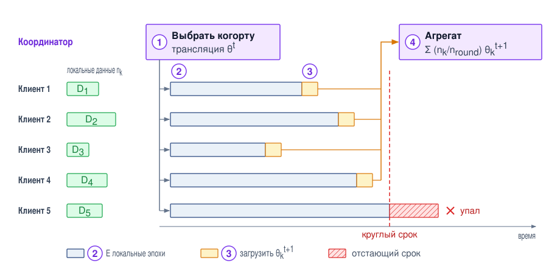
Эта базовая структура порождает целый ряд проектных решений и компромиссов. Число локальных эпох
⇄ Contrast: Federated rounds over intermittent wide-area clients contrast with the synchronous AllReduce collectives on low-latency cluster fabrics established in Алгоритмы AllReduce и топологии.
Время до целевого качества при дрейфе клиентов
Федеративное развёртывание должно достичь целевого качества в рамках своих бюджетов времени, энергии и участия. Больше локального обучения снижает частоту коммуникаций клиентов, но также меняет их обновления и время, за которое каждая выбранная когорта завершает работу. Инженерное сравнение ведётся поэтому по времени до согласованного целевого качества, а не по числу раундов коммуникации.
Что на самом деле измеряют счётчики FedAvg
FedAvg открывает в качестве регулируемых параметров число участвующих клиентов
Влияние не-IID данных
Не-IID данные — это то место, где федеративное усреднение расходится с серверной версией локального SGD. Каждый локальный шаг двигает клиента к оптимуму его собственного сегмента. После многих локальных шагов модели клиентов оказываются возле разных оптимумов, и их взвешенное среднее попадает в точку, которая не обязана минимизировать целевую функцию по всей совокупности. Этот дрейф клиентов растёт с числом локальных шагов и с тем, насколько различаются распределения клиентов, и он ухудшает федеративное усреднение по сравнению с i.i.d.-базовыми линиями (Li и др. 2020 г.; Zhao и др. 2018 г.). Тем самым он съедает выгоду от реже коммуникации именно там, где коммуникация дороже всего. Сила этого эффекта зависит от разбиения данных, правила обновления, политики участия и локального размера шага. Универсальной меры разнородности, предсказывающей число раундов для любых приложений, не существует, поэтому в Глава 11.6.2.3.3 этот компромисс измеряется, а не вычисляется аналитически.
Когда статистическая разнородность заставляет FedAvg расходиться или останавливаться, две фундаментальные алгоритмические модификации устраняют первопричину — дрейф клиентов:
- FedProx (Li и др. 2020 г.) добавляет проксимальный штраф, пропорциональный
, к локальной функции потерь каждого клиента. Этот штраф удерживает локальные обновления в окрестности текущей глобальной модели , стабилизируя сходимость при статистической разнородности и позволяя устройствам выполнять переменное число локальных эпох без дестабилизации серверной агрегации. - SCAFFOLD (Kairouz и McMahan 2021 г.) корректирует направление локального обновления напрямую с помощью контрольных переменных. Поддерживая серверную контрольную переменную и по-клиентские контрольные переменные, оценивающие разность между локальными и глобальными направлениями градиента, SCAFFOLD применяет аддитивную поправку к каждому локальному шагу SGD. Каждый шаг вычитает собственную контрольную переменную клиента и прибавляет серверную, так что клиент движется вдоль оценённого глобального направления, а не направления, благоприятствуемого его локальными данными. Эта поправка противодействует дрейфу клиентов при разнородных локальных данных, хотя примерно удваивает объём коммуникации за раунд, передавая контрольные переменные вместе с параметрами модели. Контрольная переменная клиента полезна, только если клиент возвращается, поэтому метод лучше подходит кросс-силовым федерациям, чем кросс-устройственным раундам, где одно устройство редко выбирается дважды.
Измерение компромисса локальной работы
Сравнивайте варианты числа локальных эпох при одинаковой инициализации, разбиении данных, политике участия и целевом качестве на отложенной выборке. Для каждого значения
Каждое
Полезный журнал эксперимента фиксирует локальные эпохи, число завершивших клиентов, раунды до цели, затраченное время, переданные байты и энергию устройств. Если запуск так и не достиг целевого качества в рамках бюджета, сообщайте об этом исходе, а не экстраполируйте выдуманную кривую сходимости. Повторные запуски и валидация на уровне когорт отличают устойчивое улучшение от удачной выборки участвующих устройств.
Компромисс «коммуникация–вычисления»
Рисунок 11 изображает два противонаправленных пути влияния локальной работы
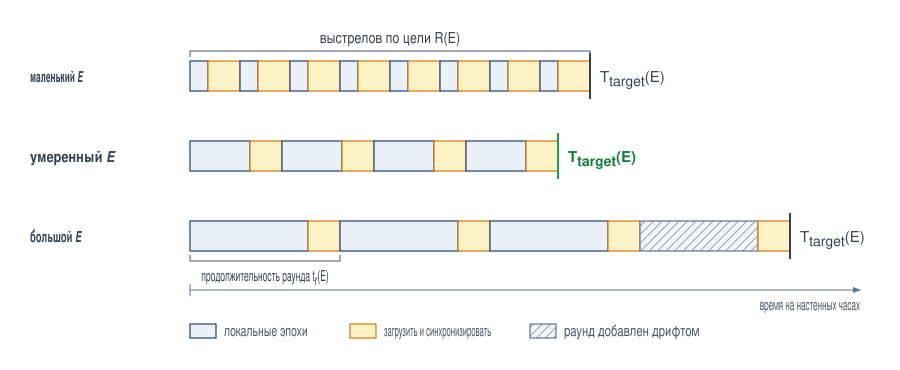
Рабочая точка зависит от развёртывания. Более крупные локальные обновления могут амортизировать накладные расходы на передачу, но они также меняют дрейф, время завершения и то, какие клиенты успевают закончить. Одна лишь сеть может сместить оптимум, что показывает модель затрат в относительных единицах (Рисунок 12). Её минимум
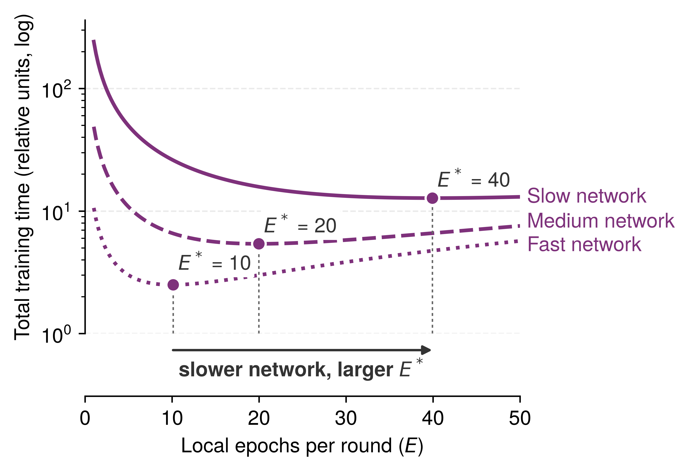
Диагностика пропущенной цели
Результаты о федеративной сходимости зависят от правила обновления, целевой функции, политики выборки и предположений о данных клиентов (Kairouz и McMahan 2021 г.). Поэтому разнородность, участие и число локальных примеров — это входы оценки осуществимости, а не универсальные пороги «сдал/не сдал». Развёртывание должно продемонстрировать, что выбранная конфигурация достигает заявленного целевого качества в рамках временного бюджета и бюджета устройств, с оценкой, репрезентирующей целевую совокупность.
Когда конфигурация пропускает цель, измеренный отказ направляет следующий эксперимент. Конфликтующие локальные обновления мотивируют протестировать меньше локальной работы, добавить проксимальную регуляризацию (FedProx), включить контрольные переменные (SCAFFOLD) или перейти к персонализации. Долгое ожидание мотивирует планирование или асинхронные альтернативы — в пределах совместимости с протоколом приватности. Скудные локальные свидетельства мотивируют ограниченную адаптацию и более сильную валидацию. Ни одно из этих изменений не заменяет наблюдения по отсутствующим когортам; каждое должно заново оцениваться по качеству, стоимости ресурсов и покрытию совокупности.
Правило агрегации определяет, как совместимые локальные модели порождают общую модель. Измеренное время до цели устанавливает, достигает ли конфигурация своей цели в рамках бюджета. Контролируемая лаборатория может удерживать доступность участников и сетевые условия постоянными. Парк телефонов — не может, поэтому реализация должна определять, как выбор, дедлайны и отказы меняют множество обновлений, действительно попадающих в каждую агрегацию. Эти протокольные решения связывают поведение обучения с оркестрацией парка.
11.7 Федеративное обучение в масштабе
Раунд выбирает когорту из развёрнутого парка устройств, но часть выбранных устройств перегревается, теряет Wi-Fi, переходит в режим энергосбережения или выключается до отправки обновления. Чтобы эти сбои стали значимыми, парку из миллионов смартфонов не обязательно участвовать в одном раунде. Превращение протокола FedAvg в производственную систему для парка устройств требует решить, какие клиенты допускаются и сколько ждать, сжимать обновления, чтобы они помещались в ограниченные каналы передачи, отделять персональное состояние от общих весов, соблюдать криптографические и статистические границы приватности и согласовывать асинхронные обновления на разнородном аппаратном обеспечении.
11.7.1 Планирование клиентов
Первое решение в любом раунде — какие устройства пригласить. Случайная равномерная выборка устройств без проверки их состояния питания и сети прерывала бы пользователей посреди задачи, тогда как приём обновлений только от подключённых к розетке флагманских телефонов с быстрым Wi-Fi обучает глобальную модель, смещённую в сторону обеспеченных когорт, заряжающихся за ночь. Поскольку доступность клиентов в реальных условиях непрерывно меняется вместе с уровнем заряда, привычками зарядки и сетевым покрытием, планирование клиентов определяет и скорость завершения, и покрытие популяции распределённого обучения.
На базовом уровне системы федеративного ML задают критерии допуска к участию. Мобильное развёртывание может требовать, чтобы устройства были подключены к сети питания, Wi-Fi и простаивали, ограничивая помехи работе на переднем плане и расход батареи. Выбранные критерии определяют, какое подмножество всей популяции считается «доступным» для обучающего раунда; это политика развёртывания, а не требования самого федеративного обучения.
Помимо этих операционных фильтров, устройства различаются аппаратными возможностями, доступностью данных и сетевыми условиями. На одних смартфонах много свежих примеров, относящихся к текущей задаче, на других данные устарели или нерелевантны. Пропускная способность сети и скорость передачи могут сильно варьироваться в зависимости от географии и инфраструктуры оператора. В результате равномерный случайный выбор из пула допущенных не гарантирует покрытия всего развёрнутого парка: критерии допуска уже исключили часть устройств и их данных.
Выбор на основе доступности вносит смещение участия — парковый уровень последствий теста допуска из Уравнение 2 (принцип «Допущенная популяция»). Клиенты с благоприятными условиями — частой зарядкой, высокопроизводительным железом и стабильной связью — проходят допуск и участвуют многократно, тогда как прочие систематически недопредставлены. Это может смещать итоговую модель в сторону поведения и предпочтений привилегированного подмножества популяции, порождая проблемы как справедливости, так и обобщения.
Смещение участия становится серьёзным, когда небольшая когорта допущенных поставляет большинство завершённых обновлений, а другие когорты участвуют редко. Смещение измеряется по когортам как коэффициент покрытия — доля когорты в завершённых обновлениях, делённая на её долю в развёрнутом парке. Коэффициент, близкий к единице, означает, что когорта представлена пропорционально своему размеру; коэффициент заметно ниже единицы — что общая модель усваивает поведение когорты с весом меньше её доли в популяции. Журналы завершения дают числитель, а инвентаризация развёртывания — знаменатель, поэтому коэффициент вычисляется без просмотра какого-либо обновления. И тест допуска, и дедлайн раунда быстрее убирают ограниченные устройства, чем производительные. Равномерный выбор среди допущенных устройств пропускает возникшее смещение без изменений, так что когорта бюджетных устройств может упасть с пятой части парка до тонкой доли завершённых обновлений (Рисунок 13).
Низкое покрытие также подпитывает само себя: модели всё сильнее оптимизируются под пользователей с производительными устройствами и стабильной связью, потенциально ухудшая качество для ограниченных в ресурсах пользователей, которым адаптация нужна больше всех. Модель предсказания клавиатуры может смещаться к паттернам набора пользователей флагманских телефонов, заряжающихся за ночь, упуская важные языковые вариации от пользователей бюджетных устройств или с нерегулярной зарядкой.
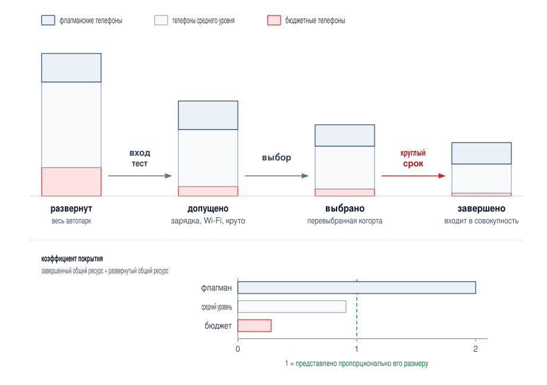
Порядок этих решений ограничивает возможности любого средства исправления. Оркестрация парка допускает только выполнимые распределения до того, как политика справедливости их разделит (принцип «Реализуемость прежде справедливости»), и федеративный планировщик наследует тот же порядок с более острым последствием. Его фильтр допуска фиксирует пул кандидатов, поэтому политика справедливости может перераспределять раунды только между устройствами, которые тест допуска уже принял; устройство, ни разу не прошедшее допуск, для неё невидимо.
Следовательно, планирование должно балансировать скорость завершения с покрытием популяции. Стратифицированная или квотная выборка может приоритизировать недопредставленные группы среди допущенных устройств, а накопительные записи участия — направлять последующие приглашения. Методам взвешивания нужны оценки популяции и процесса отбора; они не могут восстановить наблюдения когорты, которая никогда не участвует. Буферизованная асинхронная агрегация (Nguyen и др. 2021 г.), механизм которой описывает Глава 11.7.5.1, методы с учётом устаревания (Rodio и Neglia 2024 г.) и взвешивание, ориентированное на справедливость (Ma и др. 2024 г.), предлагают дополнительные средства. Их эффективность нужно проверять по фактически завершённому участию и качеству когорт, а не выводить из самого правила планирования. Пример взвешивания в агрегате (Уравнение 3) также даёт большим локальным наборам данных больше влияния независимо от того, представляют ли они целевую популяцию лучше.
Планирование также должно ограничивать, как долго раунд ждёт своих самых медленных участников. Задержка сети, разряд батареи или конкуренция фоновых процессов могут заставить некоторые устройства (отстающие) работать в 10
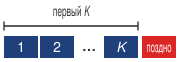
Достаточно допустимых отчётов, чтобы раунд закрылся раньше, чем завершатся его самые медленные клиенты.
Чтобы сократить ожидание отстающих, производственные системы федеративного обучения (FL) применяют перевыборку. Сервер выбирает пул кандидатов размером
11.7.2 Сжатие обновлений с учётом пропускной способности
Многие отстающие, пропустившие дедлайн раунда, срываются на сетевой передаче, а не на локальных вычислениях: передача полноточных весов или градиентов по асимметричному мобильному каналу может исчерпать окно связи или запас батареи клиента до того, как его обновление достигнет координатора.13 Поэтому сжатие обновлений начинается с диагностики узкого места: когда ограничивает передача, решение по дизайну — какую информацию квантизировать, прореживать или оставлять локальной. Затем меньший полезный груз нужно оценить по стоимости кодирования, ошибке обновления и числу раундов, необходимых для достижения целевого качества.
Решение о сжатии распадается на три рычага, каждый из которых меняет разную часть коммуникационного узкого места: сжатие модели уменьшает бит на обновление, выборочное разделение — какие параметры передаются, а архитектурное разбиение сохраняет часть состояния локально. Методы сжатия модели уменьшают передаваемый след обновлений с помощью квантизации, прореживания или подвыборки. Вместо отправки полноточных градиентов клиент передаёт 8-битные квантизованные обновления или сообщает только элементы градиента с наибольшей величиной — top-
↩︎ Квантизация градиента, top-
Выборочная передача обновлений дополнительно сокращает связь, передавая только подмножества параметров модели или обновлений. В послойном выборочном разделении клиенты обновляют только определённые слои — обычно финальный классификатор или модули адаптера — оставляя большую часть основы замороженной. Это уменьшает полезный груз обновления и ограничивает, какие общие представления могут измениться, но обучаемое подмножество всё ещё может переобучиться на нерепрезентативных данных клиента.
Архитектурное разбиение требует указать, что пересекает границу. Разделение параметров на персональные и общие сохраняет локальные модули приватными, агрегируя выбранные общие параметры. Разделённое обучение (split learning) вместо этого делит исполнение между клиентом и сервером, обмениваясь промежуточными активациями и обратными градиентами в точке разреза. Эти дизайны имеют разные схемы трафика и экспозиции; ни один не гарантирует уменьшения связи или приватности одним лишь делением модели.
Эти подходы могут использовать протокол агрегации FedAvg (Глава 11.6.2.2) только если их кодировка и схема общих параметров поддерживают взвешенную агрегацию. При безопасной агрегации, которая суммирует замаскированные обновления, не просматривая их, взвешенная агрегация также требует, чтобы каждый клиент использовал одну шкалу квантизации и один координатный шаблон для разреженных значений (Глава 11.7.4). Параметры только для локального использования должны оставаться вовсе вне общего агрегата.
Какой бы ни была кодировка, полный объём связи для раунда
Уравнение 4 делает явными трафик скачивания, передачи, протокола и повторов. Скачивание распространяет состояние модели, передача несёт клиентские обновления, протокольный трафик покрывает аутентификацию и криптографическую настройку, а повторы отвечают за неудавшиеся или повторные передачи. Поэтому оптимизация только
↪ Условие безубыточности, при котором время кодирования и декодирования стоит меньше времени передачи, сэкономленного сжатием, выводится с разобранным примером в Экономика сжатия.
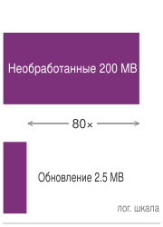
Одно сжатое обновление в 80× раз меньше недельной передачи необработанных изображений.
Инженерный расчёт 11.3: Обновления модели и необработанные данные
Задача: команда проектирует федеративную систему персонализации камер, которая обучается на 200 MB сжатых пользовательских изображений в неделю. Сравните одну передачу этих изображений с одним сжатым раундом передачи обновления модели.
Математика: Эффективность пропускной способности — это отношение объёма необработанных данных к размеру обновления модели.
- Передача необработанных данных: 200 MB/неделя.
- Один раунд федеративной передачи: сжатое обновление модели (5M параметров) — 2.5 MB.
- Сокращение за один раунд: 200 MB/2.5 MB = 80×.
Системная инсайт: для этого сценария одна передача 2.5 MB в 80× раз меньше одной передачи необработанных данных 200 MB. Это отношение — не сквозная экономия связи за прогон обучения: примерно после 80× раундов передачи одни лишь кумулятивные обновления сравняются с объёмом необработанных данных — ещё до учёта скачиваний глобальной модели, повторов и накладных расходов протокола. Поэтому вердикт зависит от расписания раундов. Развёртывание с одним раундом в день передаёт семь обновлений в неделю данных — значительно ниже счётчика безубыточности — и экономит большую часть трафика. Развёртывание с раундом каждый час передаёт 168 обновлений в неделю — больше счётчика безубыточности — и перемещает больше байтов, чем передача самих изображений. Трафик на раунд нужно умножить на ожидаемое число раундов, прежде чем федерация сможет заявить об экономии пропускной способности.
Расписание локальной работы и кодировка обновлений совместно определяют стоимость связи. Рисунок 14 сравнивает несжатые 32-битные значения (панель A) с равномерной 8-битной квантизацией (панель B), которая даёт сокращение байтов значений в
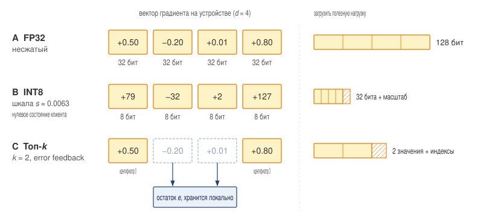
Панель квантизации (Panel B) помечена как «нулевое состояние клиента», потому что она не хранит постоянного остатка обратной связи по ошибке; буферы кодирования, масштабы и временная рабочая область всё же входят в бюджет устройства. Сжатие полезно, когда его сокращение общего объёма коммуникации перевешивает работу по кодированию и любые дополнительные раунды, необходимые для достижения целевого качества. Меньший объём загрузки помогает раунду лишь в том случае, если именно передача была причиной того, что клиенты не укладывались в срок или исключались из когорты, и журналы завершения раунда показывают, что именно. Меньшие полезные нагрузки могут позволить клиентам на медленных или перегруженных исходящих каналах завершить работу до закрытия их ресурсного окна, поэтому сжатие оценивается по завершённому участию и результатам когорт, а не только по сэкономленным байтам. Даже когда передача становится возможной, общая модель всё ещё может не отражать локальные вариации.
11.7.3 Федеративная персонализация
Сжатие обновлений позволяет большему числу устройств завершить раунд, но клиенты, выполняющие совместимые обновления, всё равно могут тянуть общую модель в противоположные стороны, когда диалектная фраза, региональное клавиатурное сокращение или индивидуальное расположение носимого датчика на запястье конфликтует со средним по популяции. Единственная глобальная модель может адекватно обслуживать среднего пользователя, скрывая при этом устойчивые потери точности для конкретных когорт. Персонализированное федеративное обучение сохраняет обучение общему представлению, позволяя выбранным параметрам или моделям специализироваться локально, обменивая добавленное локальное состояние, стоимость обучения и риск переобучения на разреженных пользовательских данных на качество для каждого пользователя.
Пусть
Персонализация изменяет эту целевую функцию, позволяя каждому клиенту поддерживать собственные адаптированные параметры
Здесь
В носимом мониторе здоровья, классифицирующем физическую активность по физиологическим сигналам, эта целевая функция отделяет общие признаки движения от индивидуальных особенностей походки, базовых уровней в покое и расположения датчиков. Дообучение (fine-tuning) финального слоя классификации или низкоранговых адаптеров вокруг глобального референса
Несколько стратегий персонализации решают компромиссы между вычислительными накладными расходами, раскрытием информации и скоростью адаптации. Один широко используемый подход — локальное дообучение, при котором каждый клиент загружает последнюю глобальную модель и выполняет небольшое число градиентных шагов на своих локальных данных. Этот метод позволяет не передавать эти примеры при адаптации, но полученное локальное состояние и любое последующее обновление остаются чувствительными с точки зрения приватности. Он также может давать неоптимальные результаты, когда глобальная модель плохо согласована с распределением данных клиента или когда локальный датасет крайне мал.
Другая эффективная техника — слои персонализации, где модель разбивается на общий бэкбон и лёгкую, специфичную для клиента «голову», обычно финальный слой классификации (Arivazhagan и др. 2019 г.). Один из таких методов, FedPer, обучает у клиентов и общий базис, и личную «голову», но в агрегации на сервере участвует только общий базис; «голова» остаётся локальной. Отдельная политика адаптации только «головы» может заморозить загруженный бэкбон, чтобы снизить стоимость локального обучения, когда существенная вариация лежит главным образом в выходных категориях или границах решений.
Кластерное федеративное обучение предлагает альтернативу, группируя клиентов по сходству их данных или характеристик производительности и обучая отдельные модели для каждого кластера. Эта стратегия может повысить точность внутри однородных субпопуляций, хотя она вносит дополнительную системную сложность и может требовать обмена метаданными для определения принадлежности к группе.
Наконец, подходы мета-обучения, такие как модельно-независимое мета-обучение (MAML),15 направлены на получение такой инициализации глобальной модели, которая может быть быстро адаптирована к новым задачам с помощью нескольких локальных обновлений (Finn и др. 2017 г.). Мета-обученная инициализация особенно полезна, когда клиенты располагают ограниченными данными или работают в средах с частыми сдвигами распределений.
Каждая стратегия занимает свою точку в пространстве компромиссов персонализации. Локальное дообучение, слои персонализации, кластерное федеративное обучение и мета-обучение различаются вычислительными накладными расходами, раскрытием информации и задержкой адаптации (Таблица 7). Механизм определяет, какое состояние разделяется; гарантия приватности требует отдельно заданных средств контроля и допущений.
| Стратегия | Механизм персонализации | Вычислительные накладные расходы | Сохранение приватности | Скорость адаптации |
|---|---|---|---|---|
| Локальное дообучение | Градиентный спуск по локальной функции потерь после агрегации | Низкие до умеренных | Сырые примеры остаются локально; адаптированное состояние остаётся чувствительным | Быстро (несколько шагов) |
| Слои персонализации | Разделённая модель: общий базис + специфичная для пользователя «голова» | Умеренные | Сужает разделяемое состояние; не гарантирует приватность | Быстро (обучение малой «головы») |
| Кластерное FL | Группировка клиентов по сходству данных, обучение по группам | Умеренные до высоких | Принадлежность к группе и обновления могут раскрывать атрибуты | Средняя |
| Мета-обучение | Обучение для быстрой адаптации между задачами/устройствами | Высокие (мета-целевая функция) | Зависит от мета-обучения и протокола адаптации | Очень быстро (few-shot) |
Выбор стратегии персонализации на устройстве требует балансировать ёмкость адаптации и резидентность в памяти. Три парадигмы дообучения различаются структурным следом (Рисунок 15). Полное дообучение обновляет каждый слой бэкбона (колонка A), адаптация только «головы» замораживает экстрактор признаков (колонка B), а экономные по параметрам адаптеры располагаются рядом с замороженными блоками бэкбона (колонка C).
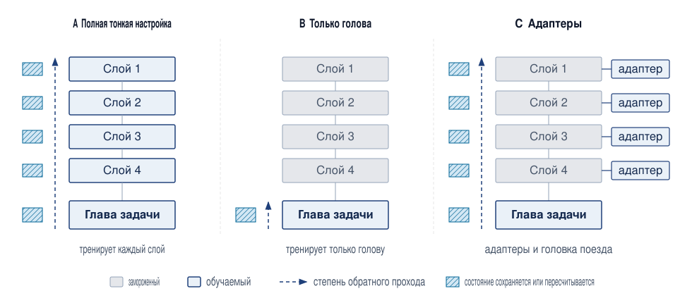
Пунктирные стрелки обратного прохода в Рисунок 15 — это член активации из Уравнение 1, изображённый как расстояние. Адаптеры на ранних слоях в колонке C тянут обратный путь через последующий бэкбон, чьё сохранённое состояние должно удерживаться или пересчитываться, тогда как адаптация только «головы» в колонке B завершает его на «голове», как в случае с wake-word из Глава 11.5.1. Расположение задаёт путь зависимости, а расписание исполнения — сколько этого состояния остаётся резидентным. Хранение персональной «головы» или адаптера на устройстве также сужает то, что пересекает границу устройства, но обновления общего бэкбона, всё ещё покидающие клиент, остаются производными от приватных локальных примеров и требуют явной защиты приватности.
11.7.4 Федеративная приватность
Даже когда персональные параметры и сырые обучающие примеры никогда не покидают телефон, злоумышленник или любопытный сервер, инспектирующий загруженный градиент или дельту весов
Две защитные меры решают эту проблему утечки. Протоколы безопасной агрегации17 раскрывают объединённый результат, скрывая индивидуальные обновления сверх того, что сам результат раскрывает, в рамках допущений протокола о сговоре и участвующих клиентах. Дифференциальная приватность — формальная граница того, насколько включение любого одного защищённого пользователя или записи может изменить опубликованный результат, — достигается отсечением каждого вклада и добавлением шума, откалиброванного по этой границе. Развёртывание должно указывать, какая единица получает эту защиту.
Эти механизмы решают разные задачи. Безопасная агрегация ограничивает то, что координатор узнаёт о каждом представленном обновлении, тогда как дифференциальная приватность ограничивает то, насколько объявленная единица приватности может повлиять на опубликованный результат. Поэтому развёртыванию нужен журнал учёта приватности, фиксирующий единицу защиты, правило отсечения, механизм шума, допущения о выборке, расход
↪ Правила композиции, превращающие по-релизные записи журнала учёта приватности в один кумулятивный бюджет приватности, раскрыты в Композиция бюджета приватности.
Рисунок 16 моделирует эту криптографическую границу через попарное маскирование с нулевой суммой. Клиенты A и B согласовывают общую случайную маску
В реальном раунде клиентов много, и некоторые отсоединяются после согласования масок, но до загрузки. Каждый отсоединившийся клиент оставляет свои попарные маски не уничтоженными в сумме. Поэтому полный протокол требует, чтобы каждый клиент разделял секретные семена своих масок на доли, хранимые другими клиентами, и любое пороговое число этих долей позволяет восстановить семя (Bonawitz и др. 2017 г.). После дедлайна загрузки выжившие клиенты отправляют доли семян отсоединившихся клиентов, и сервер восстанавливает и вычитает зависшие маски. Восстановление, следовательно, стоит дополнительного раунда сообщений и вычислений, растущих с числом отсоединений, и удаётся только если выжило не менее порогового числа клиентов; иначе раунд отменяется. Перебор участников увеличивает эту стоимость. Клиент, завершивший ключевое соглашение, но чей отчёт координатор отбрасывает по достижении целевого числа, является отсоединившимся для протокола, поэтому каждый отброшенный отчёт добавляет работу по восстановлению, а удерживаемые клиенты всё равно должны перекрыть порог.
Этот порог — одна из причин минимального уровня участия. Другая — сама сумма, потому что агрегат по немногим клиентам раскрывает слишком много о каждом из них. Поэтому координатор должен приглашать достаточно клиентов, чтобы ожидаемые выжившие перекрыли минимальный уровень, а когорта, не добравшая его, откладывается до следующего раунда, а не агрегируется.
Маскирование также ограничивает то, как клиенты кодируют свои обновления (Глава 11.7.2). При загрузках в открытом виде сервер может деквантизовать тензор каждого клиента с его масштабом и разложить разреженные пары «индекс—значение» в плотный буфер перед суммированием. При безопасной агрегации маски добавляются в модулярной целочисленной арифметике, поэтому каждая загрузка — это вектор целых чисел с фиксированной точкой, и сервер суммирует эти замаскированные векторы поэлементно, не инспектируя индивидуальные загрузки. Клиенты, квантизующие обновления, должны поэтому квантизовать к общему масштабу с фиксированной точкой, чтобы их замаскированные целые числа представляли одну и ту же единицу в каждой координате, а клиенты, разреживающие обновления, должны проецировать их на общий координатный шаблон или sketch, а не загружать специфичные для клиента списки индексов, которые не удалось бы выровнять и которые раскрыли бы, какие параметры изменились.
Безопасная агрегация также создаёт конфликт с устойчивостью. Правила, устойчивые к византийским отказам, такие как Krum, покоординатная фильтрация или проверка аномалий отдельных клиентов, требуют доступа к индивидуальным обновлениям, тогда как безопасная агрегация сознательно их скрывает (Blanchard и др. 2017 г.; Bonawitz и др. 2017 г.). Система не может одновременно заявлять произвольную проверку каждого клиента и обычную безопасную агрегацию для одних и тех же сообщений. Вместо этого она должна проверять клиентов до маскирования, использовать аттестованное исполнение и ограниченные локальные обновления, вычислять только проверки, совместимые с агрегацией, или принять протокол, разработанный для вычисления одобренных робастных статистик без раскрытия сырых клиентских вкладов.
↩︎ Византийские отказы, при которых работник остаётся живым, но возвращает неверные результаты, и правила агрегации, ограничивающие их влияние, такие как Krum и усечённое среднее, рассмотрены в Византийские отказы.
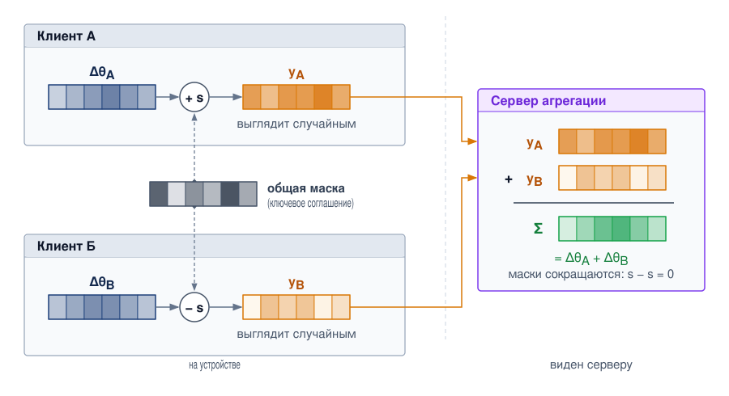
Безопасная агрегация и дифференциальная приватность могут защищать разные границы, но их совместное применение должно соответствовать модели угроз. Если доверенный сервер добавляет шум после получения точного агрегата, гарантия приватности относится к опубликованному зашумлённому результату; точный агрегат при этом не скрывается от сервера. Протокол, рассчитанный на распределённое добавление шума, вместо этого позволяет серверу получать только зашумлённый агрегат. Отсечение, калибровка шума, допущения об отсеве клиентов и учёт повторных публикаций должны соответствовать выбранному протоколу. Ни один из этих механизмов не устанавливает, что локальные данные или обновления заслуживают доверия.
Контрольная точка 11.3: Проектирование федеративной системы
Спроектируйте систему федеративного обучения для парка из 10 миллионов мобильных устройств. Данные сильно не-IID (у пользователей различающиеся кластеризованные паттерны набора текста), а сетевое окружение ограничено (1–10 Mb/s). Прежде чем выбирать оптимизации для этого сценария, классифицируйте локальные узкие места и укажите, какое системное ограничение доминирует в каждом решении.
Рассмотрите три проектных решения:
- Агрегация: выберите обычный FedAvg, сокращённое число локальных эпох или персонализацию/кластеризацию для не-IID популяции и обоснуйте, как выбор сдерживает дрейф клиентов.
- Приватность: решите, требуется ли развёртыванию формальный шум дифференциальной приватности или же безопасная агрегация и минимизация данных достаточны для заданной модели угроз. Используя отсечение и шум, описанные в этом разделе, объясните, как шум может влиять на качество и число раундов до достижения целевого качества, и какие измерения позволят оценить эту стоимость.
- Коммуникация: выберите между квантизацией градиентов (например, 8-битной) и структурированной разреженностью в условиях ограниченной полосы пропускания и обоснуйте компромисс «полоса пропускания/точность».
11.7.5 Оркестрация устройств в большом масштабе
Раунд, отбирающий миллион телефонов за ночь, неизбежно столкнётся с тем, что часть устройств перегреется, потеряет связь или будет отключена от питания до отправки результатов, а некоторые могут прислать повреждённые или намеренно вредоносные обновления. Координация такой популяции требует протоколов, справляющихся с византийскими клиентами, сетевыми разбиениями, временно отрезающими участников, и ограниченной связью. Эти проблемы отличаются от контролируемого обучения в дата-центре, где скоростные сети и управляемая инфраструктура сужают диапазон вопросов доверия и доступности.
Асинхронная синхронизация устройств
Федеративное обучение наследует отказы от распределённых систем и машинного обучения, но его цель координации — не консенсус, то есть задача достижения согласия реплицированных серверов по одному упорядоченному журналу операций. Федеративные клиенты не согласуют никакого такого журнала. Вместо этого координатор решает, какие стохастические обновления клиентов допущены, как взвешиваются устаревшие обновления и какое правило агрегации способно переносить неисправных участников, не позволяя им направлять модель. Устройства аварийно завершаются, теряют питание или отключаются во время раундов, а скомпрометированные клиенты могут присылать отравленные обновления, специально составленные, чтобы подтолкнуть общую модель к цели атакующего. Робастная агрегация может ослабить влияние части неисправных участников, но её допущения, вычислительная стоимость и совместимость с безопасной агрегацией должны быть явно оговорены.
Цепочка доверия начинается до агрегации. Промышленный координатор аутентифицирует устройство и экземпляр приложения, проверяет подписанную версию модели и политики обучения, проверяет допуск и свежесть, привязывает возвращённое обновление к этой версии и нонсу раунда и фиксирует, прошло ли обновление проверки на уровне протокола. Аппаратно поддерживаемая аттестация может усилить утверждения об идентичности кода на поддерживаемых устройствах, но она не может доказать, что локальные примеры доброкачественны или репрезентативны. Полученная запись о целостности обновления поддерживает отклонение, откат и анализ инцидентов, не превращая идентичность устройства в доказательство корректности градиента.
Сетевые разбиения — более трудный случай. В отличие от сети дата-центра, федеративный парк должен мириться с клиентами, которые остаются офлайн часами или днями — в пути, вне зоны покрытия или выключенными. Асинхронные протоколы координации позволяют обучению продолжаться при отсутствии участников, но они должны балансировать устаревание (приём неактуальных вкладов) и свежесть (приоритет недавних, но, возможно, редких обновлений). Механизм демонстрирует буферизованная асинхронная агрегация (Nguyen и др. 2021 г.). Она убирает барьер раунда, позволяя каждому клиенту обучаться, как только он проходит тест допуска, и выгружать результат по завершении, тогда как сервер накапливает поступающие обновления в буфере и применяет их агрегат, как только их набралось фиксированное число. Вклад каждого обновления взвешивается по его устареванию — числу версий сервера, опубликованных с момента загрузки клиентом стартовой модели, — так что медленный клиент всё равно вносит вклад, не оттягивая общую модель обратно к старому состоянию.
Обычная попарная безопасная агрегация (Глава 11.7.4) не подходит для такого буфера. Её маски сокращаются только среди клиентов, зафиксированных при согласовании ключей, тогда как буфер заполняется теми, кто завершил работу. Взвешивание по устареванию также ломает маски: взвешивание замаскированного обновления на сервере масштабирует и его маски, так что они больше не сокращаются, а клиент не может применить вес до маскирования, потому что его устаревание становится известным лишь в момент прибытия обновления. Поэтому буферизованному дизайну нужен протокол безопасной агрегации, построенный специально под него.
↩︎ Устаревание градиента — задержка между версией модели, с которой работал работник, и версией, которую изменяет его обновление, — и его влияние на сходимость при ограниченно и полностью асинхронной синхронизации рассмотрены в Влияние устаревания в моделях синхронизации.
Восстановление должно различать состояние координатора и локальное состояние устройства. Координатор делает контрольные точки глобальной модели, оптимизатора и состояния протокола, необходимых для возобновления принятого прогресса; одновременная контрольная точка на каждом устройстве для этого не требуется. Неполный раунд требует явного правила принятия или отбрасывания, за которым следует оценка популяции, представленной его завершёнными обновлениями. Сверка состояния определяет базовую версию возвращающегося устройства и решает, какой общий код он должен загрузить и какое персональное состояние остаётся совместимым. Балансировка нагрузки на стороне сервера может перераспределять работу по координации, но замена недоступного клиента более быстрым меняет и локальные данные, участвующие в обучении. Если гарантии сходимости синхронного обучения предполагают, что каждый участник завершает каждый раунд, федеративный координатор обязан считать отстающих18 и выбывающих нормальным случаем и указать, что его аргументация сходимости предполагает о них.
Управление неоднородностью в масштабе парка
Оркестрация парка из миллионов устройств — это решение о расслоении: система решает, какие клиенты могут обучаться, какие способны лишь отправлять лёгкие обновления и какое смещение вносит такой отбор. Трудность в том, что возможности оборудования, сетевые условия, распределения данных и паттерны доступности варьируются одновременно, бросая вызов традиционным допущениям распределённого машинного обучения об однородных участниках в схожих условиях.
Ориентировочные пиковые вычислительные рейтинги различаются примерно в 1,200× между флагманскими смартфонами с рейтингом 35 TOPS и — ниже клиентов телефонного класса архетипа C — IoT-микроконтроллерами с рейтингом 0.03 TOPS. Эти рейтинги не переводятся в отношение скоростей обучения, поскольку поддерживаемая точность, обратные операторы, трафик памяти и устойчивое исполнение определяют время обновления. Память охватывает тот же диапазон 65,536× от SRAM микроконтроллера до RAM флагманского телефона, встреченный в Глава 11.3.2, и в масштабе парка именно этот диапазон решает, какое состояние обновления каждый уровень вообще может удержать. Энергетические бюджеты дополнительно ограничивают, когда эта работа может выполняться. Фоновая адаптация в этом примере нацелена примерно на 500–1000 mW, тогда как телефоны могут поддерживать 2–3 W для приоритетных ML-нагрузок и кратковременно выдавать более высокие всплески. Пропускная способность сети, задержка и паттерны прерываний также должны быть измерены для участвующих клиентов до выбора частоты обновлений и сжатия.
Измеренные оценки показывают разброс того же порядка уже среди одних телефонов, не считая микроконтроллеров. AI Benchmark из ETH Zurich запускает фиксированный набор квантизованных и с плавающей точкой инференс-нагрузок на каждом телефонном процессоре через его путь Android-ускорения (Ignatov и др. 2019 г.; ETH Zurich Computer Vision Lab 2026 г.). Среди процессоров, выпущенных с 2020 года и позже, которые всё ещё могут входить в клиентский парк, оценки охватывают около 400× — от Snapdragon 460 (2020) до Dimensity 9600 Pro (2026), — и Рисунок 17 отображает каждый процессор рейтинга. Даже флагманы одного поколения различаются в 14×, причём Google Tensor G4 набирает настолько ниже Dimensity 9600 M, главным образом потому, что каждая оценка отражает не только кремний, но и программный путь процессора. Результат Tensor G4 проходит через общий интерфейс нейросетей Android, тогда как лидеры используют собственные среды исполнения вендоров. Это оценки инференса, а не скорости обучения, но они ограничивают задачу с той стороны, что важна для планирования. Никакая единая квота локальной работы не подходит устройствам, различающимся на два порядка по измеренной пропускной способности.
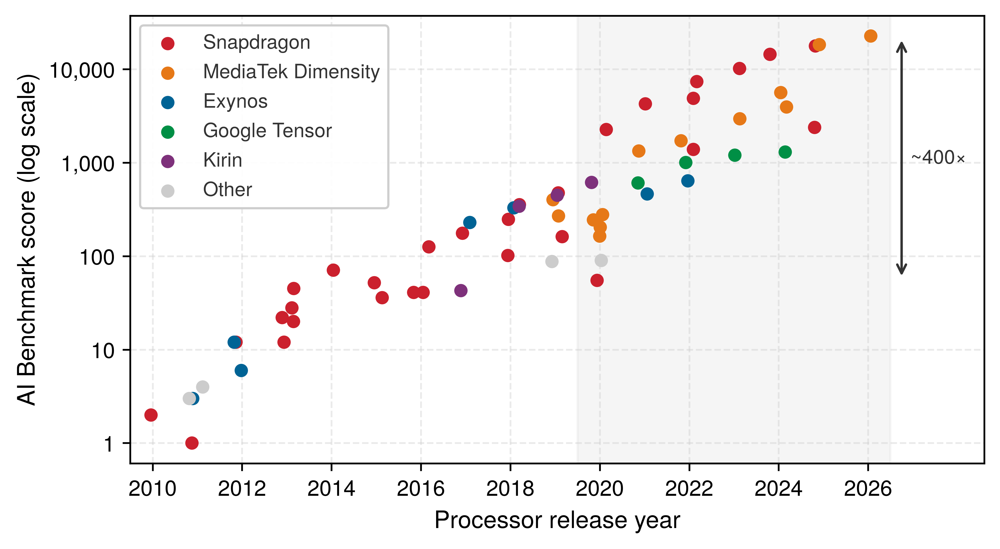
Уровневое участие может назначать разные объёмы локальной работы, сохраняя совместимый контракт разделяемых обновлений. Мощный телефон может выполнить больше шагов, а ограниченный клиент — внести меньшее обновление или отдельно определённую агрегированную статистику. Эти результаты не взаимозаменяемы только потому, что поступают из одного парка устройств. Дополнительная работа на сильных устройствах также не может заменить наблюдения, удерживаемые слабыми устройствами, поэтому политика должна оценивать и вычислительный вклад, и покрытие популяции.
Проблемы масштаба выходят за пределы гетерогенности устройств и включают накладные расходы на координацию. Федеративное обучение не запускает протокол консенсуса среди миллионов клиентов, и иерархическая агрегация не выполняет локальный консенсус. Иерархическая агрегация уменьшает входящий поток (fan-in) за счёт региональных агрегаторов, которые проверяют подходящую когорту и объединяют её обновления перед пересылкой частичной агрегации; согласование по упорядоченному реплицируемому журналу, если оно нужно для собственных метаданных координатора, остаётся отдельным сервисом управляющей плоскости. Периферийная инфраструктура может предоставлять точки агрегации, но каждый добавленный уровень создаёт ещё одну границу доверия и ещё одно место, где взвешивание, отсечение, учёт приватности и восстановление после отказов должны оставаться согласованными.
Уровневость взаимодействует со смещением участия, проанализированным в разделе о планировании клиентов (Глава 11.7.1). Отбор по возможностям сокращает раунды, но концентрирует завершённые обновления на сильных устройствах, поэтому стратифицированную выборку по уровням нужно дополнять оценкой завершённого участия и качества модели по каждой когорте. Доступность также имеет суточный ритм; устройства, заряжающиеся ночью в одном часовом поясе, образуют иную когорту, чем устройства, доступные в рабочие часы другого пояса.
Оркестрация сводит планирование клиентов, сжатие обновлений, персонализацию, приватность и уровневость в согласованную политику для одного федеративного раунда. Развёрнутые системы, однако, не останавливаются после одного раунда, а их устройства продолжают применять локальные и федеративные обновления неделю за неделей.
11.8 Непрерывная адаптация в рамках периферийных бюджетов
Модель клавиатуры, адаптирующаяся каждую ночь в течение года, проходит через сотни допущенных окон обновлений, и каждое окно отодвигает её немного дальше от версии, валидированной при выпуске. Каждое обновление, построенное в этой главе, оценивалось по отдельности — по тому, укладывается ли оно в бюджет памяти, проходит ли тест допуска и улучшает ли локальную метрику. Повторяемые на протяжении жизни развёртывания, эти по отдельности приемлемые обновления накапливаются. Более ранние изменения меняют стартовую точку более поздних обновлений, буфер повтора решает, какие старые наблюдения ещё учитываются, а участие определяет, какие устройства формируют следующую разделяемую версию.
Механизмы, удерживающие эту траекторию стабильной, — это уже введённые механизмы, теперь применяемые во времени. Селективные обновления ограничивают, насколько далеко одно окно может сдвинуть модель, и они экономят работу только тогда, когда путь исполнения может её пропустить. Повтор защищает прежнее поведение ценой удерживаемых примеров и дополнительного обучения. Оппортунистический допуск откладывает обучение до тех пор, пока условия устройства не позволят его выполнить. Каждому нужен бюджет ресурсов и проверка результата на удерживаемом поведении наряду с новейшими данными. Долгоживущий поток, питающий это обучение, по большей части неразмечен, что задаёт первый вопрос проектирования.
11.8.1 Обучение на неразмеченных сенсорных потоках
Камерный поток, непрерывно работающий при 30 кадров в секунду, даёт примерно 2.6 million кадров ежедневно до фильтрации удержания. Акселерометр с частотой дискретизации 100 Гц генерирует 8.6 million показаний, почти ни одно из которых не сопровождается меткой от пользователя. Камеры, акселерометры, датчики положения и касания поставляют данные, пригодные для самоконтролируемого обучения, превращая непрерывное обучение в решение о хранении и планировании. Инженерный вопрос состоит в том, какие трассы кодируют стабильную структуру, заслуживающую обучения, а какие должны истечь раньше, чем они вытеснят состояние модели, буферы повтора или хранилище, видимое пользователю.
Обучение на таких трассах без меток требует, чтобы супервизия исходила из собственной структуры данных. Контрастивное обучение — распространённый способ изготовить её на сенсорном потоке: обучается энкодер так, чтобы эмбеддинги назначенных позитивных пар — двух образцов, которые должны означать одно и то же, — лежали близко друг к другу, а эмбеддинги назначенных негативных пар — далеко друг от друга. Соседние кадры камеры или аугментированные виды одного кадра могут поставлять позитивные пары, пока они сохраняют значимое для задачи содержание; смена сцены может сделать это предположение недействительным. Разные кадры или записи повтора могут поставлять негативные пары, но могут изображать одно и то же лежащее в основе событие. Поэтому политика выбора пар определяет сигнал обучения, требующий валидации. Образцы других устройств автоматически недоступны при федеративной политике локальности данных, а хранимые пары или представления конкурируют с повтором и состоянием модели за память.
11.8.2 Непрерывная адаптация и катастрофическое забывание
Модель, непрерывно адаптирующаяся к недавнему летнему освещению, новому маршруту на работу или сдвигу в словаре пользователя, может перезаписать веса, необходимые ей для зимней погоды или старых команд, если каждое обновление смещает параметры исключительно для минимизации недавней потери. Когда развёртывание использует непрерывную адаптацию для работы с меняющимися окружением, поведением пользователей или требованиями задач, каждое обновление должно балансировать новые свидетельства с ранее выученным поведением. Это компромисс стабильность–пластичность: модели должны оставаться достаточно стабильными, чтобы сохранять полезные знания, и достаточно пластичными, чтобы усваивать новые шаблоны.
Непрерывное обучение на периферийных устройствах сталкивается с несколькими взаимосвязанными проблемами. Катастрофическое забывание (Глава 11.5.2) усиливается, когда устройства не могут хранить или повторно посещать исторические обучающие данные. Интерференция задач усугубляет её, когда несколько целей обучения конкурируют за ограниченную ёмкость параметров, а распределительный сдвиг между предобучением и локальным развёртыванием требует продолжения адаптации без эрозии ключевых представлений модели. Ограниченная память устройства исключает исчерпывающие буферы повтора, которые может себе позволить централизованная инфраструктура.
Три семейства механизмов управляют компромиссом стабильность–пластичность при непрерывном обучении. Упругая консолидация весов19 (Kirkpatrick и др. 2017 г.) смягчает катастрофическое забывание, штрафуя изменения весов, важных для предыдущих задач, где важность веса отражает, насколько круто растёт потеря предыдущих задач при смещении этого веса. Повтор опыта (Глава 11.5.2) поддерживает стабильность при адаптации, чередуя новое обучение с воспроизводимыми примерами из предыдущих задач. Прогрессивные нейронные архитектуры выделяют новую ёмкость для новых задач, а не принуждают весь материал к помещению в сети фиксированной ёмкости (Rusu и др. 2016 г.). Последний вариант привлекателен при сильной интерференции, но потребляет дополнительную память и потому подходит лишь устройствам с достаточным запасом ёмкости.
Описанные ранее механизмы ограничивают каждый шаг, не гарантируя траекторию. Мета-обученные инициализации (Глава 11.7.3) и few-shot адаптация (Глава 11.5.1) достигают полезного локального поведения за несколько обновлений. Ограничение обновлений сдвигами смещения (bias), адаптерами или головами (Глава 11.4) сохраняет базовые параметры нетронутыми, а полезные предобученные представления сокращают то, что устройство должно выучить (Bommasani и др. 2021 г.). Даже одно обновление головы или адаптера может изменить предсказания на предыдущих задачах, а год по отдельности малых обновлений может накопиться в значительный поведенческий дрейф. Поэтому тест приёмки каждого окна должен измерять удерживаемую способность наряду с улучшением на новых данных, относительно восстанавливаемой базовой линии, поскольку ни малое число обновлений, ни замороженная основа (backbone) не являются гарантией стабильности.
После того как занимаемый объём обновления ограничен, среда исполнения должна решить, когда обновление может выполниться и следует ли им делиться. Условие допуска в Уравнение 2 уже управляет тем, когда непрерывное обновление может выполняться; при долгом развёртывании меняется то, что каждое допущенное окно также отодвигает устройство дальше от его последнего валидированного состояния. Когда устройство также разделяет обновления, сжатие и селективная передача из Глава 11.7.2 удерживают этот повторяющийся трафик в рамках бюджетов пропускной способности и энергии (Konečný и др. 2016 г.).
Далее стабильность становится проблемой управления состоянием. Буферы повтора, опорные наборы, журналы адаптации и метаданные обновлений модели должны быть защищены от несанкционированного доступа или подмены, потому что они кодируют локальные свидетельства, сформировавшие модель. Лёгкое шифрование или защищённое хранилище с аппаратной поддержкой может снизить эту уязвимость, но средства защиты не доказывают, что адаптация остаётся полезной. Лёгкие техники валидации, включая оценивание уверенности, эвристики обнаружения дрейфа (Gama и др. 2014 г.) и оценку теневыми моделями, отслеживают динамику адаптации и могут задержать обновление для проверенного рассмотрения до наступления серьёзной деградации. Надёжные процедуры отката требуют доверенной контрольной точки базовой линии, которую можно быстро восстановить, особенно в критичных для безопасности и регулируемых областях, где восстановление после отказа должно быть доказуемым.
Требования приватности и соответствия замыкают цикл. Согласие пользователя, минимизация данных, пределы удержания и право на забвение должны быть спроектированы в конвейер адаптации, а не добавлены после развёртывания. Выполнение нормативных обязательств в масштабе требует на-device рабочих процессов обучения, в которых модель может адаптироваться на месте, а оператор всё ещё может объяснить, ограничить и обратить каждое изменение. Поскольку парк применяет эти правила одновременно на флагманских телефонах, бюджетных телефонах и сенсорах на микроконтроллерах, опоры и их механизмы стабильности должны быть собраны в одну политику, чьи условия меняются вместе с устройством, которое её исполняет.
11.9 Интеграция опор периферийного интеллекта
Рассмотрим голосового ассистента из начала главы, теперь развёрнутый на 50 million devices, варьирующихся от флагманских телефонов до бюджетных аппаратов. Глава строила адаптацию модели, эффективность данных и федеративную координацию как отдельные опоры, и при раздельном рассмотрении каждая решает своё ограничение, оставляя остальные свободными к неправильному поведению. Ранг адаптера, выбранный без учёта памяти повтора, может вытеснить буфер, защищающий прежнее поведение, а формат обновления, выбранный без учёта агрегации, может породить массивы, которые ни один координатор не сможет объединить. Работающая интеграция поручает одну политику по уровням решать, сколько устройство может адаптироваться, сколько запоминать и как участвовать в парке, поскольку все три опоры расходуют один и тот же бюджет памяти, энергии и связности.
Слой адаптации модели начинает с политик-кандидатов для уровней устройств сценария. Флагманские телефоны (Tier 1), представляющие 20 percent развёртывания, получают LoRA-адаптеры ранга 32. Устройства среднего класса (Tier 2), составляющие 60 percent, получают адаптеры ранга 16. Бюджетные устройства, оставшиеся 20 percent, используют обновления только смещений (bias-only) при лимите памяти 1 GB. Эти назначения применяют фреймворк уровней устройств из Глава 11.4.3.4. Бюджетные телефоны получают механизм Tier 3, потому что их уровень задаёт память, выделенная фоновой адаптации, а не установленная оперативная память. Голосовой ассистент держит одну адаптацию на пользователя на чувствительном к задержке речевом пути, поэтому он использует mergeable LoRA на обоих способных уровнях, а не switchable residual-адаптеры, подходившие многорежимной рабочей нагрузке. Эти назначения задают начальную политику, а не доказанную пригодность. Профилирование должно включать базовую модель, активации, состояние оптимизатора, среду исполнения и резерв переднего плана, а локальная валидация определяет, захватывает ли каждое пространство обновлений полезную вариативность голоса.
Слой эффективности данных выделяет часть того же бюджета устройства на повтор опыта, с буферами-кандидатами 10 MB на бюджетных устройствах и 100 MB на флагманских моделях. Тесты покрытия и удержания буфера определяют, сохраняют ли эти выделения прежнее поведение. Политика нацелена на начальную адаптацию в пределах 5–10 interactions, решая проблему холодного старта ограниченности свидетельств о новом пользователе. Эта цель требует достаточно валидной обратной связи, поскольку горстка неоднозначных взаимодействий не супервизирует ничего. Последующие потоковые обновления допускаются только когда и свидетельства обучения, и ресурсы устройства это позволяют.
Слой федеративной координации объединяет явно совместимое разделяемое состояние. Разные ранги адаптеров и bias-only политики не дают взаимозаменяемых массивов, поэтому координатору нужны отдельные совместимые группы или определённое отображение на общие параметры. Даже LoRA-факторы равного ранга требуют заявленного правила агрегации, потому что эффективное обновление весов каждого клиента — произведение его матриц up-projection и down-projection. Усреднение двух факторных матриц по отдельности по клиентам с последующим перемножением средних не даёт среднего обновления. Произведение средних содержит перекрёстные члены, сопоставляющие up-projection одного клиента с down-projection другого — комбинации, которые ни одно устройство никогда не обучало. Усреднение перемноженных обновлений весов, наоборот, сохраняет точное среднее обновление, но сумма нескольких низкоранговых произведений обычно имеет более высокий ранг, поэтому её нужно свернуть в базовые веса или усечь обратно до целевого ранга перед следующим раундом. Персональное состояние конкретного уровня может оставаться локальным. Полезная нагрузка адаптера сценария 50 MB меньше полной полезной нагрузки модели 14 GB, но загрузки, повторные раунды и накладные расходы протокола всё равно входят в бюджет связи. Каждое участвующее устройство должно проходить тесты допуска по энергии, нагреву и задержке переднего плана. Необработанное аудио может оставаться локальным, тогда как производные обновления и метаданные участия остаются чувствительными. Безопасная агрегация, учёт приватности, контроль доступа и политики удержания должны покрывать это разделяемое состояние.
Эти слои работают как система только тогда, когда политика интеграции защищает от несоответствия возможностей, отказа компонентов, ресурсных конфликтов и непроверенного эмерджентного поведения. Четыре средства интеграции периферийного обучения отвечают на эти риски один к одному в Таблица 8: иерархическое согласование возможностей, плавная деградация, явная приоритетная политика и валидация производительности.
| Риск интеграции | Механизм | Почему это важно |
|---|---|---|
| Несоответствие возможностей | Иерархическое согласование возможностей | Развёртывает более совершенные техники на способных устройствах, сохраняя базовую функциональность по всему спектру устройств. |
| Отказ компонента | Плавная деградация | Сохраняет локальную адаптацию полезной, когда связность плоха или ограничения батареи принуждают систему к минимальному режиму адаптации. |
| Ресурсный конфликт | Явная приоритетная политика | Предотвращает конкуренцию адаптации модели и буферов повтора за одну и ту же память, энергию или бюджет задержки без заранее определённого владельца. |
| Эмерджентное поведение | Валидация производительности | Тестирует комбинации уровня устройства, состояния сети и политики адаптации, потому что интегрированные системы отказывают так, как не выявляют отдельные техники. |
То же рассуждение сводится к трём вопросам (Рисунок 18). Первый спрашивает, сколько адаптации требует локальное изменение; второй — требуется ли более крупное обновление для целевого качества и укладывается ли оно в измеренный бюджет устройства; третий — ценны ли обновления между устройствами. Метки ветвей блок-схемы описывают потребность в адаптации, а не классы устройств Tier 1–3. Бюджетные телефоны, удерживаемые механизмом Tier 3, находятся в лёгкой ветви, а остальные телефоны Tier 1 и Tier 2 — в умеренной ветви. Периферийные серверы с сетевым питанием, которых этот парк телефонов не включает, — кандидаты на ветвь более крупного обновления. Поэтому политика голосового ассистента охватывает лёгкую и умеренную ветви, причём бюджетные телефоны удерживаются в лёгкой ветви лимитом памяти, который блок-схема не рисует.
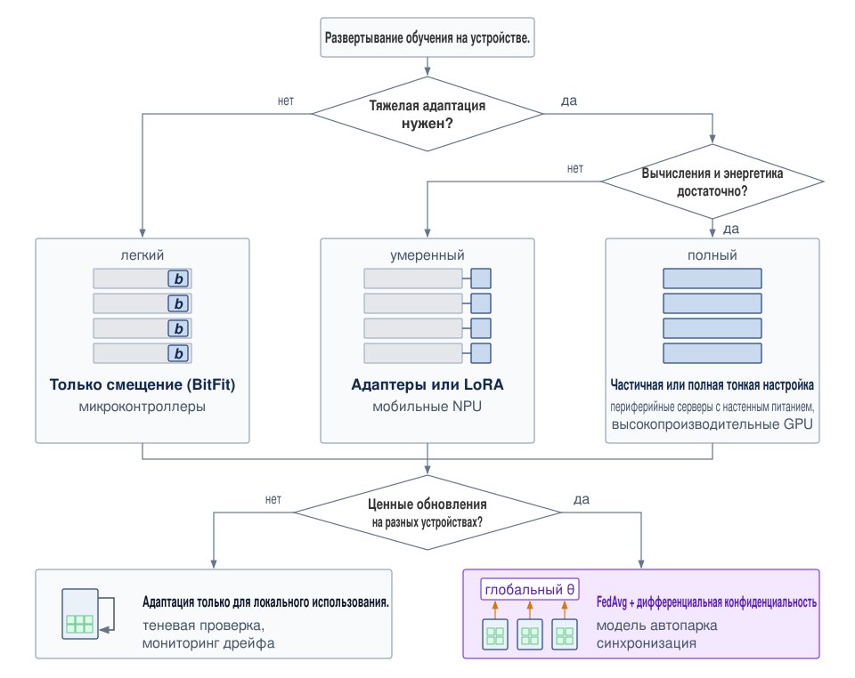
Контрольная точка 11.4: Интеграция трёх опор по уровням устройств
В этой главе построены три опоры обучения на устройстве: адаптация модели (обновления только смещений, адаптеры, полное дообучение), эффективность данных (few-shot, воспроизведение опыта, сжатые представления) и федеративная координация (агрегация, планирование клиентов, защищённая агрегация). Фреймворк принятия решений в Рисунок 18 сопоставляет каждую технику с возможностями класса устройств и путём координации. Проверьте интеграцию трёх опор на том же развёртывании.
Самые тяжёлые отказы периферийного обучения проявляются при взаимодействии опор, а не когда одна из них отказывает сама по себе. Адаптер может уложиться в память, но переобучиться на разреженных локальных данных; буфер воспроизведения может стабилизировать обучение, но утекать чувствительную историю; федеративный раунд может улучшить глобальную модель, усиливая при этом перекос участия. Именно эти взаимодействия решают, когда обучение на устройстве уместно, а когда безопаснее более простая стратегия.
Централизованное обучение может стандартизировать аппаратуру, курировать данные и валидировать модель до выпуска; многоуровневая политика вместо этого доставляется на миллионы устройств с разными средами исполнения, историями обновлений и связностью, и продолжает менять модель после выпуска. Поставка превращает каждое назначение уровня в артефакт выпуска, который нужно версионировать, валидировать без центральных меток и откатывать, когда адаптированная модель деградирует.
11.10 Интеграция в промышленную эксплуатацию
Прототип может дообучить адаптер на одном Raspberry Pi в контролируемых условиях, где инженер управляет входным потоком, проверяет каждую кривую потерь и вручную перепрошивает веса, если обновление расходится. Развёртывание той же политики адаптации на 50 million devices превращает локальное обучение в задачу производственной эксплуатации на устройствах с разными средами исполнения, бюджетами ресурсов и историями обновлений. Поэтому контракт выпуска должен управлять не только статическим набором начальных весов, но и тем, чему устройство может учиться в поле, как гейтируются непомеченные локальные изменения и как восстанавливается доверенный базовый вариант, когда адаптация не удаётся.
11.10.1 Сложности интеграции MLOps
В традиционном облачном конвейере артефакт выпуска — единственный неизменяемый бинарный файл модели; когда миллионы устройств начинают обновлять адаптеры офлайн по разным расписаниям, изначально выпущенные веса больше не описывают поведение, работающее в поле. Интеграция обучения на устройстве в операции машинного обучения (MLOps) — практики версионирования, развёртывания, мониторинга и отката производственных моделей — расширяет сферу выпускной инженерии, потому что бэкбоны, адаптеры, политики обновления и локальные истории эволюционируют независимо на гетерогенном аппаратном обеспечении. Существующие интеграционные тесты, реестры версий и мониторинг остаются необходимыми, но теперь они должны отслеживать и ограничивать разрешённый процесс адаптации наряду с начальной моделью.
Жизненный цикл периферийного обучения распределяет пять стадий между облаком и устройством (Рисунок 19). Централизованное предобучение базовой модели (стадия 1), сжатие аппаратуры по уровням (стадия 2) и поэтапные развёртывания по воздуху (стадия 3) зарождаются в облаке, тогда как локальная адаптация исполняется на устройстве под выпущенной политикой обновления (стадия 4). Агрегированная телеметрия (стадия 5) даёт свидетельства для решения о том, оправдано ли переобучение в облаке. Телеметрии нужны собственные средства контроля приватности: одна лишь агрегация не создаёт гарантии приватности, а обнаруженное изменение нужно отличить от регрессии качества, прежде чем запускать новый цикл обучения.
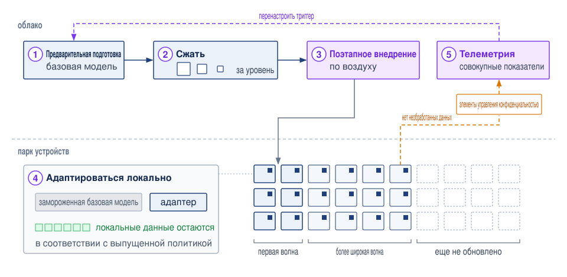
Преобразования конвейера развёртывания
Выпуск, включающий локальное обучение, содержит политику адаптации рядом с артефактами модели. Например, политика голосового ассистента из Глава 11.9 назначает обновления только смещений бюджетным устройствам и разные ранги LoRA — телефонам среднего и флагманского сегментов. Это условные назначения: занимаемый моделью объём, поддержка среды исполнения и живые тесты допуска определяют, может ли устройство их исполнить. Поэтому CI/CD должен валидировать логику выбора и разрешённое поведение обновления по конфигурациям устройств в дополнение к начальным весам.
Версионирование должно сохранять связи между этими артефактами. Локальный адаптер принадлежит конкретной базовой модели, политике обучения и схеме представлений; буфер воспроизведения может дополнительно зависеть от энкодера, породившего его признаки. Идентификаторы федеративных раундов фиксируют, какая общая версия породила возвращённый вклад. Обновление базы, таким образом, требует решения — сохранить, мигрировать, переобучить или отбросить зависимое локальное состояние. Само по себе большее число версии не устанавливает совместимость, а откат должен восстанавливать совместимый набор артефактов, а не независимо выбирать старые файлы.
Оркестрация непрерывного обучения
Непрерывное обучение на устройствах сочетает парк-уровневые расписания раундов или выпусков с локальными решениями о допуске. Координатор может запрашивать работу, но устройство обучается только когда проходят его тесты ресурсов и доступности. Следовательно, оркестратор должен отслеживать допустимую работу и совместимое состояние, не предполагая одновременного исполнения по клиентам. Поскольку устройства одновременно работают на разных базовых версиях и могут переподключиться после дней или недель офлайн, возвращённое обновление должно указывать свою базовую версию. Тогда координатор может отклонить обновление, применить заявленную политику устаревания или запросить новое обучение от текущей базы (Глава 11.7.5.1). Индивидуальные адаптеры и буферы воспроизведения несут собственные теги версий и не обязаны сливаться в общую модель.
Планирование с учётом ресурсов применяет Уравнение 2 в масштабе парка, где федеративные раунды обычно добавляют к локальному тесту допуска требования простоя, зарядки и неметрированной сети. Дневной лимит энергии ограничивает кумулятивную стоимость обучения по многим допущенным окнам. У допуска есть и среда исполнения. Обновления смещений в ранних слоях требуют обратного распространения через последующие операции; адаптация только головы ограничивает эти вычисления головой. Любой путь конкурирует с инференсом за вычисления, пропускную способность памяти и тепловой запас на общем SoC. Пользователи судят об устройстве по качеству обслуживания (QoS), поэтому среда исполнения отдаёт инференсу приоритет и приостанавливает или отзывает окно обучения, когда задержка переднего плана приближается к своему дедлайну. На крайнем случае микроконтроллера измеренная энергия обновления и доступные резервы определяют, сколько обучения может поддержать бюджет с duty-cycling или собираемой энергией.20
Когда репрезентативный центральный валидационный набор недоступен, федеративная оценка может агрегировать метрики, вычисленные на локальных отложенных данных. Величины обновлений дают диагностический сигнал оптимизации, но малые изменения могут отражать остановившееся обучение, а не приемлемое качество. Аудиты участия должны сопровождать измерения результатов, чтобы видимый прогресс не ограничивался перепредставленной когортой.
Эволюция системы мониторинга
Традиционный мониторинг агрегирует метрики с централизованных инференс-серверов, которые видят каждый запрос, тогда как монитор адаптивного парка видит только то, что устройства сообщают о моделях, которые могут отличаться на каждом устройстве. Телеметрия парка для периферийных устройств, включая федеративную аналитику, сообщающую агрегированные или дифференциально приватные сводки, — один из средств контроля выпуска парка в Глава 11.10.1.5. Адаптация добавляет локальные состояния модели, которые оператор может не наблюдать централизованно. Мониторинг должен различать изменение поведения и изменение качества. Непомеченные сигналы могут выявить расходимость, тогда как решение о том, лучше ли адаптированная модель, требует валидированных свидетельств результатов.
Обнаружение дрейфа представляет дополнительные сложности без доступа к эталонным меткам. Пока традиционный мониторинг сравнивает предсказания модели с помеченными валидационными наборами на централизованной инфраструктуре, системы на устройстве должны обнаруживать дрейф, используя только косвенные локальные сигналы, доступные во время развёртывания. Калибровка уверенности сравнивает выходные вероятности с итоговыми результатами, когда метки существуют; без верифицированных результатов сдвиги уверенности лишь сигнализируют об изменённом распределении оценок. Параллельно мониторинг входных распределений применяет статистические тесты, чтобы обнаружить, когда рабочие распределения признаков расходятся с данными предобучения, не требуя меток. Прокси качества задачи используют неявную обратную связь, такую как пользовательские исправления или брошенные сессии, — но только после валидации причинной связи с качеством задачи и учёта того, как предложения модели меняют последующее поведение пользователя. Наконец, теневые сравнения с базовой линией запускают замороженную базовую модель рядом с адаптированной; Глава 11.10.1.4 раскрывает, почему такое сравнение измеряет расходимость, а не качество.
↪ Ковариационный сдвиг, сдвиг меток и дрейф концепта, а также почему мониторы входных данных могут молчать при чистом дрейфе концепта, раскрыты в Сдвиг распределения и концептуальный дрейф.
Когортная оценка должна разделять вклад и выгоду. Устройство, которое никогда не обучается, всё равно может скачать улучшенную общую модель, но данные его пользователей могут быть плохо представлены среди завершённых обновлений. Метрики участия выявляют этот разрыв покрытия; измерения качества по когортам устанавливают, вредит ли он этим пользователям. Благоприятное глобальное среднее не может заменить ни одно из этих измерений.
Адаптация стратегии валидации
Традиционная валидация измеряет качество модели напрямую на отложенном тестовом наборе с известной эталонной истиной, тогда как обучение на устройстве должно валидировать адаптированные модели там, где живут их входы, в пределах приватности и ресурсов и обычно без меток. Теневая оценка модели поддерживает несколько вариантов модели на каждом устройстве и сравнивает их поведение. Устройства могут запускать замороженную последнюю известную рабочую модель рядом с локально адаптированной версией и измерять расходимость предсказаний, сдвиги уверенности, задержку и потребление ресурсов на одном входном потоке. Без меток или валидированного прокси результатов эти сравнения обнаруживают изменение, а не деградацию производительности: согласие может скрывать общую ошибку, а несогласие не показывает, какая модель верна. Поэтому теневое сравнение может лишь приостановить обновление для дальнейшей оценки, но автоматический откат требует помеченных результатов, валидированного поведенческого инварианта или прокси, связь которого с качеством задачи установлена для данного развёртывания.
Таким образом, компаратор может действовать только как шлюз, но не как судья (Рисунок 20). Живой входной поток зеркалируется в замороженную базовую линию и адаптированного кандидата, а компаратор отслеживает их несогласие, сдвиг уверенности и разницу ресурсов. Когда несогласие превышает допуск
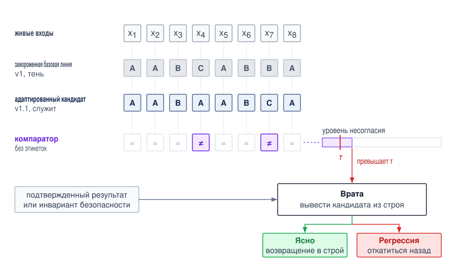
Шлюзы на основе уверенности дают ещё один сигнал изменения, когда метки недоступны. Уверенность даже калиброванной модели интерпретируема только относительно популяции и задачи, на которых измерялась калибровка. Падение может отражать сдвиг распределения, неоднозначность или изменившийся масштаб оценок; стабильная уверенность может сосуществовать с самоуверенными ошибками. Системы могут использовать уверенность, чтобы инициировать расследование или консервативно остановить адаптацию, но не должны называть адаптированную модель хуже без отложенных меток, рандомизированной оценки, доверенных пользовательских исправлений или другого валидированного сигнала результатов.
Федеративное A/B-тестирование случайно назначает устройства в экспериментальные и контрольные политики адаптации, сбалансированно по уровням устройств, и сравнивает приватно сохраняющиеся агрегаты частоты успеха адаптации, времени до улучшения и итогового качества. Выигравшая стратегия затем выпускается через поэтапный процесс развёртывания, которым владеют операции парка. Поскольку агрегированные сигналы валидации сами являются выпусками, им нужны минимизация данных, защищённая агрегация там, где уместно, объявленная единица приватности и учёт приватности по повторным раундам. Даже тогда популяционная сводка может пропустить отказ, ограниченный несколькими пользователями. Поэтому локальные шлюзы и популяционные сводки дают разные свидетельства, а оценка адаптивного парка требует измерения выгоды адаптации, стоимости ресурсов и когортного покрытия вместе.
↪ Поэтапное развёртывание (staged rollout), которое расширяет охват выпуска только после того, как каждый этап показывает приемлемые результаты, рассматривается в Стратегии поэтапного развёртывания.
Управление выпусками парка
Описанные выше механизмы управления действуют на одно адаптированное устройство или один федеративный раунд. Эксплуатация всей популяции как единого парка добавляет три взаимосвязанных ограничения сверх ограничений любого отдельного устройства, поэтому они образуют одну задачу эксплуатационного проектирования. Каждое ограничение требует собственного платформенного механизма управления (Таблица 9), включая валидацию с аппаратурой в контуре и федеративную аналитику.
| Ограничение парка периферийных устройств | Почему оно возникает | Платформенный механизм управления |
|---|---|---|
| Экстремальный разброс версий | Развёртывание может занимать недели или месяцы, поскольку устройства офлайн, разряжены или находятся в сетях с ограниченным доступом. В любой момент времени может оставаться активным до 50 версий модели. | Поддерживать обратно совместимые конвейеры данных и контракты обслуживания для моделей, развёрнутых месяцами ранее. |
| Валидация с учётом устройства | Пороги точности не показывают, превышает ли модель бюджет памяти телефона или вызывает троттлинг из-за нагрева на его однокристальной системе (SoC); на микроконтроллерных целевых платформах ниже Архетипа C бюджет сужается примерно до 1 МБ. | Добавить валидацию с аппаратурой в контуре на физических или эмулированных целевых устройствах перед повышением версии. |
| Телеметрия, ограниченная приватностью | Сырые предсказания нельзя непрерывно передавать обратно, поскольку правила приватности и стоимость трафика ограничивают наблюдаемость. | Использовать федеративную аналитику: устройства вычисляют локальные статистики, такие как частота ошибок или дрейф, а затем передают разрешённые агрегированные сигналы здоровья под явным контролем приватности и хранения данных. |
Разброс версий и валидация с учётом устройства следуют из состояния, которое несёт адаптированный парк. Устройство, переподключившееся после недель офлайн, может по-прежнему работать на выпуске, отстающем на несколько версий, вместе с адаптерами и буферами повтора, привязанными к этой базе, поэтому конвейеры данных и контракты обслуживания должны оставаться совместимыми с каждой активной версией, а не только с новейшей. Облачный порог точности ничего не говорит о проверках из Уравнение 1 и Уравнение 2, исход которых зависит от среды исполнения, размещения операторов и теплового поведения каждой целевой платформы. Поэтому валидация с аппаратурой в контуре запускает кандидат-выпуск, включая его путь обновления, на физических или эмулированных устройствах каждого тира, и повышение версии ждёт прохождения этих тестов.
Федеративные сигналы здоровья наследуют смещение участия, которое Глава 11.7.1 выявила для федеративного обучения. Устройство сообщает свою локальную частоту ошибок или статистику дрейфа только тогда, когда его политика допуска разрешает работу, а связность позволяет выгрузку, поэтому чаще всего отчитываются хорошо заряженные, хорошо подключённые и более новые устройства. Панель здоровья парка, таким образом, описывает допущенную популяцию, а не развёрнутую — то же смещение, которое принцип отбора участников («Допущенная популяция») называет для обучения. Поэтапное периферийное развёртывание может выглядеть здоровым, потому что устройства, наиболее вероятно отказавшие, — старое железо и термически ограниченные телефоны — менее всего склонны отчитываться. Поэтому платформа отслеживает охват отчётности по классам устройств и когортам наряду с самими сигналами здоровья и задерживает повышение версии, когда охват когорты падает слишком низко, чтобы её сигнал считался свидетельством.
Оценка производительности в динамических средах
Статические бенчмарки инференса характеризуют задержку, пропускную способность, энергоэффективность и точность для фиксированной модели, тогда как обучение на устройстве требует дополнительных измерений качества адаптации и эффективности обучения по последовательным обновлениям, чтобы объяснить, оправдывает ли локальное обучение свою ресурсную стоимость. Эффективность по числу примеров измеряет, сколько примеров нужно для достижения заявленного улучшения качества при фиксированном протоколе оценки. Получить два процентных пункта из 100 локальных примеров вместо 500 — преимущество, когда сбор полезных примеров является ограничивающим фактором. Меньшее число примеров не обязательно означает более быструю или дешёвую адаптацию, поскольку метод, более эффективный по примерам, может выполнять больше работы на пример или сохранять больше состояния; завершают сравнение затраченное время, пиковая память и энергия.
Поскольку обновление, эффективное по примерам, может всё же превышать аппаратные лимиты, соответствие устройственному конверту проверяет, остаётся ли улучшение в пределах ресурсных бюджетов. Сходимость при ограниченной памяти оценивает потерю на валидации при фиксированном бюджете ОЗУ, например «сходимость в пределах учебного следа 256 KB», а энергия на обновление измеряет миллиджоули, потребляемые на шаг градиента. Иллюстративный фоновый конверт 500–1000 mW соответствует 1.8–3.6 kJ/hour в активном состоянии. Влияние на батарею зависит от скважности, полезной ёмкости батареи, потребности переднего плана и состояния зарядки. Время до адаптации распространяет ту же идею на планирование, измеряя астрономическое время от появления новых данных до измеримого улучшения, включая ожидание простоя, статус зарядки и тепловой запас, а не только сырую пропускную способность ускорителя.
Даже обновление, укладывающееся в конверт устройства, должно ещё доказать свою пользу для пользователя, поэтому качество персонализации оценивает, улучшает ли адаптация целевое поведение, сохраняя прежние возможности. Дельта производительности на пользователя сравнивает адаптированную модель с глобальной базой на пользовательских отложенных данных; для принятия требуется заявленный порог улучшения и заявленную неопределённость. Приватность должна оцениваться согласно заданной политике раскрытия и гарантии, а не как неопределённая единица экспозиции. Катастрофическое забывание измеряет деградацию на исходной задаче после адаптации. Его приемлемая величина зависит от приложения, а изменения точности должны различать процентные пункты и относительные проценты.
Когда устройства координируются через федеративные протоколы, рассмотренные в Глава 11.6, оценка расширяется с устройства на популяцию. Эффективность связи соотносит улучшение качества с общим числом переданных байт; выигрыш от сжатия зависит от модели, оптимизатора, гетерогенности данных и кодирования (Konečný и др. 2016 г.; Kairouz и McMahan 2021 г.). Сравнения должны также сообщать байты и затраченное время до одной и той же цели по качеству. Политики в отношении отстающих (stragglers) меняют и время ожидания, и когорту вносящих вклад. Поэтому число участников, охват когорт и неопределённость результата должны оцениваться совместно, без предположения, что один порог участия определяет стабильность при любых политиках.
Система, которая быстро инференсирует, но медленно адаптируется, или эффективно адаптируется, но приходит к плохой точности, всё равно проваливает своё развёртывание, поэтому эти метрики обучения и эксплуатационные механизмы управления расширяют бенчмарки инференса и устоявшиеся практики MLOps на распределённое гетерогенное обучение. Вместе они позволяют обнаруживать, задерживать и обращать вспять неправильно ведущую себя адаптацию, хотя и не устраняют исходных условий, из-за которых адаптивные парки сбоили: от гетерогенного железа и не-IID данных до медленного дрейфа и злоумышленных клиентов.
11.11 Инженерные сложности и их смягчение
Модель предиктивного ввода текста для миллиарда пользователей, обучающаяся на живом вводе с клавиатуры, может быть отравлена, если скоординированная группа злоумышленных пользователей многократно вводит конкретное оскорбительное слово и эти локальные обновления попадают в глобальный федеративный агрегат. Шлюзы выпуска и мониторинг среды исполнения из Глава 11.10 ограничивают конкуренцию за ресурсы и отмечают грубые регрессии, а тировая политика интеграции ограничивает, где может действовать каждый столп, но ни то ни другое не устраняет полевые условия, из-за которых адаптирующийся парк может деградировать или скрывать атаку. Эти поверхности отказов образуют связанную цепочку по всему развёртыванию. Фрагментация железа и ПО меняет то, какие устройства могут участвовать; смещённое участие искажает не-IID распределение данных, из которого учится парк; неявные петли обратной связи позволяют локальным моделям незаметно дрейфовать между аудитами; а пост-релизные изменения весов напрягают регуляторную прослеживаемость и защитные механизмы безопасности. Поскольку каждое слепое пятно скрывает следующее, инженерные меры смягчения должны продвигаться от гетерогенности устройств и данных через незаметный дрейф и восстановление соответствия к комбинированному пути управления, защищающему от скоординированного отравления (Глава 11.11.5).
11.11.1 Управление гетерогенностью устройств и данных
Политика адаптации, прошедшая лабораторные тесты на одном референсном смартфоне, может выдавать расходящиеся веса, падать на неподдерживаемых ядрах или бесконечно зависать на производственном парке, где различаются версии ОС, драйверные стеки, реализации плавающей точки и привычки зарядки. Гетерогенность определяет, какие устройства могут обучаться, какие — валидировать, а какие — лишь вносить лёгкие сигналы. Назначение тиров уже даёт каждому классу железа свой формат модели и политику обновления, поэтому задача управления здесь — воспроизводимость на устройствах, чьи программные стеки, связность и доступность питания расходятся.
Гетерогенность ПО — то, что делает даже корректное назначение трудновоспроизводимым. Устройства могут работать под разными версиями операционных систем, драйверов уровня ядра и библиотек среды исполнения. Одни окружения поддерживают оптимизированные ML-среды вроде TensorFlow Lite Micro или ONNX Runtime Mobile, другие полагаются на кастомные стеки инференса или ограниченные API. Эти расхождения могут приводить к тонким несоответствиям поведения, особенно когда модели компилируются по-разному или когда точность плавающей точки варьируется между платформами.
Связность и время работы добавляют измерение планирования. Одни устройства подключаются эпизодически, включены в розетку лишь изредка или работают при жёстких ограничениях пропускной способности. Другие имеют постоянное питание и надёжную сеть, но всё равно приоритизируют отзывчивость пользовательского интерфейса над фоновым обучением. Эти различия усложняют скоординированное обучение, потому что право на обновление меняется вместе с текущим состоянием устройства, а не только с его аппаратным тиром.
Фрагментация систем делает воспроизводимость и тестирование свойством парка, а не лаборатории. При столь широком диапазоне сред исполнения трудно гарантировать согласованное поведение модели и трудно воспроизводить отказы. Поэтому мониторинг, валидация и откат становятся важнее, одновременно становясь труднее для единообразной реализации по всему парку.
Последствие видно на развёртывании мобильной клавиатуры. Одно устройство может иметь 8 GB ОЗУ и поддерживаемый путь ускорителя, другое — 2 GB, более медленный путь обновления и эпизодическую связность. Эти различия влияют на длительность обновления и частоту завершений. Подстройка расписаний, форматов моделей и сжатия может расширить участие, но справедливость улучшения проявляется только в измерениях результатов по этим когортам устройств, поскольку уважение бюджета каждого устройства — не то же самое, что равная польза.
11.11.2 Сложности не-IID распределения данных
Федеративный раунд, в котором глобальная потеря на валидации стабильно улучшается, всё же может деградировать точность следующего слова для целого регионального диалекта или когорты бюджетных телефонов, потому что никакая центральная перестановка не выравнивает не-IID распределения клиентов. В продакшене не-IID данные становятся задачей оценки и управления. Оценка должна покрывать целевую популяцию развёртывания через репрезентативный центральный тестовый набор или распределённые отложенные данные, а агрегированное качество требует проверок на уровне когорт, поскольку среднее по популяции может скрывать постоянный локальный отказ. Мера смягчения должна следовать за наблюдаемым отказом, а не за общей меткой «не-IID», и каждое из четырёх распространённых наблюдений указывает на ограниченный механизм управления и критерий выпуска (Таблица 10).
| Наблюдаемое свидетельство | Вероятный отказ | Механизм для проверки | Критерий выпуска |
|---|---|---|---|
| Метрики когорт расходятся, пока агрегированное качество растёт | Недопредставленность популяции | Стратифицированная выборка или ограниченные веса важности | Метрика худшей когорты улучшается без неприемлемой потери агрегата |
| Больше локальных шагов увеличивает расхождение обновлений и число раундов до цели | Дрейф клиентов | Уменьшить локальные шаги, добавить проксимальную регуляризацию (FedProx), включить контрольные вариаты (SCAFFOLD) или адаптировать серверный оптимизатор | Астрономическое время и байты до цели снижаются на репрезентативных когортах |
| Одна глобальная модель оставляет стабильные, различимые кластеры в плохом обслуживании | Мультимодальные цели клиентов | Кластеризованные модели или общий backbone с локальными головами | У каждого кластера достаточно опоры и он превосходит глобальную базу |
| Активные пользователи доминируют в агрегате | Несоответствие весов цели | Заменить взвешивание примеров взвешиванием пользователей или ограничить вклад на пользователя | Оценка соответствует заявленной цели уровня пользователя или примера |
11.11.3 Механизмы отказов и их предотвращение
Помимо искажения средних по когортам, некурируемое локальное обучение может испортить модель на отдельном устройстве: система предсказания для клавиатуры, обучающаяся на всех вводах пользователя без разделения задуманных слов и исправлений, может усвоить повторяющиеся опечатки как корректные подсказки и постепенно деградировать собственные предсказания. Поскольку такие отказы обучения на устройстве проявляются медленно, локально и часто без централизованных свидетельств (Kairouz и McMahan 2021 г.), неограниченный дрейф адаптации может увести развёрнутую модель далеко от целевого поведения до того, как сдвинется агрегированная телеметрия. Этот риск становится острым в приложениях мониторинга здоровья, где постепенные изменения пользовательских базовых показателей могут быть выучены как «норма», из-за чего система может пропустить аномалии, которые обнаружила бы статическая модель.
Помимо дрейфа отдельных устройств, смещение участия, описанное в разделе о планировании клиентов (Глава 11.7.1), может самоусиливаться во времени. Пользователи, чьи модели улучшаются меньше, участвуют меньше, что дополнительно снижает их представительство в последующих раундах (Wang и др. 2021 г.). Отказ медленный и невидимый в агрегированных метриках — именно поэтому когортная оценка должна сопровождать каждый принятый раунд.
Эти систематические смещения взаимодействуют с проблемами качества данных, создавая петли обратной связи автокоррекции, особенно в текстовых приложениях. Когда системы не различают задуманный ввод и исправления, они могут вырабатывать неожиданное поведение. Часто исправляемая доменно-специфичная терминология может быть ошибочно выучена как ошибка, что ведёт к неуместным подсказкам в профессиональном контексте. Эта проблема усугубляет дрейф: модели адаптируются к индивидуальным причудам и одновременно закрепляют собственные ошибки, когда пользователи принимают автокоррекции, не осознавая, что система учится на этих взаимодействиях.
Эти режимы отказа связывают индивидуальный дрейф, смещение популяции и деградацию качества данных. Обзоры федеративного обучения называют гетерогенность, смещение участия, приватность и нестабильность оптимизации рисками развёртывания (Li и др. 2020 г.; Kairouz и McMahan 2021 г.). В ответ успешные системы могут ограничивать адаптацию, стратифицировать выборку, отличать исправления от надёжных меток и использовать теневые сравнения для выявления изменений, требующих валидированной оценки.
11.11.4 Риски соответствия, безопасности и восстановления в продакшене
Когда медицинский носимый прибор, детектор финансового мошенничества или контроллер транспортного средства адаптирует свои веса после выпуска, развёрнутая модель расходится с артефактом, прошедшим регуляторную проверку. Непроверенное локальное обновление может аннулировать аудит-след, впитать отравленные входы или нарушить правила удаления данных. В доменах, где требуются соответствие, аудируемость и регуляторное одобрение, обучение на устройстве создаёт прямое напряжение между локальной автономией и операционным контролем.
Централизованно управляемый обучающий конвейер может записывать данные, контрольные точки и результаты оценки общего выпуска. Обучение на устройстве распределяет историю обновлений по локальным моделям и наблюдениям, которые могут оставаться приватными. Поэтому прослеживаемость зависит от того, что записывает протокол адаптации: базовая версия, разрешённая политика обновления, результат валидации и доступная точка восстановления. Оператор может сохранять контроль над этими границами, не собирая каждый локальный обучающий пример.
Эта автономия создаёт разрыв валидации. Свидетельства, собранные для выпущенной модели, не устанавливают автоматически поведение каждой адаптированной версии. Когда входы и истории обновлений остаются локальными, развёртыванию нужен определённый набор локальных проверок приёмки и способ сообщать об отказах в рамках ограничений приватности. Адаптированная модель может покинуть свой валидированный рабочий диапазон раньше, чем агрегированный мониторинг заметит изменение, поэтому политика обновления должна указывать, когда отклонять кандидата или восстанавливать доверенную базу.
Отложенное обнаружение усложняет восстановление, особенно пока устройство офлайн. Доверенная база должна оставаться доступной независимо от адаптированного кандидата, а политика восстановления должна учитывать совместимость препроцессинга, адаптеров и состояния среды исполнения. Восстановление только весов может оставить на месте неисправный триггер обновления или заражённые данные повтора. Поэтому восстановление включает решение о том, какое состояние адаптации сохранить, поместить в карантин или сбросить до возобновления обучения.
Каждый путь восстановления в этом разделе предполагает, что нечто безопасное продолжает работать, пока адаптированная модель подозрительна или восстанавливается. Когда контуры восприятия и управления опираются на локальные модели, этим «нечто» часто является человек-оператор, и человеческий фолбэк не является механизмом безопасности, если сам фолбэк не спроектирован как часть системы. Смертельная авария 2016 года под автоматизацией помощи водителю показывает, что происходит, когда это предполагается вместо этого.
Практический случай 11.1: Пограничная модель с человеческим резервом (2016)
Контекст: Tesla Model S 2015 года использовала Traffic-Aware Cruise Control и Autosteer, когда 7 мая 2016 года возле Уиллистона, Флорида, она столкнулась с пересекавшим дорогу седельным полуприцепом (National Transportation Safety Board 2017 г.). Ответственность за наблюдение оставалась за водителем.
Механизм: NTSB связала аварию с тем, что водитель грузовика не уступил дорогу, и с невнимательностью водителя автомобиля, вызванной чрезмерной уверенностью в автоматизации. Эксплуатационная конструкция автоматики внесла свой вклад, допуская длительное отключение от управления и использование вопреки рекомендациям производителя.
Последствия: Автомобиль проехал под полуприцепом, и его водитель погиб.
Решение: NTSB выпустила рекомендации по безопасности, касающиеся защиты автоматизации и надзора. Для проектировщика периферийных систем соответствующее требование — сделать эксплуатационные ограничения и контракт наблюдения принудительно исполнимыми, а не предполагать, что человек восстановит систему после любого локального сбоя.
Системный урок: Быстрого локального исполнения недостаточно, если объединённая система сенсоров, автоматизации и человеческого надзора не имеет надёжного резерва. Хотя этот автомобиль не учился на устройстве, урок применим и к периферийному обучению. Резервный контракт валидируется против фиксированного поведения модели, а локальная адаптация меняет это поведение после релиза, поэтому каждое принимаемое обновление должно оставлять эксплуатационные ограничения и валидированный путь восстановления нетронутыми.
Защита пути восстановления также требует защиты локального состояния, которое запускает адаптацию или питает её. Поскольку обучение на устройстве опирается на потоки данных, специфичные для устройства, при ограниченном централизованном мониторинге, злоумышленники могут подменять replay-буферы или внедрять отравленные примеры во время адаптации, чтобы увести модели в небезопасные или смещённые состояния, а несанкционированный доступ к сохранённым эмбеддингам признаков или few-shot примерам может раскрыть персональные данные. Поэтому непосредственная проектная обязанность — рассматривать состояние модели, replay-буферы и триггеры адаптации как чувствительные к безопасности активы с локальными проверками целостности, шифрованным хранением и консервативными политиками обновления — ещё до начала адаптации.
Требования законодательства о приватности и защите данных усугубляют эти обязательства по локальному состоянию. Хотя хранение сырых наблюдений на устройстве снижает риски, связанные с передачей, адаптация всё равно локально хранит и обрабатывает персональные сенсорные трассы и журналы поведения, что влечёт требования согласия пользователя, ограничений хранения, проверяемости и права на удаление по GDPR. Поскольку данные пользователя могут влиять на адаптированные веса и кэшированные представления способами, которые трудно отследить и отменить по отдельности, соответствующие требованиям периферийные конвейеры дополняют шифрованное хранение и сроки хранения механизмами сброса, контролируемыми пользователем, которые удаляют локальное состояние адаптации и восстанавливают валидированный базовый вариант.
Распределённая адаптация также усложняет отладку и анализ отказов (Kairouz и McMahan 2021 г.). Развёртывание должно ещё до релиза назначить ответственность за обнаружение регрессий, приостановку обучения, восстановление базового варианта и расследование отказов. Локальный дрейф данных, неудачная инициализация и неисправные средства защиты могут давать похожие симптомы, поэтому записи о версиях и валидации должны поддерживать диагностику в пределах допустимого раскрытия информации. Автономное исполнение не снимает необходимости в подотчётном процессе восстановления. Работа с этими рисками развёртывания и соответствия требует инструментов, протоколов и проектных практик, расширяющих возможности объяснить, ограничить и отменить локальную адаптацию (Глава 11.8.2) до внешних требований трассируемости, воспроизводимости и защиты пользователей.
11.11.5 Отравленные обновления и объединённый контур управления
Отравление, инверсия, дрейф и отказы валидации возникают и в централизованных ML-системах, но локальная адаптация затрудняет их наблюдение, атрибуцию и откат в гетерогенном парке. Модель клавиатуры с миллиардом пользователей, отравленная скоординированной группой пользователей, показывает почему. Вредоносные обновления приходят как обычные вклады от аутентифицированных устройств, безопасная агрегация скрывает каждый из них от проверки, а вызываемый ими сдвиг может оставаться ниже того, что выявляет среднее по популяции. Защита от таких отравленных обновлений21 — одна из трёх обязанностей, которые добавляет локальная адаптация, наряду с ограничением того, что раскрывают обновления, и обнаружением локальных сдвигов, скрытых средними по популяции.
↪ Отравление данных как модель угроз, включая отравленные вклады в федеративное обучение, рассматривается в Отравление данных.
Поэтому периферийная архитектура должна связать диапазон адаптации, целостность обновлений, учёт приватности, устойчивую агрегацию, свидетельства валидации и откат в один контур управления. Эти механизмы не заменяют друг друга. Безопасная агрегация скрывает индивидуальные вклады, устойчивая статистика ограничивает часть вредоносного влияния, а валидированные результаты устанавливают, улучшилось ли поведение.
Если проследить атаку с оскорблением (slur attack), каждый механизм контроля действует в своей точке. Ограниченные локальные обновления, проверяемые до маскирования, ограничивают, насколько далеко одно устройство может сдвинуть общую модель, хотя скоординированная группа всё же может внести много ограниченных сдвигов в одном направлении. Маскированная сумма не позволяет координатору узнать, что набирал каждый пользователь, но также не позволяет ему выделить обновления атакующих, поэтому ни один фильтр на стороне клиента не может удалить их после маскирования. Изменение может проявиться в оценке по когортам и в теневом сравнении с замороженным базовым вариантом, где адаптированная модель начинает предлагать оскорбление, при условии что оцениваемые входы включают контексты, на которые направлена атака; оскорбление, предлагаемое только после редкого префикса, может остаться ниже допуска на расхождение. Когда сравнение всё же его помечает, шлюз удерживает кандидата, и продвижение в парке ожидает; свидетельства валидированного результата затем подтверждают регрессию и оправдывают откат к последнему совместимому набору базовой модели, адаптеров и политики.
11.12 Заблуждения и подводные камни
Команда портирует обученную в облаке рекомендательную модель в мобильное приложение и считает, что успешный инференс допускает и локальное дообучение. Первое же обновление может превысить выделенную приложению память по мере накопления градиентов и сохранённых активаций; конфигурация, которая помещается, всё равно может потреблять больше энергии, чем разрешает фоновая политика. Эти различные отказы мотивируют следующие заблуждения и подводные камни:
Заблуждение: Обучение на устройстве обеспечивает те же возможности адаптации, что и обучение в облаке.
Команды ожидают, что локальное обучение даст такие же улучшения модели, как централизованное обучение, игнорируя ресурсные ограничения устройства. Обучение всей модели добавляет к весам активации, градиенты и состояние оптимизатора; конфигурации в Глава 11.3.1 требуют 4–12× от одного лишь веса инференса в зависимости от модели и графика исполнения. Локальные датасеты обычно малы, смещены и нерепрезентативны, а бюджеты вычислений остаются на порядки ниже облачных GPU. Смартфон с 8 GB ОЗУ и устойчивым лимитом энергопотребления 2–3 W не может воспроизвести адаптацию, достигаемую системами дата-центров с терабайтами памяти и киловаттами мощности. Эффективное обучение на устройстве требует проектирования стратегий адаптации, дающих значимые улучшения в этих ограничениях, а не попыток воспроизвести возможности обучения облачного масштаба.
Подводный камень: Считать, что федеративное обучение автоматически сохраняет приватность без дополнительных мер.
Практики полагают, что хранение данных на локальных устройствах само по себе обеспечивает защиту приватности, игнорируя то, что можно вывести из обновлений модели. Обновления градиентов и параметров раскрывают значительную информацию о локальных обучающих данных через различные инверсионные атаки, а паттерны участия устройств выдают чувствительную информацию о пользователях и их действиях. Более сильная защита приватности требует дополнительных механизмов. Дифференциальная приватность даёт настраиваемую вероятностную границу того, насколько может измениться выходное распределение из-за данных одного человека, а протоколы безопасной агрегации предотвращают проверку параметров при серверной координации с помощью криптографического маскирования нулевой суммы (Рисунок 16) (Bonawitz и др. 2017 г.). Одной локальности данных недостаточно для защиты приватности.
Заблуждение: Адаптация с ограниченными ресурсами всегда даёт лучшие персонализированные модели, чем универсальные модели.
Это убеждение предполагает, что любая локальная адаптация полезна независимо от качества или объёма доступных локальных данных. Обучение на устройстве при недостаточных, шумных или смещённых локальных данных может даже ухудшить качество модели по сравнению с хорошо обученными универсальными моделями (Глава 11.5). Небольшие датасеты могут не дать достаточно сигнала для значимого обучения, а адаптация к локальному шуму способна навредить обобщению. Эффективные системы обучения на устройстве должны включать механизмы, определяющие, когда локальная адаптация полезна, и возвращающиеся к универсальным моделям, когда локальных данных недостаточно для надёжного обучения.
Подводный камень: Игнорировать гетерогенность разных типов и возможностей устройств.
Команды проектируют системы обучения на устройстве, предполагая одинаковые аппаратные возможности всех устройств развёртывания. Реальные развёртывания охватывают разнообразное оборудование с различающейся вычислительной мощностью, объёмом памяти, энергетическими и сетевыми возможностями. Только доступная память различается примерно в 65,536× между 256 KB SRAM микроконтроллеров и 16 GB у флагманских смартфонов (Глава 11.7.5.2), а поддерживаемые операторы и лимиты энергопотребления различаются столь же резко. Частота тактирования или пиковые рейтинги из несопоставимых архитектур не пересчитываются в общий коэффициент пропускной способности обучения, поэтому сравнение требует измеренной стоимости обновления при согласованных задачах и заявленных состояниях эксплуатации. Алгоритм обучения, хорошо работающий на топовых смартфонах, может катастрофически отказать на ограниченных по ресурсам IoT-устройствах. Алгоритмы федеративного обучения должны учитывать гетерогенность клиентов и доступность (Kairouz и McMahan 2021 г.; Bonawitz и др. 2019 г.), используя выборочное участие, сжатие и ярусную агрегацию, когда измеренная стоимость обновления устройств существенно различается.
Подводный камень: Недооценивать сложность координации обучения в распределённых периферийных системах.
Многие команды сосредоточены на оптимизации отдельных устройств и считают координацию безсерверным усреднением, как будто локальные обновления приходят регулярно от сопоставимых устройств. В масштабе парка агрегатор — один компонент контура управления, который должен знать, какие устройства допущены, какая версия модели на каждом, и безопасно ли возвращённое обновление к продвижению. Производственная система выбирает около 130 процентов целевой когорты (Bonawitz и др. 2019 г.), поскольку значительная часть выбранных устройств никогда не отчитывается. Оркестрация на периферии (Глава 11.7.5) должна также обрабатывать прерывистую связность, разные состояния питания, часовые пояса и рассинхронизацию версий между устройствами, вернувшимися после дней офлайн. Конструкция, которая бюджетирует только шаг усреднения, оставляет без владельца дедлайны раундов, частичное участие и сверку состояния, хотя именно эти части контура решают, завершится ли раунд с репрезентативной когортой.
11.13 Итоги
Периферийный интеллект расширяет парк до устройств, чью память, энергию и доступность оператор не может стандартизировать. Сенсоры, микроконтроллеры и смартфоны участвуют при разных ресурсных бюджетах, поэтому локально реализуемая политика обучения определяет, какая часть популяции может участвовать. Архетип C (Federated MobileNet) делает это конкретным. Локальная адаптация расходует ось вычислений C³ внутри энергетического и меморного лимита каждого смартфона. Адаптеры и сжатие обновлений сокращают межрегиональную передачу в коммуникационном члене Закона парка. Сверх-выбор с дедлайнами раундов ограничивает член синхронизации Закона парка ценой того, какие устройства представлены.
Три рычага делают обучение возможным при этих ограничениях, и каждый действует на разную часть одного и того же бюджета. Адаптация модели сокращает обучаемое состояние и — при удачном размещении — сохранённые активации, доминирующие в пиковой памяти. Эффективность данных повышает сигнал, извлекаемый из каждого скудного примера, и защищает прежнее поведение ограниченным replay. Федеративная координация позволяет совместимым обновлениям многих устройств улучшать одну общую модель без централизации сырых данных. Ни один из трёх не сдвигает тепловые, энергетические и пропускные лимиты устройства; каждый решает, сколько полезного обучения помещается внутри них.
В рантайме эти реальности превращаются в решение о допуске, а не в общее предпочтение работать «когда простаивает». Фоновая адаптация может исполняться только когда прогнозируемая энергия и устойчивая мощность помещаются в текущий запас устройства, а профилированная интерференция худшего случая сохраняет дедлайн переднего плана. Поскольку статус зарядки не устраняет тепло и конкуренцию за ресурсы, каждый допущенный интервал остаётся отзываемым при изменении состояния устройства.
Локальное исполнение может удовлетворить требования задержки, локальности данных и офлайн, но сами по себе эти требования не оправдывают локальное обучение. Адаптация должна улучшать валидированный результат в пределах своего ресурсного бюджета; федерация должна затем сохранять совместимость обновлений, контролировать раскрытие информации и оценивать популяцию, фактически представленную завершёнными обновлениями.
Основные выводы: Физика задаёт бюджет
- Периферия переворачивает парк: Дата-центры борются за то, чтобы занять много ускорителей; периферийные устройства борются за то, чтобы учиться при батареях, килобайтах, троттлинге из-за нагрева (аналог принципа «Барьер плотности мощности» на масштабе устройства) и прерывистых каналах. Те же ограничения вычислений, коммуникации и координации должны учитывать и допуск устройств, и суммарную пропускную способность.
- Пропускная способность важнее декларируемых TOPS: Один шаг обновления в примере главы с 10M параметров переносит около 800 MB, 20× от байтов весов, читаемых при инференсе, через интерфейс памяти смартфона, примерно в 44–65× уже дата-центрового HBM. Это тот же потолок, что ограничивает память-зависимый decode (принцип «Авторегрессионное узкое место»). Квантизация и локальность помогают, но измеренная скорость обновления зависит от перемещённых байтов и устойчивой пропускной способности.
- Обучение умножает занимаемый объём: Обратное распространение по всей модели может требовать 4–12× от памяти, занимаемой одним лишь весом инференса, в конфигурациях главы, в зависимости от состояния оптимизатора, активаций и точности. Сокращение обучаемого состояния помогает только тогда, когда замороженная модель и оставшееся состояние исполнения тоже помещаются.
- Фоновое обучение — условная работа: Допускайте интервал адаптации только когда Уравнение 2 соблюдает бюджеты энергии, температуры и задержки переднего плана при интерференции худшего случая по измерениям. Одной зарядки недостаточно.
- Допуск выбирает популяцию: Прохождение теста допуска коррелирует с аппаратурой, привычками зарядки и связностью, поэтому общая модель учится на допущенных устройствах, а не на развёрнутом парке (принцип «Допущенная популяция»). Участие и качество по когортам нужно измерять и корректировать; ослабление допуска расходует бюджеты, ради защиты которых он существует.
- Каждая техника расходует свой бюджет: Обновления только смещений, LoRA, разреженные слои, повторное использование few-shot данных и experience replay расходуют разные бюджеты памяти, энергии и приватности. Федеративная координация добавляет обучение популяции только когда суммарные выгрузки остаются ниже замещаемых данных, достаточно клиентов переживает для порога участия безопасной агрегации, чтобы индивидуальные обновления оставались скрытыми, и общее состояние остаётся совместимым по версиям.
- Гетерогенность — нормальный режим работы: Периферийные парки охватывают микроконтроллеры, смартфоны, шлюзы и NPU с неравномерной доступностью, производительностью и non-IID данными. Отстающие, клиентский дрейф, смещение участия и приватно-щадящая наблюдаемость — это проектные ограничения протоколов, а не уборка после развёртывания. Когда модели продолжают учиться после релиза, артефактом релиза становится политика адаптации, версионируемая против базовой модели, к которой откат может вернуться.
Политика периферийного обучения определяет и работу, которую может выполнять устройство, и популяцию, из которой учится парк. Ужесточение ресурсного бюджета может защитить пользовательский опыт переднего плана, но исключить данные этого пользователя из общего улучшения. Полезная цель проектирования — валидированная адаптация по всей целевой популяции, с совместной оценкой локальной реализуемости и представленности парка.
Дальнейшие шаги: От устройств к эксплуатации
Когда модель продолжает учиться после релиза, парк отгружает уже не фиксированный набор весов, а правило адаптации, версионируемое против базовой модели, допускаемое устройство за устройством, валидируемое через распределённые свидетельства результатов, когда централизованных меток нет, и оцениваемое по тому, какие когорты представляют его завершённые обновления. Производственные организации запускают сотни моделей одновременно, многие из которых разделяют признаки, конвейеры данных и релизную инфраструктуру, поэтому изменение, сделанное для одной, может молча сломать другую. Держать такой портфель версионируемым, наблюдаемым и восстанавливаемым — самостоятельная задача координации.
↪ Плоскость управления, которая версионирует, релизит, мониторит и откатывает портфель моделей, развивается в Эксплуатация систем машинного обучения в масштабе.
использованная литература
Abadi, M., A. Chu, I. Goodfellow, и др. 2016 г. «Deep Learning With Differential Privacy». Proceedings of the 2016 ACM SIGSAC Conference on Computer and Communications Security, CCS ’16, 308–18. https://doi.org/10.1145/2976749.2978318.
Apple. 2017 г. The future is here: iPhone X. https://www.apple.com/newsroom/2017/09/the-future-is-here-iphone-x/.
Apple. 2018 г. iPhone XS and iPhone XS Max bring the best and biggest displays to iPhone.https://www.apple.com/newsroom/2018/09/iphone-xs-and-iphone-xs-max-bring-the-best-and-biggest-displays-to-iphone/ .
Apple. 2020 г. Apple unveils all-new iPad Air with A14 Bionic, Apple’s most advanced chip.https://www.apple.com/newsroom/2020/09/apple-unveils-all-new-ipad-air-with-a14-bionic-apples-most-advanced-chip/ .
Apple. 2021 г. Apple unveils iPhone 13 Pro and iPhone 13 Pro Max.https://www.apple.com/newsroom/2021/09/apple-unveils-iphone-13-pro-and-iphone-13-pro-max-more-pro-than-ever-before/ .
Apple. 2022 г. Apple debuts iPhone 14 Pro and iPhone 14 Pro Max. https://www.apple.com/newsroom/2022/09/apple-debuts-iphone-14-pro-and-iphone-14-pro-max/.
Apple. 2023 г. iPhone 15 Pro and iPhone 15 Pro Max (product page, archived 20 October 2023). https://web.archive.org/web/20231020/https://www.apple.com/iphone-15-pro/.
Arivazhagan, Manoj Ghuhan, Vinay Aggarwal, Aaditya Kumar Singh, и Sunav Choudhary. 2019 г. «Federated Learning with Personalization Layers». CoRR abs/1912.00818. http://arxiv.org/abs/1912.00818v1.
Banbury, Colby, Vijay Janapa Reddi, Peter Torelli, и др. 2021 г. «MLPerf Tiny Benchmark». arXiv preprint. http://arxiv.org/abs/2106.07597v4.
Bartoli, Pietro, Christian Veronesi, Andrea Giudici, David Siorpaes, Diana Trojaniello, и Franco Zappa. 2025 г. «Benchmarking energy and latency in TinyML: A novel method for resource-constrained AI». arXiv preprint arXiv:2505.15622. https://arxiv.org/abs/2505.15622.
Blanchard, Peva, El Mahdi El Mhamdi, Rachid Guerraoui, и Julien Stainer. 2017 г. «Machine Learning with Adversaries: Byzantine Tolerant Gradient Descent». Advances in Neural Information Processing Systems (NeurIPS), 119–29. https://proceedings.neurips.cc/paper/2017/hash/f4b9ec30ad9f68f89b29639786cb62ef-Abstract.html.
Bommasani, Rishi, Drew A. Hudson, Ehsan Adeli, и др. 2021 г. «On the Opportunities and Risks of Foundation Models». arXiv preprint arXiv:2108.07258. http://arxiv.org/abs/2108.07258v3.
Bonawitz, K., H. Eichner, W. Grieskamp, и др. 2019 г. «Towards Federated Learning at Scale: System Design». Proceedings of Machine Learning and Systems 3. http://arxiv.org/abs/1902.01046v2.
Bonawitz, Keith, Vladimir Ivanov, Ben Kreuter, и др. 2017 г. «Practical Secure Aggregation for Privacy-Preserving Machine Learning». Proceedings of the 2017 ACM SIGSAC Conference on Computer and Communications Security, 1175–91. https://doi.org/10.1145/3133956.3133982.
Cai, Han, Chuang Gan, Ligeng Zhu, и Song Han. 2020 г. «TinyTL: Reduce Activations, Not Trainable Parameters for Efficient On-Device Learning». Advances in Neural Information Processing Systems 33: 11285–97. http://arxiv.org/abs/2007.11622v5.
Chen, Tianqi, Bing Xu, Chiyuan Zhang, и Carlos Guestrin. 2016 г. «Training Deep Nets with Sublinear Memory Cost». arXiv preprint arXiv:1604.06174. http://arxiv.org/abs/1604.06174v2.
ETH Zurich Computer Vision Lab. 2026 г. AI Benchmark: Mobile SoC Ranking. https://ai-benchmark.com/ranking_processors.html.
Finn, Chelsea, Pieter Abbeel, и Sergey Levine. 2017 г. «Model-agnostic meta-learning for fast adaptation of deep networks». Proceedings of the 34th International Conference on Machine Learning (ICML).
Fredrikson, Matt, Somesh Jha, и Thomas Ristenpart. 2015 г. «Model Inversion Attacks That Exploit Confidence Information and Basic Countermeasures». Proceedings of the 22nd ACM SIGSAC Conference on Computer and Communications Security, 1322–33. https://doi.org/10.1145/2810103.2813677.
Gama, João, Indrė Žliobaitė, Albert Bifet, Mykola Pechenizkiy, и Abdelhamid Bouchachia. 2014 г. «A survey on concept drift adaptation». ACM Computing Surveys 46 (4): 1–37. https://doi.org/10.1145/2523813.
Han, Song, Jeff Pool, John Tran, и William J. Dally. 2015 г. «Learning both Weights and Connections for Efficient Neural Networks». Advances in Neural Information Processing Systems 28 (NeurIPS 2015), 1135–43. https://proceedings.neurips.cc/paper/2015/hash/ae0eb3eed39d2bcef4622b2499a05fe6-Abstract.html.
Hard, Andrew, Kanishka Rao, Rajiv Mathews, и др. 2018 г. «Federated Learning for Mobile Keyboard Prediction». arXiv preprint arXiv:1811.03604. http://arxiv.org/abs/1811.03604v2.
Hayes, T. L., K. Kafle, R. Shrestha, M. Acharya, и C. Kanan. 2020 г. «REMIND Your Neural Network to Prevent Catastrophic Forgetting». В Computer Vision – ECCV 2020. Springer. https://doi.org/10.1007/978-3-030-58598-3_28.
Hinton, Geoffrey, Oriol Vinyals, и Jeff Dean. 2015 г. «Distilling the Knowledge in a Neural Network». arXiv preprint. http://arxiv.org/abs/1503.02531v1.
Horowitz, Mark. 2014 г. «1.1 Computing’s energy problem (and what we can do about it)». 2014 IEEE International Solid-State Circuits Conference Digest of Technical Papers (ISSCC), 10–14. https://doi.org/10.1109/isscc.2014.6757323.
Houlsby, Neil, Andrei Giurgiu, Stanislaw Jastrzebski, и др. 2019 г. «Parameter-efficient transfer learning for NLP». Proceedings of the 36th International Conference on Machine Learning (ICML), Proceedings of Machine Learning Research, т. 97: 2790–99. https://proceedings.mlr.press/v97/houlsby19a.html.
Hu, Edward J., Yelong Shen, Phillip Wallis, и др. 2021 г. «LoRA: Low-Rank Adaptation of Large Language Models». arXiv preprint arXiv:2106.09685. http://arxiv.org/abs/2106.09685v2.
Ignatov, Andrey, Radu Timofte, Andrei Kulik, и др. 2019 г. «AI Benchmark: All about deep learning on smartphones in 2019». arXiv preprint arXiv:1910.06663. https://arxiv.org/abs/1910.06663.
Jacob, Benoit, Skirmantas Kligys, Bo Chen, и др. 2018 г. «Quantization and Training of Neural Networks for Efficient Integer-Arithmetic-Only Inference». 2018 IEEE/CVF Conference on Computer Vision and Pattern Recognition, 2704–13. https://doi.org/10.1109/cvpr.2018.00286.
Kairouz, P., и H. B. McMahan. 2021 г. «Advances and Open Problems in Federated Learning». Foundations and Trends in Machine Learning 14 (1-2): 1–210. https://doi.org/10.1561/2200000083.
Kirkpatrick, J., R. Pascanu, N. Rabinowitz, и др. 2017 г. «Overcoming catastrophic forgetting in neural networks». Proceedings of the National Academy of Sciences 114 (13): 3521–26. https://doi.org/10.1073/pnas.1611835114.
Konečný, J., H. B. McMahan, D. Ramage, и P. Richtárik. 2016 г. «Federated Optimization: Distributed Machine Learning for On-Device Intelligence». CoRR abs/1610.02527. http://arxiv.org/abs/1610.02527v1.
Krishnamoorthi, Raghuraman. 2018 г. «Quantizing deep convolutional networks for efficient inference: A whitepaper». arXiv preprint arXiv:1806.08342 abs/1806.08342. http://arxiv.org/abs/1806.08342v1.
Kwon, Y. D., R. Li, S. I. Venieris, J. Chauhan, и N. D. Lane. 2024 г. «TinyTrain: Resource-Aware Task-Adaptive Sparse Training of DNNs at the Data-Scarce Edge». Proceedings of the 41st International Conference on Machine Learning (ICML).
Kwon, Youngeun, и Minsoo Rhu. 2018 г. «TensorDIMM: A Practical Near-Memory Processing Architecture for Embeddings and Tensor Operations in Deep Learning». Proceedings of the 52nd Annual IEEE/ACM International Symposium on Microarchitecture, 740–53. https://doi.org/10.1145/3352460.3358284.
Lai, Liangzhen, Naveen Suda, и Vikas Chandra. 2018 г. «CMSIS-NN: Efficient Neural Network Kernels for Arm Cortex-M CPUs». ArXiv preprint abs/1801.06601. http://arxiv.org/abs/1801.06601v1.
Lamport, Leslie, Robert Shostak, и Marshall Pease. 1982 г. «The Byzantine Generals Problem». ACM Transactions on Programming Languages and Systems 4 (3): 382–401. https://doi.org/10.1145/357172.357176.
Li, Tian, Anit Kumar Sahu, Ameet Talwalkar, и Virginia Smith. 2020 г. «Federated Learning: Challenges, Methods, and Future Directions». IEEE Signal Processing Magazine 37 (3): 50–60. https://doi.org/10.1109/msp.2020.2975749.
Lin, Yujun, Song Han, Huizi Mao, Yu Wang, и William J Dally. 2018 г. «Deep gradient compression: Reducing the communication bandwidth for distributed training». International Conference on Learning Representations (ICLR).
Ma, Jeffrey, Alan Tu, Yiling Chen, и Vijay Janapa Reddi. 2024 г. «FedStaleWeight: Buffered Asynchronous Federated Learning with Fair Aggregation via Staleness Reweighting». arXiv preprint arXiv:2406.02877. http://arxiv.org/abs/2406.02877v1.
Ma, Xiaoyu, и David Patterson. 2026 г. Challenges and Research Directions for Large Language Model Inference Hardware. No. 5. Т. 59. https://doi.org/10.1109/mc.2026.3652916.
McMahan, Brendan, Eider Moore, Daniel Ramage, Seth Hampson, и Blaise Agüera y Arcas. 2017 г. «Communication-Efficient Learning of Deep Networks from Decentralized Data». International Conference on Artificial Intelligence and Statistics (AISTATS), Proceedings of Machine Learning Research, т. 54: 1273–82. http://proceedings.mlr.press/v54/mcmahan17a.html.
Mnih, Volodymyr, Koray Kavukcuoglu, David Silver, и др. 2015 г. «Human-level control through deep reinforcement learning». Nature 518 (7540): 529–33. https://doi.org/10.1038/nature14236.
National Transportation Safety Board. 2017 г. Collision Between a Car Operating With Automated Vehicle Control Systems and a Tractor-Semitrailer Truck Near Williston, Florida, May 7, 2016. HAR-17/02. National Transportation Safety Board. https://www.ntsb.gov/investigations/AccidentReports/Reports/HAR1702.pdf.
Nguyen, John, Kshitiz Malik, Hongyuan Zhan, и др. 2021 г. «Federated Learning with Buffered Asynchronous Aggregation». Proceedings of Machine Learning Research (AISTATS) 164. http://arxiv.org/abs/2106.06639v4.
Rebuffi, Sylvestre-Alvise, Hakan Bilen, и Andrea Vedaldi. 2017 г. «Learning multiple visual domains with residual adapters». Advances in Neural Information Processing Systems (NeurIPS) 30.
Rodio, Angelo, и Giovanni Neglia. 2024 г. «FedStale: leveraging stale client updates in federated learning». Frontiers in Artificial Intelligence and Applications (ECAI 2024) 78. https://doi.org/10.3233/faia240849.
Rolnick, David, Arun Ahuja, Jonathan Schwarz, Timothy Lillicrap, и Greg Wayne. 2019 г. «Experience Replay for Continual Learning». Advances in Neural Information Processing Systems (NeurIPS).
Rusu, A. A., N. C. Rabinowitz, G. Desjardins, и др. 2016 г. «Progressive Neural Networks». arXiv preprint arXiv:1606.04671. http://arxiv.org/abs/1606.04671v4.
Stich, S. U., J.-B. Cordonnier, и M. Jaggi. 2018 г. «Sparsified SGD with Memory». Advances in Neural Information Processing Systems 31. https://arxiv.org/abs/1809.07599.
Syntiant Corp. 2023 г. Syntiant Core 2 achieves outstanding results in latest MLPerf Tiny v1.1 benchmark suite.https://www.syntiant.com/press-release/syntiant-core-2-achieves-outstanding-results-in-latest-mlperf-tiny-v1-1-benchmark-suite/ .
U.S. Department of Health and Human Services. 2026 г. The HIPAA Security Rule. HHS.gov guidance. https://www.hhs.gov/hipaa/for-professionals/security/index.html.
Wang, Jianyu, Zachary Charles, Zheng Xu, и др. 2021 г. «A Field Guide to Federated Optimization». arXiv preprint arXiv:2107.06917. http://arxiv.org/abs/2107.06917v1.
Wang, Y., Q. Yao, J. T. Kwok, и L. M. Ni. 2020 г. «Generalizing From a Few Examples: A Survey on Few-Shot Learning». ACM Computing Surveys 53 (3): 1–34. https://doi.org/10.1145/3386252.
Warden, Pete. 2018 г. «Speech Commands: A Dataset for Limited-Vocabulary Speech Recognition». arXiv preprint arXiv:1804.03209, advance online publication. https://doi.org/10.48550/arXiv.1804.03209.
Warden, Pete, и Daniel Situnayake. 2020 г. TinyML: Machine learning with TensorFlow Lite on Arduino and ultra-low-power microcontrollers. O’Reilly Media.
Xu, Zheng, Yanxiang Zhang, Galen Andrew, и др. 2023 г. «Federated Learning of Gboard Language Models with Differential Privacy». arXiv preprint arXiv:2305.18465. https://arxiv.org/abs/2305.18465.
Zhao, Yue, Meng Li, Liangzhen Lai, Naveen Suda, Damon Civin, и Vikas Chandra. 2018 г. «Federated Learning with Non-IID Data». CoRR abs/1806.00582. http://arxiv.org/abs/1806.00582v2.
Zhu, Ligeng, Zhijian Liu, и Song Han. 2019 г. «Deep Leakage from Gradients». Advances in Neural Information Processing Systems (NeurIPS) 32: 14774–84. https://proceedings.neurips.cc/paper/2019/hash/60a6c4002cc7b29142def8871531281a-Abstract.html.
Сноски
Дифференциальная приватность: математический каркас, ограничивающий утечку информации добавлением калиброванного шума к вычислениям. В периферийном обучении этот шум становится системной стоимостью, поскольку более зашумлённые обновления обычно требуют больше раундов или больше данных для той же полезности.↩ Вернуться к тексту
Gboard (2017): Одно из первых широко освещённых коммерческих развёртываний федеративного обучения в мобильном масштабе. Опубликованные отчёты показали, что модели клавиатуры могут улучшаться за счёт агрегированных обновлений с устройств, пока сырой набираемый текст остаётся локальным. Системный след этого решения устойчив. Сжатые обновления и механизмы приватности делают возможным обучение в масштабе всего парка по мобильным сетям с ограниченной пропускной способностью без централизации сырых нажатий клавиш.↩ Вернуться к тексту
Детектирование ключевого слова: Всегда включённый детектор несёт стоимость инференса на протяжении всего периода прослушивания, даже когда ключевое слово не встречается. Опубликованные результаты keyword-spotting на специализированных нейронных процессорах, показанные на Рисунок 6, тратят порядка 30–160
J на одну оценку, так что энергетический бюджет определяется тем, как часто детектор выполняет оценки за период прослушивания, не в меньшей степени, чем стоимостью одной оценки. Локальная персонализация добавляет отдельную стоимость обновления и оправдана, только если оценка показывает приемлемый компромисс между пропущенными ключевыми словами, ложными срабатываниями и энергопотреблением.↩ Вернуться к тексту Не-IID (не независимые и одинаково распределённые): Выборки могут быть зависимыми или взятыми из разных распределений; в парке устройств пользовательские распределения меток и признаков могут приводить к конфликтам локальных обновлений. Такие распределения могут ухудшать федеративное усреднение относительно базовых вариантов с независимыми одинаково распределёнными (i.i.d.) данными (Zhao и др. 2018 г.). Наблюдаемая неудача определяет, что изменить — локальную работу, агрегацию или персонализацию, — а не предписывает одно средство для любой не-IID популяции.↩ Вернуться к тексту
Arduino Nano 33 BLE Sense: С 256 KB SRAM — примерно в 65,536× меньше, чем 16 GB у флагманского смартфона, — одно RGB-изображение
занимает ~151 KB и потребляет около 60 percent доступной памяти; хранение активаций и градиентов добавляет ещё несколько «живых» тензоров, а состояние оптимизатора может отодвинуть занимаемый объём обучения далеко за пределы объёма инференса. Слой свёрточной нейросети (CNN) может, следовательно, превысить SRAM при обратном распространении, даже если его веса помещаются. Квантизация может уменьшить этот объём, но осуществимость зависит также от размера входа, сохранённых активаций и того, какие параметры обновляются.↩ Вернуться к тексту Микроконтроллер STM32F4: С 192 KB SRAM, тактовой частотой 168 MHz и блоком одинарной точности с плавающей запятой главное ограничение — не отсутствие плавающей запятой, а крошечный объём памяти и энергетический конверт. Плотный слой с 1,000 входными признаками и 10 скрытыми нейронами требует примерно 40 KB для весов и смещений в FP32, потребляя около 20 percent всей SRAM ещё до учёта активаций или градиентов. Локальные обновления, следовательно, должны умещаться вокруг основной рабочей нагрузки и энергобюджета устройства, а ядра INT8 или фиксированной точки остаются предпочтительными, когда позволяет точность.↩ Вернуться к тексту
Квантизация с учётом при обучении (QAT): Имитирует квантизацию во время обучения, адаптируя модель к инференсу низкой точности (Jacob и др. 2018 г.; Krishnamoorthi 2018 г.). Операции fake-quantization обычно сохраняют тензоры обучения с плавающей запятой, поэтому QAT сама по себе не подразумевает целочисленных обратных ядер или меньшего бюджета состояния обучения. Адаптация на устройстве должна отдельно установить поддерживаемую арифметику обновлений, хранение состояния и измеренные энергетические затраты.↩ Вернуться к тексту
SGD (стохастический градиентный спуск): Обычный SGD хранит параметры и градиенты — два массива размером с параметры там, где Adam хранит четыре, — так что его меньшая стоимость состояния всё равно должна взвешиваться относительно обновлений, необходимых для достижения целевого качества.↩ Вернуться к тексту
Apple Neural Engine: Выделенный нейроускоритель Apple, впервые поставленный в A11 Bionic в 2017 году; рост его рейтинга вплоть до A17 Pro прослеживается в Рисунок 5. Какие операторы обновления фактически достигают его, а не откатываются на CPU или GPU, — это вопрос времени исполнения, разбираемый в Глава 11.3.4.3.↩ Вернуться к тексту
Вычисления рядом с памятью (near-memory computing): размещение вычислительных элементов рядом с массивами памяти или внутри них, чтобы сократить перемещение данных, которое часто доминирует в энергии арифметики (Horowitz 2014 г.; Kwon и Rhu 2018 г.), — это может сделать обратное распространение на устройстве, богатое записями в память, более практичным.↩ Вернуться к тексту
LoRA (low-rank adaptation): Hu и др. (2021 г.) выучивают декомпозиционные матрицы ранга
и вместо обновления полных матриц весов, сообщая о сокращении обучаемых параметров в 10,000 в их сравнении с GPT-3. Это сокращение не относится к полному следу модели: модель с 7B параметров имеет около 14 GB следа FP16 весов до градиентов, состояния оптимизатора и активаций. Даже при ранге 16 хранение адаптера зависит от размерностей и числа адаптируемых матриц, а развёртывание всё ещё должно вмещать замороженную базовую модель.↩ Вернуться к тексту MFCC (mel-frequency cepstral coefficients): для аудиоокна в 320 сэмплов (20 мс при 16 кГц) 16-битные сэмплы занимают 640 байт, тогда как 12–13 коэффициентов по 32 бита каждый занимают примерно 50 байт. Сокращение примерно в 13
раз сопоставляет одно окно волновой формы с одним вектором признаков; перекрывающиеся окна, дополнительные признаки и метаданные меняют коэффициент хранения для полной записи. Ёмкость реплея зависит от этого полного представления, а качество детектирования ключевых слов должно оцениваться отдельно от экономии байтов.↩ Вернуться к тексту Асимметрия беспроводной передачи: федеративные обновления используют канал передачи (uplink), чья доступная пропускная способность может существенно отличаться от канала приёма (downlink) и варьироваться с покрытием и конкуренцией. Время передачи зависит от закодированного размера обновления и эффективной полезной скорости uplink; энергия — от состояния радио и длительности передачи. Малопотребляющие каналы могут добавлять ограничения скважности. Сжатие полезно, когда эти издержки связывают бюджет обновления, но его необходимость зависит от полезного груза, канала и допустимого интервала синхронизации.↩ Вернуться к тексту
Прореживание градиента: выбор наибольших 1–10 процентов элементов градиента по величине уменьшает число передаваемых значений в 10–100
до включения координатных индексов и других метаданных. Sparsified SGD и deep gradient compression сохраняют непереданные остатки для последующих обновлений, а не исходят из того, что малые компоненты можно отбросить навсегда (Stich и др. 2018 г.; Lin и др. 2018 г.). Экономия байтов на линии зависит от кодировки, а сходимость — от обработки остатков, оптимизатора и расписания сжатия; одно лишь уменьшение числа значений не устанавливает ни того, ни другого.↩ Вернуться к тексту MAML (model-agnostic meta-learning): Finn и др. (2017 г.) оптимизируют инициализацию модели, из которой один или несколько градиентных шагов могут дать хорошее качество на новой задаче; эксперименты включают one-shot и few-shot режимы. Мета-обучение дороже обычного дообучения, поскольку оно дифференцирует сквозь процесс адаптации, но адаптация при развёртывании может ограничиваться небольшим числом локальных обновлений. Это делает MAML релевантным для периферийных сценариев, где вычисления инференса дёшевы, а обучающих данных мало.↩ Вернуться к тексту
Атака инверсии модели: Восстанавливает обучающие данные из выходов модели или градиентов путём оптимизации входов, максимизирующих оценки уверенности (Fredrikson и др. 2015 г.; Zhu и др. 2019 г.). В федеративном обучении градиентные обновления могут раскрывать больше информации, чем одни лишь выходы модели, поскольку они напрямую раскрывают информацию об обучающих шагах. Защиты, такие как возмущение градиентов, безопасная агрегация и дифференциальная приватность, добавляют компромиссы по протоколу, полезности, коммуникации или вычислениям, масштаб которых зависит от модели угроз и развёртывания; Утечка через градиенты и приватные вычисления разворачивает модель угроз для этих атак.↩ Вернуться к тексту
Безопасная агрегация: Криптографический протокол, в котором пары клиентов обмениваются случайными масками, взаимно уничтожающимися в серверной сумме, раскрывая только агрегированный градиент без раскрытия индивидуальных вкладов (Bonawitz и др. 2017 г.). Федеративные системы производственного масштаба, такие как Gboard, сочетают безопасную агрегацию с проверками права участия, обработкой отсоединений и планированием раундов (Bonawitz и др. 2019 г.). Увеличение объёма коммуникации и требования к минимальному участию зависят от параметров протокола и модели безопасности, поэтому системы агрегации должны ждать достаточного числа правомочных устройств, прежде чем выпускать раунд.↩ Вернуться к тексту
Проблема отстающих: В обучении в дата-центре отстающие замедляют синхронный прогресс; в федеративном обучении проблема усиливается неоднородным оборудованием, прерывистой связью и окнами допуска (Bonawitz и др. 2019 г.; Kairouz и McMahan 2021 г.). Решения вроде асинхронной агрегации и ограниченного устаревания (игнорирования обновлений, вычисленных по модели старше фиксированного числа раундов) повышают пропускную способность, но вносят компромисс в справедливость: агрессивное подавление отстающих смещает модели в пользу пользователей с топовыми устройствами, потенциально ухудшая результаты для самых ограниченных пользователей, которым персонализация нужна больше всего.↩ Вернуться к тексту
EWC (elastic weight consolidation): Оценивает важность каждого веса с помощью диагональной аппроксимации информации по Фишеру — меры того, насколько чувствительна потеря предыдущих задач к этому весу, — и использует эти оценки для взвешивания штрафа за отклонения от ранее выученных параметров (Kirkpatrick и др. 2017 г.). Помимо текущих параметров, базовая реализация хранит оценки важности и опорные значения параметров. Удержание отдельных штрафов для более ранних задач может дополнительно увеличить это состояние. По сравнению с повтором, EWC обменивает хранимые примеры на статистики размером с параметры; что использует меньше памяти, зависит от размера модели, удерживаемой истории, точности и реализации штрафа.↩ Вернуться к тексту
Энергетический бюджет микроконтроллера: В иллюстративной рабочей точке 10 мВт активного обучения в течение 10 секунд потребляют 0,1 Дж. Число обновлений, укладывающихся в такую сессию, требует измеренного времени или энергии на обновление. Время работы от батареи дополнительно зависит от полезной ёмкости при реальной нагрузке, мощности сна, активности радиомодуля, потерь преобразования и рабочего цикла; паспортная ёмкость сама по себе не определяет время жизни при непрерывном обучении.↩ Вернуться к тексту
Византийская отказоустойчивость в федеративном обучении (FL): Названная по задаче о византийских генералах (Lamport и др. 1982 г.), эта характеристика позволяет полезную агрегацию несмотря на злонамеренных или неисправных участников; сколько неисправных участников допускает правило вроде Krum или усечённого среднего, зависит от собственных условий этого правила, которые формулирует Византийские отказы. Эти защиты могут увеличивать накладные расходы на связь и вычисления, поскольку требуют дополнительной валидации, устойчивой статистики или избыточного участия.↩ Вернуться к тексту